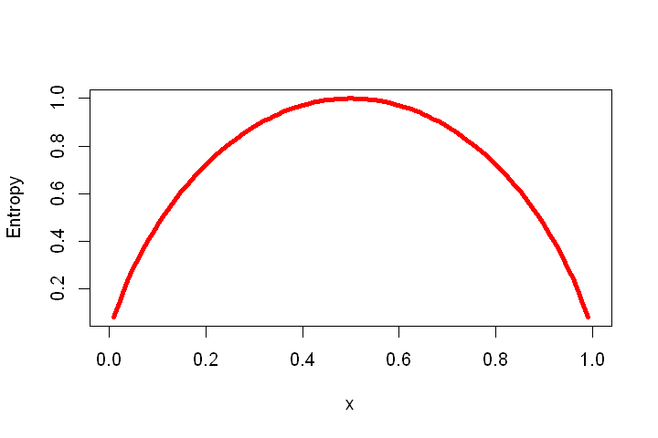
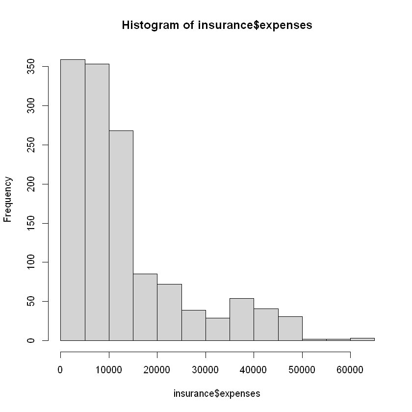
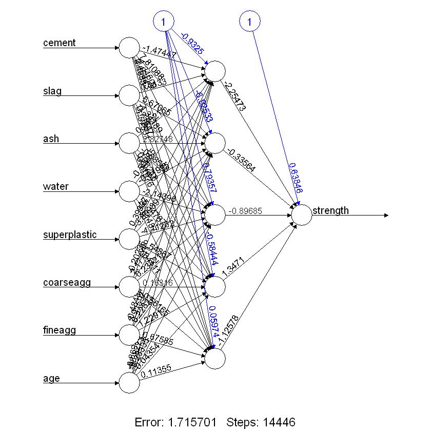
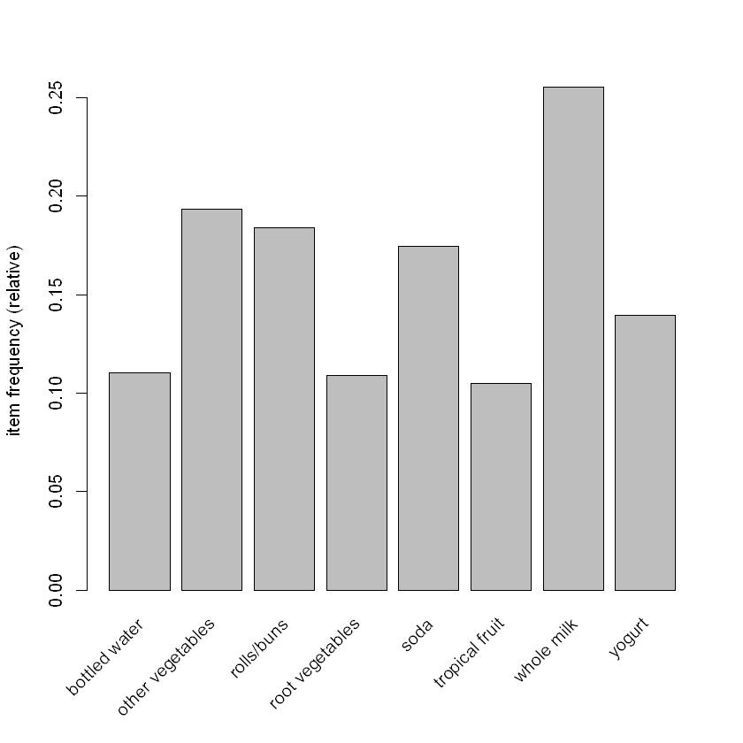
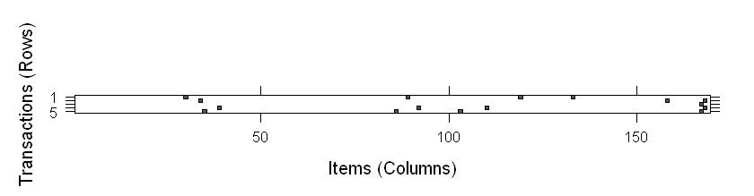

KNN乳腺癌诊断
过拟合：试图用模型拟合噪声。
|
|
%in%操作符：根据左边的值是否在右边的向量中，为操作符左边向量中的每一个值返回TRUE或FALASE。
近邻分类器非常适用于这样的分类任务，其中的特征和目标之间的关系众多、复杂，用其他方式难以理解，但是具有相似类的项目又是非常相似。
过拟合与欠拟合训练数据之间的平衡问题称为bias-variance tradeoff。
- 大的k会减少噪声数据对模型的影响或者减少噪声导致的模型波动，但是它会使分类器产生偏差，比如，它有忽视不易察觉但却很重要模式的风险。
- 较小的k值会给出更复杂的决策边界，它可以更精细地拟合训练数据。但并不知道是直线边界还是曲线边界能更好地代表将要学习的概念。
应用kNN算法之前，通常将特征转换为一个标准的范围内。
- min-max标准化
$$X_{new}=\frac{X-min(x)}{max(X)-min(X)}$$ - z-score标准化
$$X_{new}=\frac{X-\mu}{\sigma}=\frac{x-Mean(X)}{StdDev(X)}$$
为计算名义特征之间的距离，需要将其转换为数值格式：
dummy coding：编码后特征之间的距离总为1或者0，不需要进行额外的变换。- 如果名义特征是有序的，可以对顺序编号进行min-max标准化。
为什么kNN算法是懒惰的
kNN仅仅是一字不差地存储训练数据，这样训练阶段就进行得很快，进行预测的过程往往会变得相对较慢。由于高度依赖于训练案例，所以懒惰学习又称为instance-based learning或rote learning。由于不会建立一个新模型，该方法又被归类为non-parametric学习方法。
数据处理
数据包括乳房肿块细针抽吸活检图像的数字化的多项测度值，这些值代表出现在数字化图像中的细胞核特征。乳腺癌数据包括569例细胞活检案例，每个案例有32个特征。一个特征是识别号码，一个特征是癌症诊断结果，其他30个特征是数值型的实验室测量结果。癌症诊断结果用编码"M"表示恶性，用编码"B"表示良性。
|
|
'data.frame': 569 obs. of 32 variables:
$ id : int 87139402 8910251 905520 868871 9012568 906539 925291 87880 862989 89827 ...
$ diagnosis : chr "B" "B" "B" "B" ...
$ radius_mean : num 12.3 10.6 11 11.3 15.2 ...
$ texture_mean : num 12.4 18.9 16.8 13.4 13.2 ...
$ perimeter_mean : num 78.8 69.3 70.9 73 97.7 ...
$ area_mean : num 464 346 373 385 712 ...
$ smoothness_mean : num 0.1028 0.0969 0.1077 0.1164 0.0796 ...
$ compactness_mean : num 0.0698 0.1147 0.078 0.1136 0.0693 ...
$ concavity_mean : num 0.0399 0.0639 0.0305 0.0464 0.0339 ...
$ points_mean : num 0.037 0.0264 0.0248 0.048 0.0266 ...
$ symmetry_mean : num 0.196 0.192 0.171 0.177 0.172 ...
$ dimension_mean : num 0.0595 0.0649 0.0634 0.0607 0.0554 ...
$ radius_se : num 0.236 0.451 0.197 0.338 0.178 ...
$ texture_se : num 0.666 1.197 1.387 1.343 0.412 ...
$ perimeter_se : num 1.67 3.43 1.34 1.85 1.34 ...
$ area_se : num 17.4 27.1 13.5 26.3 17.7 ...
$ smoothness_se : num 0.00805 0.00747 0.00516 0.01127 0.00501 ...
$ compactness_se : num 0.0118 0.03581 0.00936 0.03498 0.01485 ...
$ concavity_se : num 0.0168 0.0335 0.0106 0.0219 0.0155 ...
$ points_se : num 0.01241 0.01365 0.00748 0.01965 0.00915 ...
$ symmetry_se : num 0.0192 0.035 0.0172 0.0158 0.0165 ...
$ dimension_se : num 0.00225 0.00332 0.0022 0.00344 0.00177 ...
$ radius_worst : num 13.5 11.9 12.4 11.9 16.2 ...
$ texture_worst : num 15.6 22.9 26.4 15.8 15.7 ...
$ perimeter_worst : num 87 78.3 79.9 76.5 104.5 ...
$ area_worst : num 549 425 471 434 819 ...
$ smoothness_worst : num 0.139 0.121 0.137 0.137 0.113 ...
$ compactness_worst: num 0.127 0.252 0.148 0.182 0.174 ...
$ concavity_worst : num 0.1242 0.1916 0.1067 0.0867 0.1362 ...
$ points_worst : num 0.0939 0.0793 0.0743 0.0861 0.0818 ...
$ symmetry_worst : num 0.283 0.294 0.3 0.21 0.249 ...
$ dimension_worst : num 0.0677 0.0759 0.0788 0.0678 0.0677 ...
id变量是每个病人在数据中的唯一标识符（ID），它不能提供有用的信息，需要从模型中排除。不管是什么机器学习方法，ID变量总要被剔除，因为ID可以用来独一无二地“预测”每一个案例，容易过拟合。变量diagnosis（诊断），是希望预测的结果。
|
|
B M
357 212
许多R机器学习分类器要求将目标属性编码为因子型，所以需要重新编码字符的diagnosis变量。同时用labels参数对B值和M值给出含有更多信息的标签。函数prop.table()输出结果显示，分别有62.7%的良性肿块和37.3%的恶性肿块。
|
|
Benign Malignant
62.7 37.3
min-max标准化
lapply()函数可以输入一个列表，然后把一个函数应该到列表的每一个元素。因为数据框是一个含有等长度向量的列表，可以使用lapply()函数将normalize()函数应用到数据框中的每一个特征。
|
|
模型训练
class包中knn()函数使用欧氏距离标识k个近邻，通过k个近邻的“投票”来对测试个案进行分类，奇数k有助于减少各个类投票数相等这一情况的发生。如果各个类的票数相等，则测试实例会被随机分类。函数knn()返回一个因子向量，为测试数据集中的每一个案例返回一个预测标签。
|
|
性能评估
评估wbcd_test_pred向量中预测的分类与wbcd_test_labels向量中已知的值的匹配程度，可使用gmodels添加包中的CrossTable()函数，该函数可以创建一个标识两个向量之间一致性的交叉表。
|
|
Cell Contents
|-------------------------|
| N |
| N / Row Total |
| N / Col Total |
| N / Table Total |
|-------------------------|
Total Observations in Table: 100
| wbcd_test_pred
wbcd_test_labels | Benign | Malignant | Row Total |
-----------------|-----------|-----------|-----------|
Benign | 61 | 0 | 61 |
| 1.000 | 0.000 | 0.610 |
| 0.968 | 0.000 | |
| 0.610 | 0.000 | |
-----------------|-----------|-----------|-----------|
Malignant | 2 | 37 | 39 |
| 0.051 | 0.949 | 0.390 |
| 0.032 | 1.000 | |
| 0.020 | 0.370 | |
-----------------|-----------|-----------|-----------|
Column Total | 63 | 37 | 100 |
| 0.630 | 0.370 | |
-----------------|-----------|-----------|-----------|
表格中单元格的百分比表示落在4个分类结果里的值所占的比例。在左上角的单元格中，是真阴性(True Negative)的结果。100个值中有61个值标识肿块是良性的，而KNN算法也正确地把它们标识为良性的。在右下角的单元格中，显示的是真阳性(True Positive)的结果，这里表示的是分类器和临床确定的标签一致认为肿块是恶性的情形。100个预测值中有37个是真阴性的。落在另一对角线上的单元格包含了kNN算法与真实标签不一致的案例计数。位于左下角单元格的2个案例是假阴性(False Negative)的结果，在这种情况下，预测的值是良性的，但肿瘤实际上是恶性的。这个方向上的错误可能会产生极其高昂的代价，因为它们可能导致一位病人认为自己没有癌症，而实际上这种疾病可能会继续蔓延。如果右上角的单元格里有值，他包含的是假阳性(False Positive)的结果。当模型把肿块标识为恶性的，而事实上它是良性的就会产生这里的值。尽管这类错误没有假阴性的结果那么危险，但这类错误也应该避免，因为它们可能导致医疗系统的额外财政负担，或者病人的额外压力，毕竟这需要提供额外的检查或者治疗。根据kNN算法，个肿块中，有两个是被错误分类的，准确度达到了98%。
性能提升
z-score标准化- 尝试其他的k值
朴素贝叶斯手机垃圾短信过滤
基于贝叶斯方法的分类器是利用训练数据并根据特征的取值来计算每个类别被观察到的概率。当分类器被应用到无标签数据时，分类器就会根据观测到的概率来预测新的特征最有可能是属于哪个类。
贝叶斯定理：
$$P(A|B)=\frac{P(B|A)P(A)}{P(B)}=\frac{P(A\bigcap B)}{B} $$
其中：
- $P(A|B)$：后验概率
- $P(B|A)$：似然概率
- $P(A)$：先验概率
- $P(B)$：边际似然概率
Naive Bayes
朴素贝叶斯假设数据集的所有特征都具有同样的重要性和类条件独立(class-conditional independence)。类条件独立意味着只要事件在相同类取值的条件下，这些事件就是相互独立的。本质上，在给定特征$F_1$,到$F_n$提供的证据的条件下，类$C$中水平为$L$的概率等于每一条证据在类$C$的水平$L$下的条件概率的乘积，再乘以类$C$的水平$L$的先验概率和尺度因子$1/Z$,尺度因子1/Z将把上述结果转换为一个概率值：
$$P(C_L|F_1,\cdots,F_n)=\frac{1}{Z}p(C_L)\prod_{i=1}^n{p(F_i|C_L)}$$
Laplace estimator
拉普拉斯估计本质上是给频率表中的每个计数加上一个较小的数，这样就保证了每一类中每个特征发生的概率是非零的。通常情况下，拉普拉斯估计中加上的数值设定为1，这样就保证每一类特征的组合至少在数据中出现一次。
在朴素贝叶斯算法中使用数值特征
由于朴素贝叶斯算法使用学习数据的频率表，所以为了创建类和特征值的组合所构成的矩阵，每个特征必须是分类变量。将数值型特征离散化，这就意味着将数值分到不同的分段(bin)中，这些分段就是离散化的类的水平。将数值特征离散化总是会导致信息量的减少，因为特征的原始粒度减少为几个数目较少的类别。在处理这个问题时，重要的是取得平衡，因为太少的分段会导致重要的趋势被掩盖，而太多的分段会导致朴素贝叶斯频率表中的计数值很小。
数据处理
由于短信通常限制为160个字符，所以可以用来确定一条短信是否是垃圾消息的文本量减少了，这种限制与小的不方便的手机键盘一起，导致很多人采用短信术语缩写的形式，这进一步含糊了合法消息和垃圾消息的界限。sms_spam数据集包含短信的文本信息，而且带有表明该短信是否为垃圾短信的标签。垃圾短息标记为spam，而非垃圾短信标记为ham。
构建分类器的第一步涉及原始数据的处理与分析，文本数据的准备具有挑战性，因为将词和句子转化成计算机能够理解的形式是必要的。这里把数据转化成一种称为词袋(bag-of-words)的表示方法，这种表示方法忽略了单词出现的顺序，只是简单地提供一个变量用来表示单词是否会出现。
|
|
'data.frame': 5559 obs. of 2 variables:
$ type: chr "ham" "ham" "ham" "spam" ...
$ text: chr "Hope you are having a good week. Just checking in" "K..give back my thanks." "Am also doing in cbe only. But have to pay." "complimentary 4 STAR Ibiza Holiday or 拢10,000 cash needs your URGENT collection. 09066364349 NOW from Landline"| __truncated__ ...
sms_raw数据文件包含了5559条短信，每条短信都有两个特征：type和text。将SMS的特征type编码为ham或者spam，而变量text存储整个SMS短信文本。type是一个字符串向量，由于它是一个分类变量，所以将其转换成一个因子会更好:
|
|
Factor w/ 2 levels "ham","spam": 1 1 1 2 2 1 1 1 2 1 ...
ham spam
4812 747
处理和分析文本数据
短信就是由词、空格、数字和标点符号组成的文本字符串。处理这种类型的复杂数据需要大量的思考工作，一方面需要考虑如何去除数字和标点符号，如何处理没有意义的单词，如and、but和or等，以及如何将句子分解成单个的单词。文本挖掘添加包tm提供了这些功能。处理文本数据的第一步涉及创建一个语料库，即一个文本文件的集合。首先，函数Corpus()创建了一个R对象来存储文本文档，函数VectorSource()来指示函数Corpus()使用向量sms_train$text的信息。
|
|
<<SimpleCorpus>>
Metadata: corpus specific: 1, document level (indexed): 0
Content: documents: 5559
<<SimpleCorpus>>
Metadata: corpus specific: 1, document level (indexed): 0
Content: documents: 3
[1] Hope you are having a good week. Just checking in
[2] K..give back my thanks.
[3] Am also doing in cbe only. But have to pay.
语料库包含的5559条训练数据短信。将文本内容分解成单词之前，需去除标点符号和可能会影响结果的其他字符。例如，把单词hello!、HELLO…和Hello都作为单词hello的实例。函数tm_map()提供了一种用来转换(及映射)tm语料库的方法,首先把所有短信的字母变成小写字母，并去除所有的数字:
|
|
在分析文本数据时，一个常见的做法就是去除填充词，比如to、and、but和or，这些词称为停用词（stop word）。tm添加包中提供的函数stopwords()函数包含了一组大量的停用词。如果想知道它包含的所有停用词，在命令行输入stopwords()即可。
|
|
已经去除了数字、停用词和标点符号的地方就变成了空格。最后一步就是去除额外的空格，只在词与词之间留下一个空格。
|
|
语料库中前3条短信在清洗前后的对比。短信消息已经被限制得只剩下最有意义的词，标点符号和大小写都已经被清理。
|
|
<<SimpleCorpus>>
Metadata: corpus specific: 1, document level (indexed): 0
Content: documents: 3
[1] Hope you are having a good week. Just checking in
[2] K..give back my thanks.
[3] Am also doing in cbe only. But have to pay.
<<SimpleCorpus>>
Metadata: corpus specific: 1, document level (indexed): 0
Content: documents: 3
[1] hope good week just checking kgive back thanks
[3] also cbe pay
最后通过一个所谓的标记化过程将消息分解成由单个单词组成的组。一个记号(token)就是一个文本字符串的单个元素，在这种情况下，本例中的记号就是单词。函数DocumentTermMatrix()将一个语料库作为输入，并创建一个稀疏矩阵的数据结构，其中矩阵的行表示文档(即短信)，矩阵的例表示单词。矩阵中的每一个单元存储一个数字，它代表由列标识的单词出现在由行标识的文档中的次数。这个数据结构被称为稀疏矩阵是因为在该矩阵中，绝大多数元素是以0来填充的。尽管每个消息包含了一些单词，但是任意具体的单词出现在给定的一条消息中概率都是很小的。
|
|
将数据（短信的排序已随机）分成两部分：75%的训练数据和25%的测试数据。
|
|
为了确认上述子集是一组完整的短信数据的代表，可以通过比较垃圾短信在训练数据和测试数据中所占的比例。可以看出无论是训练数据集还是测试数据集，他们都包含约13%的垃圾短信，这表明垃圾短息被平均分配在这两个数据集中。
|
|
ham spam
0.8647158 0.1352842
ham spam
0.8683453 0.1316547
可视化文本数据——词云
词云是一种可视化地描绘单词出现在文本数据中频率的方式。词云是由随机分布在词云图中的单词构成的，经常出现在文本中的单词会以比较大的字体呈现，而不太常见的单词将会以较小的字体呈现。wordcloud添加包提供了一个简单的R函数来创建这种类型的图形。
|
|

上述命令从sms_corpus_train语料库创建一个词云。random.order=FALSE使词云以非随机的顺序排列，而且出现频率越高的单词越靠近中心。如果没有设置random.order(默认设置)，该词云将会以默认的随机方式排列。参数min.freq用来指定显示在词云中的单词必须满足在语料库中出现的最小次数。通用的规则是，开始时设置参数min.freq的值为语料库中文档总数目的10%。这里，文档总数目的10%大约为40，因此，词云中的单词至少在40条短信中出现过。垃圾短信和非垃圾短信词云的比较：
|
|

参数max.words，它用来显示两个集合的任何一个集合中最常见的40个单词，而且参数scale允许调整词云中单词的最大字体和最小字体。由于是随机化的处理，所以每一个词云看上去可能会略有不同。你可以通过多次运行wordcloud()函数来选择最令人满意的词云,从而达到演示的目的。显而易见，左边的为垃圾词云。
为频繁出现的单词创建指示特征
最后一步就是把稀疏矩阵转换成可用于训练朴素贝叶斯分类器的数据结构，目前，该稀疏矩阵包含数量超过7000个的特征，即至少出现在一条短信中的每一个单词的特征。所有这些特征不可能都对分类发挥作用。为了减少特征的数量，我们将剔除训练数据中出现在少于5条短信中或者少于记录总数的0.1%的所有单词。查找频繁出现的单词需要使用tm添加包中的findFreqTerms()函数，该函数输入一个文档-单词矩阵，并返回一个字符向量，该向量包含出现字数不少于指定次数的单词。
|
|
- 'checking'
- 'good'
- 'hope'
- 'just'
- 'week'
- 'back'
- 'thanks'
- 'also'
- 'pay'
- 'cash'
- 'collection'
- 'complimentary'
- 'holiday'
- 'landline'
- 'lose'
- 'needs'
- 'now'
- 'urgent'
- '拢'
- 'award'
- 'box'
- 'call'
- 'collect'
- 'dear'
- 'final'
- 'notice'
- 'ppm'
- 'sae'
- 'tcs'
- 'tenerife'
- 'lar'
- 'later'
- 'pick'
- 'much'
- 'ask'
- 'father'
- 'please'
- 'free'
- 'game'
- 'mobile'
- 'official'
- 'play'
- 'right'
- 'send'
- 'text'
- 'room'
- 'swing'
- 'usf'
- 'whenever'
- 'big'
- 'hour'
- 'longer'
- 'man'
- 'sure'
- 'thing'
- 'though'
- 'anything'
- 'lor'
- 'ending'
- 'far'
- 'march'
- 'never'
- 'problem'
- 'ready'
- 'will'
- 'work'
- 'hmm'
- 'night'
- 'well'
- 'get'
- 'noon'
- 'see'
- 'chikku'
- 'cool'
- 'cos'
- 'darren'
- 'dat'
- 'den'
- 'dinner'
- 'dun'
- 'feel'
- 'leave'
- 'lunch'
- 'meet'
- 'meeting'
- 'saying'
- 'angry'
- 'tell'
- 'told'
- 'come'
- 'din'
- 'wan'
- 'can'
- 'draw'
- 'every'
- 'gift'
- 'music'
- 'starting'
- 'tscs'
- 'txt'
- 'vouchers'
- 'win'
- 'word'
- 'coming'
- 'goodnight'
- 'gym'
- 'birthday'
- 'today'
- 'wish'
- 'gud'
- 'reading'
- 'contact'
- 'cost'
- 'joke'
- 'less'
- 'one'
- 'ones'
- 'school'
- 'sent'
- 'think'
- 'thinking'
- 'love'
- 'read'
- 'bank'
- 'money'
- 'say'
- 'need'
- 'stop'
- 'sup'
- 'weather'
- 'thanx'
- 'plan'
- 'todays'
- 'cancer'
- 'care'
- 'cup'
- 'doctor'
- 'fat'
- 'sorry'
- 'morning'
- 'sleep'
- 'train'
- 'wine'
- 'auction'
- 'camera'
- 'digital'
- 'nokia'
- 'part'
- 'plus'
- 'take'
- 'won'
- 'cant'
- 'fri'
- 'leh'
- 'make'
- 'said'
- 'wait'
- 'carlos'
- 'hear'
- 'might'
- 'phones'
- 'texts'
- 'got'
- 'job'
- 'whats'
- 'chat'
- 'cheap'
- 'cheaper'
- 'gay'
- 'hot'
- 'national'
- 'pmin'
- 'rate'
- 'sale'
- 'anyway'
- 'help'
- 'know'
- 'let'
- 'use'
- 'yeah'
- 'centre'
- 'like'
- 'liked'
- 'road'
- 'something'
- 'min'
- 'awarded'
- 'claim'
- 'guaranteed'
- 'hrs'
- 'land'
- 'line'
- 'number'
- 'prize'
- 'valid'
- 'mah'
- 'tomorrow'
- 'believe'
- 'wat'
- 'hey'
- ⋯
- 'rock'
- 'walk'
- 'tells'
- 'london'
- 'txting'
- 'horny'
- 'live'
- 'ltd'
- 'normptone'
- 'wwq'
- 'wwwgetzedcouk'
- 'frnd'
- 'tour'
- 'choose'
- 'rather'
- 'timing'
- 'write'
- 'news'
- 'however'
- 'luck'
- 'feb'
- 'sounds'
- 'waste'
- 'open'
- 'goodmorning'
- 'uncle'
- 'disturb'
- 'pin'
- 'lookin'
- 'married'
- 'babes'
- 'months'
- 'press'
- 'john'
- 'added'
- 'fullonsmscom'
- 'visit'
- 'welcome'
- 'round'
- 'putting'
- 'announcement'
- 'spend'
- 'twice'
- 'tariffs'
- 'anymore'
- 'exciting'
- 'past'
- 'keeping'
- 'starts'
- 'almost'
- 'partner'
- 'single'
- 'cashbalance'
- 'hgsuitelands'
- 'maximize'
- 'rowwjhl'
- 'role'
- 'exams'
- 'jay'
- 'ten'
- 'simple'
- 'operator'
- 'mate'
- 'doin'
- 'thurs'
- 'normal'
- 'works'
- 'sis'
- 'bus'
- 'tickets'
- 'battery'
- 'unless'
- 'depends'
- 'anytime'
- 'studying'
- 'marry'
- 'relation'
- 'ave'
- 'stupid'
- 'mode'
- 'smth'
- 'ahead'
- 'aft'
- 'joking'
- 'bout'
- 'nah'
- 'tear'
- 'wks'
- 'paying'
- 'possible'
- 'fone'
- 'mrw'
- 'bid'
- 'loyalty'
- 'hungry'
- 'training'
- 'funny'
- 'earth'
- 'yar'
- 'door'
- 'receipt'
- 'registered'
- 'silent'
- 'understand'
- 'vodafone'
- 'sick'
- 'sucks'
- 'planned'
- 'pete'
- 'serious'
- 'sound'
- 'decide'
- 'happens'
- 'rates'
- 'entitled'
- 'save'
- 'access'
- 'lost'
- 'buying'
- 'teach'
- 'excellent'
- 'hate'
- 'lazy'
- 'direct'
- 'via'
- 'coffee'
- 'yep'
- 'sch'
- 'i鈧渕'
- 'semester'
- 'otherwise'
- 'yoga'
- 'lovable'
- 'juz'
- 'dnt'
- 'seriously'
- 'copy'
- 'aiyo'
- 'film'
- 'hurts'
- 'thru'
- 'user'
- 'arcade'
- 'crave'
- 'eating'
- 'dropped'
- 'log'
- 'argument'
- 'kick'
- 'wins'
- 'hop'
- 'die'
- 'monday'
- 'tot'
- 'nyt'
- 'link'
- 'future'
- 'sometimes'
- 'match'
- 'girlfrnd'
- 'lift'
- 'meaning'
- 'police'
- 'project'
- 'different'
- 'member'
- 'callertune'
- 'eyes'
- 'picking'
- 'fantastic'
- 'space'
- 'rent'
- 'httpwwwurawinnercom'
- 'onto'
- 'ugh'
- 'forever'
- '拢wk'
- 'miracle'
- 'gave'
- 'rply'
- 'king'
- 'pleasure'
- 'uve'
- 'records'
- 'study'
- 'frens'
- 'photo'
- 'bluetooth'
- 'stand'
- 'persons'
- 'handset'
- 'cell'
- 'catch'
- 'figure'
- 'ice'
- 'tea'
- 'tick'
- 'accept'
- 'naughty'
- 'worries'
限制训练矩阵和测试矩阵只包含出现频率高于5的单词：
|
|
<<DocumentTermMatrix (documents: 4169, terms: 1216)>>
Non-/sparse entries: 24011/5045493
Sparsity : 100%
Maximal term length: 19
Weighting : term frequency (tf)
现在，训练数据和测试数据包含了大约1200个特征，只对应于至少出现在5条短信中的单词。朴素贝叶斯分类器通常是训练具有明确特征的数据，这就带来了一个问题，因为稀疏矩阵中的元素表示一个单词出现在一条消息中的次数。于是，我们需要将其改变成因子向量，根据单词是否出现，简单地表示成yes或no。下面的代码定义了一个函数convert_counts()，它将计数转换成因子：
|
|
将convert_counts应用于稀疏矩阵的每一列（参数MARGIN来指定作用的对象是矩阵的行或列，MARGIN=1表示行）：
|
|
| checking | good | hope | just | week | back | thanks | also | pay | cash | ⋯ | handset | cell | catch | figure | ice | tea | tick | accept | naughty | worries | |
|---|---|---|---|---|---|---|---|---|---|---|---|---|---|---|---|---|---|---|---|---|---|
| 1 | Yes | Yes | Yes | Yes | Yes | No | No | No | No | No | ⋯ | No | No | No | No | No | No | No | No | No | No |
| 2 | No | No | No | No | No | Yes | Yes | No | No | No | ⋯ | No | No | No | No | No | No | No | No | No | No |
| 3 | No | No | No | No | No | No | No | Yes | Yes | No | ⋯ | No | No | No | No | No | No | No | No | No | No |
| 4 | No | No | No | No | No | No | No | No | No | Yes | ⋯ | No | No | No | No | No | No | No | No | No | No |
| 5 | No | No | No | No | No | No | No | No | No | Yes | ⋯ | No | No | No | No | No | No | No | No | No | No |
| 6 | No | No | No | No | No | No | No | No | No | No | ⋯ | No | No | No | No | No | No | No | No | No | No |
模型训练
采用em1017包中的朴素贝叶斯算法实现：
|
|
性能评估
用函数predict()进行预测，用CrossTable()函数比较预测值和真实值：
|
|
Cell Contents
|-------------------------|
| N |
| N / Col Total |
|-------------------------|
Total Observations in Table: 1390
| actual
predicted | ham | spam | Row Total |
-------------|-----------|-----------|-----------|
ham | 1203 | 30 | 1233 |
| 0.997 | 0.164 | |
-------------|-----------|-----------|-----------|
spam | 4 | 153 | 157 |
| 0.003 | 0.836 | |
-------------|-----------|-----------|-----------|
Column Total | 1207 | 183 | 1390 |
| 0.868 | 0.132 | |
-------------|-----------|-----------|-----------|
参数dnn(维度名称)重新标记行和列。从表中可以看出1207条非垃圾短信中有4条短信被错误地归为垃圾短信，比例为0.3%，而183条垃圾短信中有30条短信被错误地归为非垃圾短信，比例为16.4%。本案例的研究说明了为什么说朴素贝叶斯算法是应用于文本分类的一种标准算法，而且朴素贝叶斯方法可以直接拿来用，执行的效果也是出奇的好。另一方面，被错误地归为垃圾短信的四条短信可能会为过滤算法的部署带来明显的问题。如果过滤器导致某人错过一条重要的约会或者紧急情况的短信，那么他们会很快放弃这种产品，因此我们需要研究这些错误分类的短信，看看是哪里出了问题。
性能提升
在训练模型时，没有设置一个值来用于拉普拉斯估计。这样就允许在分类的过程中单词可能出现在0条垃圾短信或者0条非垃圾短信中。
|
|
Cell Contents
|-------------------------|
| N |
| N / Col Total |
|-------------------------|
Total Observations in Table: 1390
| actuall
predicted | ham | spam | Row Total |
-------------|-----------|-----------|-----------|
ham | 1204 | 24 | 1228 |
| 0.998 | 0.131 | |
-------------|-----------|-----------|-----------|
spam | 3 | 159 | 162 |
| 0.002 | 0.869 | |
-------------|-----------|-----------|-----------|
Column Total | 1207 | 183 | 1390 |
| 0.868 | 0.132 | |
-------------|-----------|-----------|-----------|
不仅将错误地归类为垃圾短信的非垃圾短信的数量由4减少到3，而且也将错误地归为非垃圾短信的垃圾短信的数量由30较少到了24。虽然这看上去是一个很小的改进，但我们必须意识到如果我们对垃圾短信的过滤过于激进，那么重要信息被遗漏的可能性是很大的。
总结
- 朴素贝叶斯分类器通常用于文本分类。
C5.0决策树识别高风险银行贷款
节点终止划分的条件：
- All (or nearly all) of the examples at the node have the same class
- There are no remaining features to distinguish among the examples
- The tree has grown to a predefined size limit
决策树容易对训练数据进行过拟合，给出过于具体细节的决策。
C5.0 algotithm
The first challenge that a decision tree will face is to identify which feature to split upon. The degree to which a subset of examples contains only a single class is known as purity. C5.0 uses entropy, typically, entropy is measured in bits.
$$Entropy(\mathbf S)=\sum_{i=1}^c -p_ilog_2(p_i)$$
对于两点分布。If we know that the proportion of examples in one class is $x$, then the proportion in the other class is ($1 – x$). Using the curve() function, we can then plot the entropy for all the possible values of $x$:
|
|

决策树算法使用熵值来计算有每一个可能特征的分割所引起的同质性（均匀性）变化，该计算称为information gain。对于特征$\mathbf F$，信息增益的计算方法是：entropy in the segment before the split ($\mathbf S_1$) and the partitions resulting from the split ($\mathbf S_2$):
$$InfoGain(\mathbf F)=Entropy(\mathbf S_1)-Entropy(\mathbf S_2)$$
the data is divided into more than one partition. Therefore, the function to calculate $Entropy(\mathbf S_2)$ needs to consider the total entropy across all of the partitions. It does this by weighing each partition’s entropy by the proportion of records falling into the partition:
$$Entropy(\mathbf S)=\sum_{i=1}^n w_i Entropy(\mathbf P_i)$$
The higher the information gain, the better a feature is at creating homogeneous groups after a split on this feature. Though it is used by C5.0, information gain is not the only splitting criterion that can be used to build decision trees. Other commonly used criteria are Gini index, Chi-Squared statistic, and gain ratio.
Pruning the decision tree
如果决策树增长过大，将会使许多决策过于具体，模型将会过度拟合训练数据。The process of pruning a decision tree involves reducing its size such that it generalizes better to unseen data.
One solution to this problem is to stop the tree from growing once it reaches a certain number of decisions or when the decision nodes contain only a small number of examples. This is called early stopping or pre-pruning the decision tree.
An alternative, called post-pruning, involves growing a tree that is intentionally too large and pruning leaf nodes to reduce the size of the tree to a more appropriate level.
C5.0算法的优点之一就是自动修剪，即它关注许多决策，能自动使用许多相当合理的默认值。该算法的总体策略就是事后修剪决策树，它先生成一个过度拟合训练数据的大决策树，然后删除对分类误差影响不大的节点和分支。在某些情况下，整个分枝会被进一步向上移动或者被一些简单的决策所取代，这两个移植分枝的过程分别称为子树提升和子树替换。
数据处理
The credit dataset includes 1,000 examples on loans, plus a set of numeric and nominal features indicating the characteristics of the loan and the loan applicant. A class variable indicates whether the loan went into default.
|
|
'data.frame': 1000 obs. of 17 variables:
$ checking_balance : Factor w/ 4 levels "< 0 DM","> 200 DM",..: 1 3 4 1 1 4 4 3 4 3 ...
$ months_loan_duration: int 6 48 12 42 24 36 24 36 12 30 ...
$ credit_history : Factor w/ 5 levels "critical","good",..: 1 2 1 2 4 2 2 2 2 1 ...
$ purpose : Factor w/ 6 levels "business","car",..: 5 5 4 5 2 4 5 2 5 2 ...
$ amount : int 1169 5951 2096 7882 4870 9055 2835 6948 3059 5234 ...
$ savings_balance : Factor w/ 5 levels "< 100 DM","> 1000 DM",..: 5 1 1 1 1 5 4 1 2 1 ...
$ employment_duration : Factor w/ 5 levels "< 1 year","> 7 years",..: 2 3 4 4 3 3 2 3 4 5 ...
$ percent_of_income : int 4 2 2 2 3 2 3 2 2 4 ...
$ years_at_residence : int 4 2 3 4 4 4 4 2 4 2 ...
$ age : int 67 22 49 45 53 35 53 35 61 28 ...
$ other_credit : Factor w/ 3 levels "bank","none",..: 2 2 2 2 2 2 2 2 2 2 ...
$ housing : Factor w/ 3 levels "other","own",..: 2 2 2 1 1 1 2 3 2 2 ...
$ existing_loans_count: int 2 1 1 1 2 1 1 1 1 2 ...
$ job : Factor w/ 4 levels "management","skilled",..: 2 2 4 2 2 4 2 1 4 1 ...
$ dependents : int 1 1 2 2 2 2 1 1 1 1 ...
$ phone : Factor w/ 2 levels "no","yes": 2 1 1 1 1 2 1 2 1 1 ...
$ default : Factor w/ 2 levels "no","yes": 1 2 1 1 2 1 1 1 1 2 ...
特征checking_balance和savings_balance表示支票和储蓄账户余额，并记录为分类变量；贷款期限（months_looan_duration）和信贷申请的金额（amount)为数值型变量。
|
|
< 0 DM > 200 DM 1 - 200 DM unknown
274 63 269 394
< 100 DM > 1000 DM 100 - 500 DM 500 - 1000 DM unknown
603 48 103 63 183
Min. 1st Qu. Median Mean 3rd Qu. Max.
4.0 12.0 18.0 20.9 24.0 72.0
Min. 1st Qu. Median Mean 3rd Qu. Max.
250 1366 2320 3271 3972 18424
The loan amounts ranged from 250 DM to 18,420 DM（Deutsche Marks）across terms of 4 to 72 months with a median duration of 18 months and an amount of 2,320 DM. The default vector indicates whether the loan applicant was unable to meet the agreed payment terms and went into default. A total of 30 percent of the loans in this dataset went into default:
|
|
no yes
700 300
模型训练
order()函数以升序或者降序的方式对数据列表进行重新排列，入股将order()函数与生成一系列随机数的函数相结合，就可以生成一个随机排列的列表。runif(1000)生成了一个含有1000个随机数的列表。然后，order()函数返回一个数值向量，该向量记录了排序之后的1000个随机数在原来序列中的位置，用这些位置筛选credit数据框中的行。划分数据集，每个数据集中大约30%的违约贷款。
|
|
Min. 1st Qu. Median Mean 3rd Qu. Max.
250 1366 2320 3271 3972 18424
Min. 1st Qu. Median Mean 3rd Qu. Max.
250 1366 2320 3271 3972 18424
no yes
0.7022222 0.2977778
no yes
0.68 0.32
Call:
C5.0.default(x = credit_train[-17], y = credit_train$default)
Classification Tree
Number of samples: 900
Number of predictors: 16
Tree size: 67
Non-standard options: attempt to group attributes
900个样本，16个特征，67个决策。查看决策：
|
|
Call:
C5.0.default(x = credit_train[-17], y = credit_train$default)
C5.0 [Release 2.07 GPL Edition] Sun Sep 12 20:39:17 2021
-------------------------------
Class specified by attribute `outcome'
Read 900 cases (17 attributes) from undefined.data
Decision tree:
checking_balance = unknown: no (358/44)
checking_balance in {< 0 DM,> 200 DM,1 - 200 DM}:
:...credit_history in {perfect,very good}:
:...dependents > 1: yes (10/1)
: dependents <= 1:
: :...savings_balance = < 100 DM: yes (39/11)
: savings_balance in {> 1000 DM,500 - 1000 DM,unknown}: no (8/1)
: savings_balance = 100 - 500 DM:
: :...checking_balance = < 0 DM: no (1)
: checking_balance in {> 200 DM,1 - 200 DM}: yes (5/1)
credit_history in {critical,good,poor}:
:...months_loan_duration <= 11: no (87/14)
months_loan_duration > 11:
:...savings_balance = > 1000 DM: no (13)
savings_balance in {< 100 DM,100 - 500 DM,500 - 1000 DM,unknown}:
:...checking_balance = > 200 DM:
:...dependents > 1: yes (3)
: dependents <= 1:
: :...credit_history in {good,poor}: no (23/3)
: credit_history = critical:
: :...amount <= 2337: yes (3)
: amount > 2337: no (6)
checking_balance = 1 - 200 DM:
:...savings_balance = unknown: no (34/6)
: savings_balance in {< 100 DM,100 - 500 DM,500 - 1000 DM}:
: :...months_loan_duration > 45: yes (11/1)
: months_loan_duration <= 45:
: :...other_credit = store:
: :...age <= 35: yes (4)
: : age > 35: no (2)
: other_credit = bank:
: :...years_at_residence <= 1: no (3)
: : years_at_residence > 1:
: : :...existing_loans_count <= 1: yes (5)
: : existing_loans_count > 1:
: : :...percent_of_income <= 2: no (4/1)
: : percent_of_income > 2: yes (3)
: other_credit = none:
: :...job = unemployed: no (1)
: job = management:
: :...amount <= 7511: no (10/3)
: : amount > 7511: yes (7)
: job = unskilled: [S1]
: job = skilled:
: :...dependents <= 1: no (55/15)
: dependents > 1:
: :...age <= 34: no (3)
: age > 34: yes (4)
checking_balance = < 0 DM:
:...job = management: no (26/6)
job = unemployed: yes (4/1)
job = unskilled:
:...employment_duration in {4 - 7 years,
: : unemployed}: no (4)
: employment_duration = < 1 year:
: :...other_credit = bank: no (1)
: : other_credit in {none,store}: yes (11/2)
: employment_duration = > 7 years:
: :...other_credit in {bank,none}: no (5/1)
: : other_credit = store: yes (2)
: employment_duration = 1 - 4 years:
: :...age <= 39: no (14/3)
: age > 39:
: :...credit_history in {critical,good}: yes (3)
: credit_history = poor: no (1)
job = skilled:
:...credit_history = poor:
:...savings_balance in {< 100 DM,100 - 500 DM,
: : 500 - 1000 DM}: yes (8)
: savings_balance = unknown: no (1)
credit_history = critical:
:...other_credit = store: no (0)
: other_credit = bank: yes (4)
: other_credit = none:
: :...savings_balance in {100 - 500 DM,
: : unknown}: no (1)
: savings_balance = 500 - 1000 DM: yes (1)
: savings_balance = < 100 DM:
: :...months_loan_duration <= 13:
: :...percent_of_income <= 3: yes (3)
: : percent_of_income > 3: no (3/1)
: months_loan_duration > 13:
: :...amount <= 5293: no (10/1)
: amount > 5293: yes (2)
credit_history = good:
:...existing_loans_count > 1: yes (5)
existing_loans_count <= 1:
:...other_credit = store: no (2)
other_credit = bank:
:...percent_of_income <= 2: yes (2)
: percent_of_income > 2: no (6/1)
other_credit = none: [S2]
SubTree [S1]
employment_duration in {< 1 year,1 - 4 years}: yes (11/3)
employment_duration in {> 7 years,4 - 7 years,unemployed}: no (8)
SubTree [S2]
savings_balance = 100 - 500 DM: yes (3)
savings_balance = 500 - 1000 DM: no (1)
savings_balance = unknown:
:...phone = no: yes (9/1)
: phone = yes: no (3/1)
savings_balance = < 100 DM:
:...percent_of_income <= 1: no (4)
percent_of_income > 1:
:...phone = yes: yes (10/1)
phone = no:
:...purpose in {business,car0,education,renovations}: yes (3)
purpose = car:
:...percent_of_income <= 3: no (2)
: percent_of_income > 3: yes (6/1)
purpose = furniture/appliances:
:...years_at_residence <= 1: no (4)
years_at_residence > 1:
:...housing = other: no (1)
housing = rent: yes (2)
housing = own:
:...amount <= 1778: no (3)
amount > 1778:
:...years_at_residence <= 3: yes (6)
years_at_residence > 3: no (3/1)
Evaluation on training data (900 cases):
Decision Tree
----------------
Size Errors
66 125(13.9%) <<
(a) (b) <-classified as
---- ----
609 23 (a): class no
102 166 (b): class yes
Attribute usage:
100.00% checking_balance
60.22% credit_history
53.22% months_loan_duration
49.44% savings_balance
30.89% job
25.89% other_credit
17.78% dependents
9.67% existing_loans_count
7.22% percent_of_income
6.67% employment_duration
5.78% phone
5.56% amount
3.78% years_at_residence
3.44% age
3.33% purpose
1.67% housing
Time: 0.0 secs
对上述输出前四行的解读：
- 如果支票账户余额是未知的，则归为类不太可能违约。
- 否则，如果账户支票余额少于0马克，或者1~200马克之间，或者超过200马克，或者…
- 信用记录非常好，甚至完美，或者…
- 有多个抚养人，就归类为很有可能违约。
括号中的数字表示符合该决策准则的案例的数量以及根据该决策不正确分类的案例的数量。例如，在第一行中，(358/44)表示有358个案例符合该决策条件，有44个案例被错误地归类为no，也就是说不太可能违约，换句话说，就是由44个申请者确实违约了。
summary(credit_model)输出一个混淆矩阵，这是一个交叉列表，表示模型对训练数据错误分类的记录数。字段Errors说明模型除了对900个训练案例中的125个案例以外的所有案例都进行了正确的分类，错误率为13.9%。共有23个真实值为no的个案被错误地归类为yes(错误肯定)，而有102个真实值为yes的个案被错误地归类为no(错误否定)。
性能评估
设定参数prop.c和prop.r为FALSE来删除表中列与行的百分比，剩余的百分比(prop.t)表示单元格中的记录数占总记录数的百分比。
|
|
Cell Contents
|-------------------------|
| N |
| N / Table Total |
|-------------------------|
Total Observations in Table: 100
| predicted default
actual default | no | yes | Row Total |
---------------|-----------|-----------|-----------|
no | 57 | 11 | 68 |
| 0.570 | 0.110 | |
---------------|-----------|-----------|-----------|
yes | 16 | 16 | 32 |
| 0.160 | 0.160 | |
---------------|-----------|-----------|-----------|
Column Total | 73 | 27 | 100 |
---------------|-----------|-----------|-----------|
100个贷款申请者的记录测试中，模型正确预测了57个申请者确实没有违约，而16个的申请者确实违约了，模型的准确率为73%，而错误率为27%。在训练数据上模型的性能略差，但并不令人意外，因为对于未知的数据，模型的性能往往会差些。另外，该模型只正确预测了测试数据中32个违约者的50%。遗憾的是，这种类型的错误是一个潜在的非常严重的错误。
性能提升
提高决策树的准确性
5.0算法对C4.5算法改进的一种方法就是通过加入自适应增强(adaptive boosting)算法，这是许多决策树构建的一个过程，然后这些决策树通过投票表决的方法为每一个案例选择最佳分类。参数trials设置了一个上限，如果该算法识别出额外的试验似乎并没有提高模型的准确性，那么它将停止添加决策树。
|
|
Call:
C5.0.default(x = credit_train[-17], y = credit_train$default, trials = 10)
Classification Tree
Number of samples: 900
Number of predictors: 16
Number of boosting iterations: 10
Average tree size: 56
Non-standard options: attempt to group attributes
通过10次迭代，决策树变小。
|
|
Call:
C5.0.default(x = credit_train[-17], y = credit_train$default, trials = 10)
C5.0 [Release 2.07 GPL Edition] Sun Sep 12 22:46:19 2021
-------------------------------
Class specified by attribute `outcome'
Read 900 cases (17 attributes) from undefined.data
----- Trial 0: -----
Decision tree:
checking_balance = unknown: no (358/44)
checking_balance in {< 0 DM,> 200 DM,1 - 200 DM}:
:...credit_history in {perfect,very good}:
:...dependents > 1: yes (10/1)
: dependents <= 1:
: :...savings_balance = < 100 DM: yes (39/11)
: savings_balance in {> 1000 DM,500 - 1000 DM,unknown}: no (8/1)
: savings_balance = 100 - 500 DM:
: :...checking_balance = < 0 DM: no (1)
: checking_balance in {> 200 DM,1 - 200 DM}: yes (5/1)
credit_history in {critical,good,poor}:
:...months_loan_duration <= 11: no (87/14)
months_loan_duration > 11:
:...savings_balance = > 1000 DM: no (13)
savings_balance in {< 100 DM,100 - 500 DM,500 - 1000 DM,unknown}:
:...checking_balance = > 200 DM:
:...dependents > 1: yes (3)
: dependents <= 1:
: :...credit_history in {good,poor}: no (23/3)
: credit_history = critical:
: :...amount <= 2337: yes (3)
: amount > 2337: no (6)
checking_balance = 1 - 200 DM:
:...savings_balance = unknown: no (34/6)
: savings_balance in {< 100 DM,100 - 500 DM,500 - 1000 DM}:
: :...months_loan_duration > 45: yes (11/1)
: months_loan_duration <= 45:
: :...other_credit = store:
: :...age <= 35: yes (4)
: : age > 35: no (2)
: other_credit = bank:
: :...years_at_residence <= 1: no (3)
: : years_at_residence > 1:
: : :...existing_loans_count <= 1: yes (5)
: : existing_loans_count > 1:
: : :...percent_of_income <= 2: no (4/1)
: : percent_of_income > 2: yes (3)
: other_credit = none:
: :...job = unemployed: no (1)
: job = management:
: :...amount <= 7511: no (10/3)
: : amount > 7511: yes (7)
: job = unskilled: [S1]
: job = skilled:
: :...dependents <= 1: no (55/15)
: dependents > 1:
: :...age <= 34: no (3)
: age > 34: yes (4)
checking_balance = < 0 DM:
:...job = management: no (26/6)
job = unemployed: yes (4/1)
job = unskilled:
:...employment_duration in {4 - 7 years,
: : unemployed}: no (4)
: employment_duration = < 1 year:
: :...other_credit = bank: no (1)
: : other_credit in {none,store}: yes (11/2)
: employment_duration = > 7 years:
: :...other_credit in {bank,none}: no (5/1)
: : other_credit = store: yes (2)
: employment_duration = 1 - 4 years:
: :...age <= 39: no (14/3)
: age > 39:
: :...credit_history in {critical,good}: yes (3)
: credit_history = poor: no (1)
job = skilled:
:...credit_history = poor:
:...savings_balance in {< 100 DM,100 - 500 DM,
: : 500 - 1000 DM}: yes (8)
: savings_balance = unknown: no (1)
credit_history = critical:
:...other_credit = store: no (0)
: other_credit = bank: yes (4)
: other_credit = none:
: :...savings_balance in {100 - 500 DM,
: : unknown}: no (1)
: savings_balance = 500 - 1000 DM: yes (1)
: savings_balance = < 100 DM:
: :...months_loan_duration <= 13:
: :...percent_of_income <= 3: yes (3)
: : percent_of_income > 3: no (3/1)
: months_loan_duration > 13:
: :...amount <= 5293: no (10/1)
: amount > 5293: yes (2)
credit_history = good:
:...existing_loans_count > 1: yes (5)
existing_loans_count <= 1:
:...other_credit = store: no (2)
other_credit = bank:
:...percent_of_income <= 2: yes (2)
: percent_of_income > 2: no (6/1)
other_credit = none: [S2]
SubTree [S1]
employment_duration in {< 1 year,1 - 4 years}: yes (11/3)
employment_duration in {> 7 years,4 - 7 years,unemployed}: no (8)
SubTree [S2]
savings_balance = 100 - 500 DM: yes (3)
savings_balance = 500 - 1000 DM: no (1)
savings_balance = unknown:
:...phone = no: yes (9/1)
: phone = yes: no (3/1)
savings_balance = < 100 DM:
:...percent_of_income <= 1: no (4)
percent_of_income > 1:
:...phone = yes: yes (10/1)
phone = no:
:...purpose in {business,car0,education,renovations}: yes (3)
purpose = car:
:...percent_of_income <= 3: no (2)
: percent_of_income > 3: yes (6/1)
purpose = furniture/appliances:
:...years_at_residence <= 1: no (4)
years_at_residence > 1:
:...housing = other: no (1)
housing = rent: yes (2)
housing = own:
:...amount <= 1778: no (3)
amount > 1778:
:...years_at_residence <= 3: yes (6)
years_at_residence > 3: no (3/1)
----- Trial 1: -----
Decision tree:
checking_balance in {< 0 DM,1 - 200 DM}:
:...savings_balance in {> 1000 DM,500 - 1000 DM}: no (29/8.6)
: savings_balance = 100 - 500 DM:
: :...credit_history in {critical,perfect,poor}: no (18/3.2)
: : credit_history in {good,very good}: yes (30.5/9.5)
: savings_balance = unknown:
: :...credit_history in {critical,perfect,poor}: no (16.6)
: : credit_history in {good,very good}:
: : :...job = management: yes (9.3/2.4)
: : job in {unemployed,unskilled}: no (7.9/0.8)
: : job = skilled:
: : :...purpose in {business,car0,renovations}: yes (0)
: : purpose = education: no (3.2)
: : purpose in {car,furniture/appliances}:
: : :...months_loan_duration <= 18: yes (16.2/3.2)
: : months_loan_duration > 18: no (16.5/7)
: savings_balance = < 100 DM:
: :...months_loan_duration > 47: yes (24.3/3.1)
: months_loan_duration <= 47:
: :...job = unemployed: yes (7/3.1)
: job = unskilled:
: :...housing in {other,rent}: yes (14.2/4.7)
: : housing = own: no (66.4/20.3)
: job = skilled:
: :...percent_of_income > 2: yes (109.5/40.2)
: : percent_of_income <= 2:
: : :...employment_duration in {< 1 year,> 7 years,
: : : 4 - 7 years}: yes (36/15)
: : employment_duration in {1 - 4 years,
: : unemployed}: no (31.3/7)
: job = management:
: :...existing_loans_count > 2: no (3.2)
: existing_loans_count <= 2:
: :...employment_duration in {< 1 year,
: : 4 - 7 years}: no (9.4/0.8)
: employment_duration in {> 7 years,
: : 1 - 4 years}: yes (30.3/7.1)
: employment_duration = unemployed:
: :...percent_of_income <= 2: no (4.7)
: percent_of_income > 2: yes (13.9/4)
checking_balance in {> 200 DM,unknown}:
:...other_credit in {bank,store}:
:...purpose = renovations: yes (0)
: purpose in {car0,furniture/appliances}: no (31.4/6.9)
: purpose in {business,car,education}:
: :...percent_of_income <= 1: no (7/2.3)
: percent_of_income > 1: yes (44.8/11.1)
other_credit = none:
:...credit_history in {critical,perfect}: no (116.7/10.1)
credit_history in {good,poor,very good}:
:...existing_loans_count > 1:
:...employment_duration = 4 - 7 years: no (7.9)
: employment_duration in {< 1 year,> 7 years,1 - 4 years,
: : unemployed}:
: :...job in {management,unemployed}: yes (6.9)
: job in {skilled,unskilled}:
: :...years_at_residence <= 1: yes (4.6)
: years_at_residence > 1:
: :...years_at_residence <= 3: no (15.7/2.3)
: years_at_residence > 3: yes (15.5/4)
existing_loans_count <= 1:
:...credit_history = poor: yes (9.3/2.4)
credit_history = very good: no (1.6/0.8)
credit_history = good:
:...phone = yes: no (54.4/4.6)
phone = no:
:...job in {management,unemployed}: no (2.4)
job = skilled:
:...savings_balance in {> 1000 DM,100 - 500 DM,
: : 500 - 1000 DM,
: : unknown}: no (23.7)
: savings_balance = < 100 DM:
: :...years_at_residence <= 2: no (19.6/4.6)
: years_at_residence > 2: yes (12.4/3.2)
job = unskilled:
:...checking_balance = > 200 DM: yes (10.1/2.4)
checking_balance = unknown:
:...percent_of_income <= 3: no (9.5)
percent_of_income > 3: yes (9.3/2.4)
----- Trial 2: -----
Decision tree:
months_loan_duration <= 8:
:...existing_loans_count > 1: no (19.1)
: existing_loans_count <= 1:
: :...amount <= 3161: no (45.5/7.7)
: amount > 3161: yes (6.3/0.6)
months_loan_duration > 8:
:...checking_balance in {< 0 DM,> 200 DM,1 - 200 DM}:
:...employment_duration = unemployed:
: :...months_loan_duration > 33: no (11.4)
: : months_loan_duration <= 33:
: : :...phone = no: yes (11/2.7)
: : phone = yes: no (15.5/6.5)
: employment_duration = 4 - 7 years:
: :...months_loan_duration <= 22: no (44.7/6.7)
: : months_loan_duration > 22:
: : :...job = management: no (4.6/0.6)
: : job in {unemployed,unskilled}: yes (4.6/1.3)
: : job = skilled:
: : :...savings_balance in {< 100 DM,> 1000 DM,
: : : 500 - 1000 DM}: yes (22.5/7.8)
: : savings_balance in {100 - 500 DM,unknown}: no (8.8/2.1)
: employment_duration = > 7 years:
: :...amount > 6948: yes (13/1.3)
: : amount <= 6948:
: : :...purpose in {business,car0,education}: yes (22.8/7.8)
: : purpose = renovations: no (1.3)
: : purpose = car:
: : :...job = unemployed: no (0)
: : : job = unskilled: yes (6.9)
: : : job in {management,skilled}:
: : : :...years_at_residence <= 1: yes (2.5)
: : : years_at_residence > 1: no (28.6/7.1)
: : purpose = furniture/appliances:
: : :...other_credit in {bank,store}: yes (7.3/2.1)
: : other_credit = none:
: : :...job = management: yes (5.1/1.3)
: : job in {skilled,unemployed,unskilled}: no (29.2/3.4)
: employment_duration = 1 - 4 years:
: :...savings_balance = > 1000 DM: no (6.4)
: : savings_balance in {< 100 DM,100 - 500 DM,500 - 1000 DM,unknown}:
: : :...housing = other: yes (12/1.9)
: : housing in {own,rent}:
: : :...credit_history in {perfect,poor,very good}: no (29.3/8.6)
: : credit_history = critical:
: : :...months_loan_duration <= 16: no (10.6/0.6)
: : : months_loan_duration > 16: yes (14.5/4.1)
: : credit_history = good:
: : :...phone = no: yes (81.6/33.5)
: : phone = yes: no (30.2/11)
: employment_duration = < 1 year:
: :...savings_balance in {> 1000 DM,unknown}: no (9.1/1.9)
: savings_balance in {100 - 500 DM,500 - 1000 DM}: yes (15.6/3.4)
: savings_balance = < 100 DM:
: :...housing = other: no (4.7)
: housing in {own,rent}:
: :...years_at_residence > 1: yes (41.6/11)
: years_at_residence <= 1:
: :...job in {management,unskilled}: no (13.9/4.9)
: job = unemployed: yes (2.1)
: job = skilled:
: :...percent_of_income <= 3: yes (12.3/3.3)
: percent_of_income > 3: no (9.7/0.6)
checking_balance = unknown:
:...other_credit in {bank,store}:
:...employment_duration in {1 - 4 years,unemployed}: yes (31.9/7.2)
: employment_duration in {< 1 year,> 7 years,4 - 7 years}:
: :...other_credit = store: no (8.1)
: other_credit = bank:
: :...age <= 43: yes (22/8.6)
: age > 43: no (9)
other_credit = none:
:...age > 30: no (134.2/16.1)
age <= 30:
:...amount > 6458: yes (14.1/2.6)
amount <= 6458:
:...age <= 22: yes (17.4/5.9)
age > 22:
:...percent_of_income <= 3: no (22.7)
percent_of_income > 3:
:...job = unemployed: no (0)
job in {management,unskilled}: yes (12.5/3.9)
job = skilled:
:...purpose in {business,education,
: renovations}: yes (8.6/1.9)
purpose in {car,car0,
furniture/appliances}: no (14.9)
----- Trial 3: -----
Decision tree:
amount > 11054:
:...credit_history in {critical,good,perfect}: yes (24.9/2.7)
: credit_history in {poor,very good}: no (4.7/0.5)
amount <= 11054:
:...checking_balance in {> 200 DM,unknown}:
:...employment_duration = > 7 years: no (91/18.6)
: employment_duration = unemployed: yes (14.3/6.6)
: employment_duration = 1 - 4 years:
: :...job = management: yes (16.6/6.6)
: : job in {skilled,unemployed,unskilled}: no (113.5/30.7)
: employment_duration = 4 - 7 years:
: :...age <= 22: yes (5.2/1.3)
: : age > 22: no (49.9/4.7)
: employment_duration = < 1 year:
: :...purpose in {car,car0}: no (13.3)
: purpose in {business,education,furniture/appliances,renovations}:
: :...amount > 6681: yes (7)
: amount <= 6681:
: :...other_credit in {bank,store}: no (4)
: other_credit = none:
: :...months_loan_duration > 33: no (2.5)
: months_loan_duration <= 33:
: :...amount <= 1503: no (12.7/2.3)
: amount > 1503: yes (18.3/5)
checking_balance in {< 0 DM,1 - 200 DM}:
:...credit_history = perfect:
:...percent_of_income <= 3: no (16.5/5.9)
: percent_of_income > 3: yes (6.9)
credit_history = poor:
:...percent_of_income <= 1: no (7.2)
: percent_of_income > 1:
: :...savings_balance in {< 100 DM,> 1000 DM,
: : 500 - 1000 DM}: yes (19.2/3.9)
: savings_balance in {100 - 500 DM,unknown}: no (12.8/2.3)
credit_history = very good:
:...other_credit = none: yes (10.6)
: other_credit in {bank,store}:
: :...months_loan_duration <= 9: yes (4.7)
: months_loan_duration > 9: no (20.6/8.1)
credit_history = critical:
:...years_at_residence <= 1: no (7.5)
: years_at_residence > 1:
: :...savings_balance in {> 1000 DM,100 - 500 DM,
: : unknown}: no (16.3/2.4)
: savings_balance = 500 - 1000 DM: yes (2.8/0.5)
: savings_balance = < 100 DM:
: :...dependents > 1: no (12.9/0.5)
: dependents <= 1:
: :...other_credit = bank: yes (6.7/0.5)
: other_credit = store: no (1.7/0.5)
: other_credit = none:
: :...age > 61: no (6.4)
: age <= 61:
: :...existing_loans_count > 2: no (3.3)
: existing_loans_count <= 2:
: :...job in {management,unemployed,
: : unskilled}: yes (14.6/2.7)
: job = skilled: no (41.3/17.6)
credit_history = good:
:...purpose in {business,car0,education,renovations}: no (40.7/12.7)
purpose = furniture/appliances:
:...months_loan_duration <= 7: no (10.6)
: months_loan_duration > 7:
: :...phone = no: no (123.2/45.7)
: phone = yes:
: :...years_at_residence <= 3: yes (27.8/6.6)
: years_at_residence > 3: no (9.4/3.1)
purpose = car:
:...employment_duration = unemployed: no (7.1)
employment_duration in {< 1 year,> 7 years,1 - 4 years,
: 4 - 7 years}:
:...dependents > 1: no (17.3/5.8)
dependents <= 1:
:...percent_of_income <= 2:
:...amount <= 2697: yes (8.6/1.3)
: amount > 2697: no (15.4/2.2)
percent_of_income > 2:
:...percent_of_income <= 3: yes (17/2.3)
percent_of_income > 3:
:...phone = yes: no (5.7/1.1)
phone = no:
:...checking_balance = < 0 DM: yes (16.7/1.3)
checking_balance = 1 - 200 DM: no (10.6/4.3)
----- Trial 4: -----
Decision tree:
checking_balance = unknown:
:...other_credit in {bank,store}:
: :...employment_duration in {< 1 year,4 - 7 years}: no (16.1/3.4)
: : employment_duration = unemployed: yes (5.8/1.9)
: : employment_duration = > 7 years:
: : :...age <= 41: yes (16.4/6)
: : : age > 41: no (7.7)
: : employment_duration = 1 - 4 years:
: : :...years_at_residence <= 1: no (3.1)
: : years_at_residence > 1:
: : :...amount <= 1503: no (3.6)
: : amount > 1503: yes (26.3/6)
: other_credit = none:
: :...credit_history in {perfect,very good}: no (2.8)
: credit_history = critical:
: :...age > 30: no (45.3)
: : age <= 30:
: : :...purpose in {business,car,car0,furniture/appliances,
: : : renovations}: no (21.4/3.9)
: : purpose = education: yes (3)
: credit_history = poor:
: :...dependents > 1: yes (8.2/1.8)
: : dependents <= 1:
: : :...age <= 29: yes (11.8/4.6)
: : age > 29: no (9.9)
: credit_history = good:
: :...existing_loans_count > 1:
: :...percent_of_income <= 2: yes (13/0.4)
: : percent_of_income > 2: no (7.5/1.3)
: existing_loans_count <= 1:
: :...percent_of_income <= 2: no (30.9/1.3)
: percent_of_income > 2:
: :...employment_duration = > 7 years: no (11.2)
: employment_duration in {< 1 year,1 - 4 years,4 - 7 years,
: : unemployed}:
: :...job in {management,unemployed}: no (10.7/4.9)
: job = unskilled: yes (10/3.6)
: job = skilled:
: :...age <= 23: yes (9.3/2.6)
: age > 23: no (17.9)
checking_balance in {< 0 DM,> 200 DM,1 - 200 DM}:
:...credit_history = very good:
:...age <= 23: no (3)
: age > 23: yes (38.4/9.1)
credit_history = perfect:
:...housing in {other,rent}: yes (9.1)
: housing = own:
: :...percent_of_income > 3: yes (5)
: percent_of_income <= 3:
: :...other_credit in {bank,none}: no (16/3.9)
: other_credit = store: yes (2.7)
credit_history = poor:
:...savings_balance in {> 1000 DM,500 - 1000 DM}: yes (0)
: savings_balance = unknown: no (5.9)
: savings_balance in {< 100 DM,100 - 500 DM}:
: :...housing = rent: no (4.7/0.4)
: housing in {other,own}:
: :...percent_of_income <= 2: no (14.4/3.7)
: percent_of_income > 2: yes (16.9/2.7)
credit_history = good:
:...amount > 8648: yes (19.4/2.4)
: amount <= 8648:
: :...purpose in {business,car0}: no (18/4.2)
: purpose = renovations: yes (7.1/3)
: purpose = education:
: :...checking_balance = < 0 DM: yes (12.1/1.4)
: : checking_balance in {> 200 DM,1 - 200 DM}: no (8.7/1.1)
: purpose = car:
: :...employment_duration = unemployed: no (5.9)
: : employment_duration in {< 1 year,> 7 years,1 - 4 years,
: : : 4 - 7 years}:
: : :...job in {management,unemployed}: no (8.6/2.4)
: : job = unskilled: yes (31.1/10.2)
: : job = skilled:
: : :...housing in {other,rent}: yes (24.2/6.4)
: : housing = own:
: : :...dependents > 1: no (4.3)
: : dependents <= 1:
: : :...existing_loans_count > 1: no (3.6)
: : existing_loans_count <= 1:
: : :...months_loan_duration <= 13: no (9.2/1.5)
: : months_loan_duration > 13: yes (11.6/1.4)
: purpose = furniture/appliances:
: :...savings_balance in {> 1000 DM,500 - 1000 DM}: no (8.8/1.8)
: savings_balance = 100 - 500 DM: yes (16.1/3.5)
: savings_balance = unknown:
: :...employment_duration in {< 1 year,> 7 years,1 - 4 years,
: : : unemployed}: yes (20.8/6.5)
: : employment_duration = 4 - 7 years: no (4.9)
: savings_balance = < 100 DM:
: :...years_at_residence <= 1: no (31.1/9.5)
: years_at_residence > 1:
: :...other_credit in {bank,store}: yes (14.9/4.8)
: other_credit = none:
: :...months_loan_duration > 42: yes (5.5)
: months_loan_duration <= 42:
: :...job in {management,unemployed}: no (11.9/3.4)
: job in {skilled,unskilled}:
: :...age <= 22: yes (11.8/2.7)
: age > 22: no (76.6/33.4)
credit_history = critical:
:...savings_balance in {> 1000 DM,100 - 500 DM,unknown}: no (23.6/5.9)
savings_balance = 500 - 1000 DM: yes (6.2/1.6)
savings_balance = < 100 DM:
:...dependents > 1: no (12.2/1.1)
dependents <= 1:
:...age > 61: no (5.7)
age <= 61:
:...years_at_residence <= 1: no (6.1/1)
years_at_residence > 1:
:...other_credit in {bank,store}: yes (8.3/2.1)
other_credit = none:
:...amount > 5998: yes (7)
amount <= 5998:
:...existing_loans_count <= 1: no (11.6/3.9)
existing_loans_count > 1:
:...existing_loans_count > 2: no (2.7)
existing_loans_count <= 2:
:...age > 54: yes (3.9)
age <= 54:
:...age > 44: no (5)
age <= 44:
:...amount <= 5324: yes (30.9/10.8)
amount > 5324: no (2.7)
----- Trial 5: -----
Decision tree:
checking_balance = unknown:
:...other_credit = store: no (17.3/6.3)
: other_credit = bank:
: :...purpose = business: yes (8.9/4.1)
: : purpose in {car0,education,renovations}: no (7.2/1.8)
: : purpose = car:
: : :...credit_history in {critical,perfect,poor,very good}: yes (17.2/4.4)
: : : credit_history = good: no (3.5)
: : purpose = furniture/appliances:
: : :...months_loan_duration <= 13: yes (6.5/1.6)
: : months_loan_duration > 13: no (17.4/2.5)
: other_credit = none:
: :...credit_history in {perfect,very good}: no (2.3)
: credit_history = critical:
: :...amount <= 6967: no (50.3/2.5)
: : amount > 6967: yes (8.9/3.4)
: credit_history = good:
: :...existing_loans_count <= 1: no (86.1/19.3)
: : existing_loans_count > 1:
: : :...percent_of_income <= 2: yes (11.5/1.2)
: : percent_of_income > 2: no (7.2/2.1)
: credit_history = poor:
: :...percent_of_income <= 3: no (13.6/1)
: percent_of_income > 3:
: :...amount <= 1526: no (3.4)
: amount > 1526: yes (15.7/5.7)
checking_balance in {< 0 DM,> 200 DM,1 - 200 DM}:
:...savings_balance in {> 1000 DM,500 - 1000 DM}: no (33.1/13.9)
savings_balance = 100 - 500 DM:
:...existing_loans_count > 3: yes (3.5)
: existing_loans_count <= 3:
: :...credit_history in {critical,poor}: no (12/1.4)
: credit_history in {perfect,very good}: yes (9.7/2.8)
: credit_history = good:
: :...months_loan_duration > 30: yes (6.3)
: months_loan_duration <= 30:
: :...amount <= 836: yes (3.8)
: amount > 836: no (25.9/7.2)
savings_balance = unknown:
:...months_loan_duration <= 11: no (9.8)
: months_loan_duration > 11:
: :...months_loan_duration > 36: no (8.3)
: months_loan_duration <= 36:
: :...purpose in {business,education,renovations}: no (8.9/1.8)
: purpose = car0: yes (1.8)
: purpose = car:
: :...amount <= 1804: yes (9.3)
: : amount > 1804: no (14.4/4.1)
: purpose = furniture/appliances:
: :...housing in {other,rent}: yes (6.8/0.7)
: housing = own: no (25.6/8.1)
savings_balance = < 100 DM:
:...months_loan_duration > 47: yes (29.2/4.2)
months_loan_duration <= 47:
:...credit_history in {perfect,very good}: yes (42.5/16.6)
credit_history = poor:
:...phone = no: no (10.6/2.3)
: phone = yes: yes (15.2/2.5)
credit_history = critical:
:...dependents > 1: no (11/2)
: dependents <= 1:
: :...housing = other: no (3.3)
: housing = rent: yes (14.4/4.7)
: housing = own:
: :...purpose in {business,car0,renovations}: no (6.4/1.8)
: purpose = education: yes (2.8/0.4)
: purpose = car:
: :...age <= 29: yes (5.3)
: : age > 29: no (20.3/5.1)
: purpose = furniture/appliances:
: :...phone = yes: no (4.6)
: phone = no:
: :...years_at_residence <= 3: yes (14.4/4.8)
: years_at_residence > 3: no (9.3/0.8)
credit_history = good:
:...job = unemployed: yes (2.9)
job = management:
:...amount <= 7582: no (18.8/3.8)
: amount > 7582: yes (11.1/2)
job = skilled:
:...employment_duration = 1 - 4 years: yes (61/25.1)
: employment_duration = unemployed: no (2.1)
: employment_duration = < 1 year:
: :...amount <= 3124: yes (32.1/10.7)
: : amount > 3124: no (6.1)
: employment_duration = > 7 years:
: :...age <= 33: no (3.7)
: : age > 33: yes (15.5/4.9)
: employment_duration = 4 - 7 years:
: :...dependents <= 1: yes (20/8.3)
: dependents > 1: no (5.5/0.9)
job = unskilled:
:...months_loan_duration <= 8: no (5.7)
months_loan_duration > 8:
:...employment_duration in {< 1 year,
: unemployed}: yes (21.8/5.6)
employment_duration in {> 7 years,
: 4 - 7 years}: no (13.3/4.3)
employment_duration = 1 - 4 years:
:...phone = yes: yes (3.8/0.4)
phone = no:
:...checking_balance in {< 0 DM,
: 1 - 200 DM}: no (26.4/9.3)
checking_balance = > 200 DM: yes (4.9)
----- Trial 6: -----
Decision tree:
checking_balance in {> 200 DM,unknown}:
:...purpose in {business,car0}: no (47.2/16.3)
: purpose = renovations: yes (6.8/3)
: purpose = education:
: :...years_at_residence <= 2: yes (11/2)
: : years_at_residence > 2: no (14.3/4.9)
: purpose = car:
: :...other_credit in {none,store}: no (82.6/19.2)
: : other_credit = bank:
: : :...existing_loans_count <= 1: no (11.2/3.9)
: : existing_loans_count > 1: yes (13.4/3.5)
: purpose = furniture/appliances:
: :...age > 44: no (20.8)
: age <= 44:
: :...credit_history in {critical,poor,very good}: no (42.4/8.2)
: credit_history = perfect: yes (1.8/0.6)
: credit_history = good:
: :...existing_loans_count > 1: yes (14.7/4)
: existing_loans_count <= 1:
: :...job in {management,skilled,unemployed}: no (51.6/13.3)
: job = unskilled: yes (16.8/4.1)
checking_balance in {< 0 DM,1 - 200 DM}:
:...years_at_residence <= 1:
:...employment_duration = unemployed: yes (6.4)
: employment_duration in {< 1 year,> 7 years,1 - 4 years,4 - 7 years}:
: :...housing in {other,own}: no (78/21.9)
: housing = rent: yes (9.7/3.2)
years_at_residence > 1:
:...employment_duration = 4 - 7 years: no (67/24.6)
employment_duration = unemployed:
:...dependents > 1: yes (7.5/0.6)
: dependents <= 1:
: :...credit_history in {critical,good,very good}: no (23/2.7)
: credit_history in {perfect,poor}: yes (5.5/0.9)
employment_duration = < 1 year:
:...savings_balance in {> 1000 DM,100 - 500 DM,
: : 500 - 1000 DM}: yes (17.6/2.4)
: savings_balance = unknown: no (6/2.1)
: savings_balance = < 100 DM:
: :...months_loan_duration > 22: yes (22.2/3)
: months_loan_duration <= 22:
: :...dependents > 1: no (2.1)
: dependents <= 1:
: :...months_loan_duration <= 12: yes (8.4/2)
: months_loan_duration > 12: no (14.6/2.8)
employment_duration = > 7 years:
:...months_loan_duration > 40: yes (5.8)
: months_loan_duration <= 40:
: :...purpose in {business,car0,education}: yes (20.2/6.2)
: purpose = renovations: no (1.3)
: purpose = furniture/appliances:
: :...years_at_residence <= 3: yes (15.3/3.3)
: : years_at_residence > 3:
: : :...amount <= 5711: no (21.9/3.7)
: : amount > 5711: yes (5.3)
: purpose = car:
: :...months_loan_duration <= 18: yes (18.6/4.1)
: months_loan_duration > 18:
: :...job = unemployed: no (0)
: job = unskilled: yes (2.3)
: job in {management,skilled}:
: :...existing_loans_count <= 3: no (18.3/2.8)
: existing_loans_count > 3: yes (2.1)
employment_duration = 1 - 4 years:
:...savings_balance = > 1000 DM: no (2.9)
savings_balance in {100 - 500 DM,500 - 1000 DM}: yes (20.2/6.7)
savings_balance = unknown:
:...other_credit in {bank,store}: no (2.8)
: other_credit = none: yes (17.4/7.3)
savings_balance = < 100 DM:
:...months_loan_duration > 36: yes (11.3)
months_loan_duration <= 36:
:...purpose in {business,education,
: renovations}: yes (12.4/3.2)
purpose = car0: no (3/1.4)
purpose = car:
:...housing = other: yes (1)
: housing = rent: no (13.1/1.3)
: housing = own:
: :...dependents > 1: no (3.4)
: dependents <= 1:
: :...years_at_residence <= 3: yes (12.5/3.7)
: years_at_residence > 3: no (6.7/0.7)
purpose = furniture/appliances:
:...months_loan_duration > 24: no (5.6)
months_loan_duration <= 24:
:...other_credit = bank: yes (9.3/2.7)
other_credit = store: no (4.3)
other_credit = none:
:...percent_of_income <= 1: yes (4.9)
percent_of_income > 1:
:...amount <= 1164: no (14)
amount > 1164:
:...phone = yes: yes (4.4)
phone = no:
:...age <= 24: yes (13.6/1.9)
age > 24: no (23.6/7.8)
----- Trial 7: -----
Decision tree:
months_loan_duration <= 8:
:...existing_loans_count > 1: no (12.1)
: existing_loans_count <= 1:
: :...amount > 3161: yes (6.1/0.6)
: amount <= 3161:
: :...age <= 25: yes (9.4/3.2)
: age > 25: no (33/2.6)
months_loan_duration > 8:
:...checking_balance = < 0 DM:
:...credit_history = critical: no (45.5/18.9)
: credit_history in {perfect,poor,very good}: yes (50.8/15.6)
: credit_history = good:
: :...purpose in {business,car0}: no (7.7/1.3)
: purpose in {education,renovations}: yes (11.2/2.8)
: purpose = car:
: :...savings_balance in {> 1000 DM,100 - 500 DM}: no (2.9)
: : savings_balance in {500 - 1000 DM,unknown}: yes (10.9/3.1)
: : savings_balance = < 100 DM:
: : :...years_at_residence <= 2: yes (18.3/3)
: : years_at_residence > 2:
: : :...existing_loans_count <= 1: no (23.8/9.1)
: : existing_loans_count > 1: yes (2.4)
: purpose = furniture/appliances:
: :...savings_balance in {> 1000 DM,500 - 1000 DM}: no (1.7)
: savings_balance in {100 - 500 DM,unknown}: yes (15/3.3)
: savings_balance = < 100 DM:
: :...phone = yes: yes (15.5/2.6)
: phone = no:
: :...years_at_residence <= 1: no (13.4/1.3)
: years_at_residence > 1:
: :...percent_of_income <= 1: no (6.6/1)
: percent_of_income > 1:
: :...age <= 23: yes (7.5)
: age > 23:
: :...housing in {other,rent}: no (6.1/0.6)
: housing = own:
: :...months_loan_duration > 28: yes (7.7)
: months_loan_duration <= 28:
: :...other_credit in {bank,
: : store}: yes (8.1/2.1)
: other_credit = none: no (19.7/5.9)
checking_balance in {> 200 DM,1 - 200 DM,unknown}:
:...savings_balance = > 1000 DM:
:...housing = other: yes (5.5)
: housing in {own,rent}:
: :...existing_loans_count <= 2: no (16.6)
: existing_loans_count > 2: yes (2.1)
savings_balance = 100 - 500 DM:
:...purpose in {business,car0,renovations}: no (15.7/1.9)
: purpose = education: yes (7/0.5)
: purpose = furniture/appliances:
: :...months_loan_duration <= 27: no (16.6/3.8)
: : months_loan_duration > 27: yes (3.8)
: purpose = car:
: :...dependents > 1: yes (4.2/0.5)
: dependents <= 1:
: :...age <= 29: yes (12/2.8)
: age > 29: no (10.7/1.8)
savings_balance = 500 - 1000 DM:
:...existing_loans_count > 2: yes (3.5)
: existing_loans_count <= 2:
: :...job in {management,unemployed}: no (6)
: job in {skilled,unskilled}:
: :...other_credit = bank: yes (4.7)
: other_credit in {none,store}: no (21.8/7.7)
savings_balance = unknown:
:...purpose in {business,car,car0,education,
: : renovations}: no (69.3/20.1)
: purpose = furniture/appliances:
: :...months_loan_duration > 18: no (16.8/1.2)
: months_loan_duration <= 18:
: :...age <= 24: no (5)
: age > 24: yes (21.6/6.9)
savings_balance = < 100 DM:
:...months_loan_duration > 26:
:...years_at_residence <= 1: no (14.4/4.8)
: years_at_residence > 1:
: :...percent_of_income <= 1: no (8.6/2.5)
: percent_of_income > 1: yes (66.3/17.7)
months_loan_duration <= 26:
:...age > 47: no (16/0.6)
age <= 47:
:...dependents > 1:
:...age <= 33: no (5.3)
: age > 33:
: :...existing_loans_count > 2: no (2.1)
: existing_loans_count <= 2:
: :...months_loan_duration <= 11: no (2.6)
: months_loan_duration > 11: yes (21.7/1)
dependents <= 1:
:...existing_loans_count > 1:
:...amount <= 8133: no (61.5/14.6)
: amount > 8133: yes (5.4)
existing_loans_count <= 1:
:...purpose in {business,car0,
: education}: no (15.1/6.6)
purpose = renovations: yes (2.6)
purpose in {car,furniture/appliances}:
:...checking_balance = > 200 DM: no (14.1/3.4)
checking_balance = unknown:
:...age <= 25: yes (12.5/4)
: age > 25: no (11.9)
checking_balance = 1 - 200 DM:
:...other_credit in {bank,
: store}: yes (9.4/2.3)
other_credit = none:
:...housing = other: yes (2.3)
housing = rent: no (12.5/4.1)
housing = own:
:...age > 34: yes (7.5/0.5)
age <= 34: [S1]
SubTree [S1]
months_loan_duration <= 9: yes (8.7/2.2)
months_loan_duration > 9: no (21.2/7.2)
----- Trial 8: -----
Decision tree:
checking_balance = unknown:
:...employment_duration in {> 7 years,4 - 7 years}:
: :...months_loan_duration > 24: no (28.1)
: : months_loan_duration <= 24:
: : :...amount <= 10222: no (75.5/20.4)
: : amount > 10222: yes (3.6)
: employment_duration in {< 1 year,1 - 4 years,unemployed}:
: :...dependents > 1:
: :...other_credit in {bank,none}: no (17.2/1.6)
: : other_credit = store: yes (2.9/0.4)
: dependents <= 1:
: :...amount > 4455: yes (50.2/14.1)
: amount <= 4455:
: :...percent_of_income <= 2: no (21.9/3.1)
: percent_of_income > 2:
: :...employment_duration = < 1 year: no (8.5/1.2)
: employment_duration = unemployed: yes (6.6/1.6)
: employment_duration = 1 - 4 years:
: :...existing_loans_count > 1: no (20.7/4)
: existing_loans_count <= 1:
: :...savings_balance in {> 1000 DM,
: : 100 - 500 DM}: no (4.8)
: savings_balance in {< 100 DM,500 - 1000 DM,unknown}:
: :...other_credit in {bank,store}: yes (5.3)
: other_credit = none:
: :...age <= 31: yes (21.1/5.9)
: age > 31: no (5.4)
checking_balance in {< 0 DM,> 200 DM,1 - 200 DM}:
:...savings_balance = > 1000 DM: no (12.6/4.4)
savings_balance = 500 - 1000 DM:
:...other_credit in {bank,none}: yes (20.8/7.3)
: other_credit = store: no (1.6)
savings_balance = 100 - 500 DM:
:...existing_loans_count > 3: yes (3.8)
: existing_loans_count <= 3:
: :...credit_history in {critical,poor}: no (12.9/1.4)
: credit_history in {perfect,very good}: yes (12.3/3.8)
: credit_history = good:
: :...months_loan_duration > 30: yes (4.1)
: months_loan_duration <= 30:
: :...housing in {other,rent}: yes (8.3/2.1)
: housing = own:
: :...purpose in {business,car,car0,education,
: : renovations}: no (11.2/0.5)
: purpose = furniture/appliances: yes (7.8/2.1)
savings_balance = unknown:
:...months_loan_duration <= 11: no (6.9)
: months_loan_duration > 11:
: :...job in {management,unemployed,unskilled}: no (22.6/7)
: job = skilled:
: :...purpose in {car0,renovations}: yes (0)
: purpose in {business,education}: no (10.5)
: purpose in {car,furniture/appliances}:
: :...amount <= 1412: yes (7.7)
: amount > 1412:
: :...existing_loans_count > 1: no (4.5)
: existing_loans_count <= 1:
: :...amount > 10366: yes (2.6)
: amount <= 10366:
: :...purpose = car: no (10.6/3.4)
: purpose = furniture/appliances: yes (15.5/6.2)
savings_balance = < 100 DM:
:...months_loan_duration <= 15:
:...credit_history in {perfect,very good}: yes (20.7/7.6)
: credit_history = poor: no (7.6/1.8)
: credit_history = critical:
: :...dependents > 1: no (4.5)
: : dependents <= 1:
: : :...job in {unemployed,unskilled}: no (5.8)
: : job in {management,skilled}:
: : :...percent_of_income <= 3: yes (10.5/2.7)
: : percent_of_income > 3: no (15.5/3.4)
: credit_history = good:
: :...phone = yes:
: :...amount <= 3021: no (17.8/0.6)
: : amount > 3021: yes (4.2/0.2)
: phone = no:
: :...purpose in {business,car0,renovations}: no (4.3/1)
: purpose = education: yes (4.7)
: purpose = car:
: :...months_loan_duration > 13: no (2.8)
: : months_loan_duration <= 13:
: : :...checking_balance in {< 0 DM,
: : : 1 - 200 DM}: yes (20.6/4.8)
: : checking_balance = > 200 DM: no (2.3)
: purpose = furniture/appliances:
: :...other_credit = bank: no (3.6)
: other_credit = store: yes (4.1)
: other_credit = none:
: :...checking_balance = < 0 DM: no (15.7/1.8)
: checking_balance in {> 200 DM,1 - 200 DM}:
: :...months_loan_duration <= 7: no (4.6)
: months_loan_duration > 7:
: :...amount > 2625: no (2.8)
: amount <= 2625:
: :...amount <= 601: no (2.4)
: amount > 601: yes (24.7/5.6)
months_loan_duration > 15:
:...months_loan_duration > 47: yes (28.1/4.8)
months_loan_duration <= 47:
:...amount <= 2320: yes (83.1/19.4)
amount > 2320:
:...percent_of_income <= 1:
:...amount <= 11054: no (24/4.1)
: amount > 11054: yes (2.3)
percent_of_income > 1:
:...credit_history = perfect: no (12.6/5.2)
credit_history in {poor,very good}: yes (12.1/2.4)
credit_history = critical:
:...age <= 31: yes (12.8/2)
: age > 31: no (16.6/3)
credit_history = good:
:...other_credit = store: no (4.9)
other_credit in {bank,none}:
:...job = management: no (16.2/6.3)
job in {unemployed,unskilled}: yes (14.8/4.3)
job = skilled:
:...housing = other: no (3.8)
housing in {own,rent}: [S1]
SubTree [S1]
checking_balance = < 0 DM: yes (22.4/4.4)
checking_balance in {> 200 DM,1 - 200 DM}: no (19.1/6.6)
----- Trial 9: -----
Decision tree:
checking_balance in {> 200 DM,unknown}:
:...purpose in {business,education,renovations}:
: :...employment_duration = 4 - 7 years: no (9.1)
: : employment_duration in {< 1 year,> 7 years,1 - 4 years,unemployed}:
: : :...other_credit = store: yes (7.1/0.4)
: : other_credit in {bank,none}:
: : :...credit_history in {critical,perfect}: no (19.3/4.7)
: : credit_history in {good,poor,very good}: yes (38.8/11.6)
: purpose in {car,car0,furniture/appliances}:
: :...existing_loans_count <= 1: no (147.5/30.2)
: existing_loans_count > 1:
: :...checking_balance = > 200 DM: yes (12.9/4.2)
: checking_balance = unknown:
: :...housing = other: no (4.5)
: housing = rent: yes (11.7/3.6)
: housing = own:
: :...months_loan_duration <= 16: no (18.7)
: months_loan_duration > 16:
: :...credit_history in {good,perfect,
: : very good}: yes (12.4/1.9)
: credit_history in {critical,poor}:
: :...percent_of_income <= 2: no (11.3)
: percent_of_income > 2:
: :...employment_duration in {< 1 year,4 - 7 years,
: : unemployed}: no (10.9)
: employment_duration in {> 7 years,1 - 4 years}: [S1]
checking_balance in {< 0 DM,1 - 200 DM}:
:...months_loan_duration > 26:
:...months_loan_duration > 47: yes (29.7/5.5)
: months_loan_duration <= 47:
: :...dependents <= 1: yes (86.5/30.6)
: dependents > 1: no (14.8/5.1)
months_loan_duration <= 26:
:...housing = other:
:...amount > 7409: yes (7.9)
: amount <= 7409:
: :...job in {management,skilled}: no (22.5/4.7)
: job in {unemployed,unskilled}: yes (5)
housing = rent:
:...credit_history = perfect: yes (6.6)
: credit_history in {critical,good,poor,very good}:
: :...other_credit in {bank,store}: yes (18.4/5.6)
: other_credit = none:
: :...months_loan_duration > 22:
: :...percent_of_income <= 2: no (7.3/2.6)
: : percent_of_income > 2: yes (14.7/1.4)
: months_loan_duration <= 22:
: :...job in {management,unemployed,unskilled}: no (16.8/1.9)
: job = skilled:
: :...credit_history = very good: yes (0)
: credit_history in {critical,poor}: no (12/3)
: credit_history = good:
: :...amount <= 1382: yes (9.6)
: amount > 1382: no (16.2/5.5)
housing = own:
:...employment_duration = unemployed: yes (16.9/4.2)
employment_duration in {< 1 year,> 7 years,1 - 4 years,4 - 7 years}:
:...savings_balance in {> 1000 DM,500 - 1000 DM}: no (16.4/2.8)
savings_balance = 100 - 500 DM:
:...amount <= 1442: yes (8.8/1.8)
: amount > 1442: no (19.2/1.2)
savings_balance = unknown:
:...credit_history in {critical,good,perfect,
: : poor}: no (30.1/6.7)
: credit_history = very good: yes (3.8)
savings_balance = < 100 DM:
:...job = management: yes (6.8/2)
job in {unemployed,unskilled}: no (69.1/23.1)
job = skilled:
:...purpose in {education,renovations}: yes (6.3)
purpose in {business,car,car0,furniture/appliances}:
:...months_loan_duration <= 7: no (7)
months_loan_duration > 7:
:...credit_history in {perfect,
: poor}: no (9.4/1.5)
credit_history = very good: yes (3.1)
credit_history = critical:
:...percent_of_income <= 2: no (6.1)
: percent_of_income > 2:
: :...percent_of_income <= 3: yes (4.5)
: percent_of_income > 3: no (16.1/5.3)
credit_history = good:
:...years_at_residence > 3: no (19.1/3.6)
years_at_residence <= 3:
:...existing_loans_count > 1: no (4.1/0.9)
existing_loans_count <= 1:
:...years_at_residence > 2: yes (14.1/2.8)
years_at_residence <= 2:
:...amount <= 999: yes (6.8/1.4)
amount > 999:
:...age <= 24: yes (10.4/2)
age > 24: no (18.2/2)
SubTree [S1]
purpose = car: yes (12.4/4.1)
purpose in {car0,furniture/appliances}: no (6.9/1)
Evaluation on training data (900 cases):
Trial Decision Tree
----- ----------------
Size Errors
0 66 125(13.9%)
1 40 205(22.8%)
2 46 196(21.8%)
3 45 193(21.4%)
4 68 163(18.1%)
5 62 175(19.4%)
6 56 186(20.7%)
7 62 188(20.9%)
8 66 156(17.3%)
9 49 200(22.2%)
boost 31( 3.4%) <<
(a) (b) <-classified as
---- ----
626 6 (a): class no
25 243 (b): class yes
Attribute usage:
100.00% checking_balance
100.00% months_loan_duration
100.00% amount
100.00% employment_duration
98.56% credit_history
97.44% savings_balance
94.11% purpose
88.44% other_credit
82.44% existing_loans_count
80.89% job
75.67% age
71.89% percent_of_income
71.67% housing
70.78% dependents
69.33% years_at_residence
49.56% phone
Time: 0.0 secs
在900个训练案例中，该分类犯了31个错误，错误率为3.4%。加入boosting算法之前，训练案例的错误率为13.9%。这是很大的提高。
|
|
Cell Contents
|-------------------------|
| N |
| N / Table Total |
|-------------------------|
Total Observations in Table: 100
| predicted default
actual default | no | yes | Row Total |
---------------|-----------|-----------|-----------|
no | 60 | 8 | 68 |
| 0.600 | 0.080 | |
---------------|-----------|-----------|-----------|
yes | 15 | 17 | 32 |
| 0.150 | 0.170 | |
---------------|-----------|-----------|-----------|
Column Total | 75 | 25 | 100 |
---------------|-----------|-----------|-----------|
犯一些比其他错误更严重的错误
给一个很有可能违约的申请者一笔贷款是一种很严重的错误。一种减少错误地否定申请者数量的方法是拒绝大量处于边界线的申请者。为了防止一棵决策树犯更严重的错误，C5.0算法允许我们将一个惩罚因子分配到不同类型的错误上。这些惩罚因子设定在一个代价矩阵中，用来指定每种错误相对于其他任何错误有多少倍的严重性。假设我们认为一个贷款违约者使银行损失了四倍，不亚于一个错失的机遇，则代价矩阵可以定义为：
|
|
| real no | real yes | |
|---|---|---|
| predict no | 0 | 4 |
| predict yes | 1 | 0 |
当该算法正确地将一个案例分类为no或者yes时，此时没有分配代价，相对于代价为1的肯定错误(false positive)的案例，否定错误(false negtive)的案例的代价为4。
|
|
Cell Contents
|-------------------------|
| N |
| N / Table Total |
|-------------------------|
Total Observations in Table: 100
| predicted default
actual default | no | yes | Row Total |
---------------|-----------|-----------|-----------|
no | 42 | 26 | 68 |
| 0.420 | 0.260 | |
---------------|-----------|-----------|-----------|
yes | 6 | 26 | 32 |
| 0.060 | 0.260 | |
---------------|-----------|-----------|-----------|
Column Total | 48 | 52 | 100 |
---------------|-----------|-----------|-----------|
规则学习识别有毒蘑菇
理解规则分类
规则学习经常以一种类似于决策树的方式被使用。与决策树不同的是，决策树必须从上至下地应用，而规则是单独存在的事实。根据相同数据建立的模型，规则学习的结果往往比决策树的结果更简洁、更直接、更容易理解。决策树会给任务带来一组特定的偏差，而规则学习可以通过直接识别规则而避免偏差。决策树中每个决策节点是会受到过去决策历史的影响。而规则学习不存在这样的沿袭，一旦规则学习算法分离出一组案例，下一组案例可能会根据完全不同的特征，以完全不同的顺序分离出来。
单规则（1R）算法
- Zero R：对于一个未标记的案例，不用考虑它的特征值就会把它预测为最常见的类。
- 单规则算法（1R）:通过选择一个单一的规则来提高Zero算法的性能。对于每一个特征，基于相似的特征值1R对数据分组。然后，对每一个数据分组，改算法的预测类为占多数的类。规则错误率的计算基于每一个特征值，犯最少错误的规则选为唯一的规则。
重复增量修剪（RIPPER）算法
针对早期规划学习算法存在速度慢和对噪声数据不准确的问题，RIPPER算法主要通过生长、修剪和优化三个过程提高模型的性能。
来自决策树的规则
使用决策树生成规则的主要缺点时由此产生的规则通常比那些由决策规则学习算法学到的规则更复杂。
数据处理
数据集是23个带有菌褶的蘑菇品种的8124个蘑菇案例信息。每种蘑菇被鉴定为“肯定可以使用”、“肯定是有毒的”和“可能有毒，不建议使用”、将最后一类和“肯定是有毒的”一类合并到起义，从而最终由两个分类：有毒和无毒。每个蘑菇案例包含蘑菇帽的形状、蘑菇帽的颜色、蘑菇的气味、菌褶的大小和颜色、茎的形状和生存的环境等22个特征。
22个特征和目标类都是名义变量，进行因子转换。
|
|
'data.frame': 8124 obs. of 23 variables:
$ type : Factor w/ 2 levels "edible","poisonous": 2 1 1 2 1 1 1 1 2 1 ...
$ cap_shape : Factor w/ 6 levels "bell","conical",..: 3 3 1 3 3 3 1 1 3 1 ...
$ cap_surface : Factor w/ 4 levels "fibrous","grooves",..: 4 4 4 3 4 3 4 3 3 4 ...
$ cap_color : Factor w/ 10 levels "brown","buff",..: 1 10 9 9 4 10 9 9 9 10 ...
$ bruises : Factor w/ 2 levels "no","yes": 2 2 2 2 1 2 2 2 2 2 ...
$ odor : Factor w/ 9 levels "almond","anise",..: 8 1 2 8 7 1 1 2 8 1 ...
$ gill_attachment : Factor w/ 2 levels "attached","free": 2 2 2 2 2 2 2 2 2 2 ...
$ gill_spacing : Factor w/ 2 levels "close","crowded": 1 1 1 1 2 1 1 1 1 1 ...
$ gill_size : Factor w/ 2 levels "broad","narrow": 2 1 1 2 1 1 1 1 2 1 ...
$ gill_color : Factor w/ 12 levels "black","brown",..: 1 1 2 2 1 2 5 2 8 5 ...
$ stalk_shape : Factor w/ 2 levels "enlarging","tapering": 1 1 1 1 2 1 1 1 1 1 ...
$ stalk_root : Factor w/ 5 levels "bulbous","club",..: 3 2 2 3 3 2 2 2 3 2 ...
$ stalk_surface_above_ring: Factor w/ 4 levels "fibrous","scaly",..: 4 4 4 4 4 4 4 4 4 4 ...
$ stalk_surface_below_ring: Factor w/ 4 levels "fibrous","scaly",..: 4 4 4 4 4 4 4 4 4 4 ...
$ stalk_color_above_ring : Factor w/ 9 levels "brown","buff",..: 8 8 8 8 8 8 8 8 8 8 ...
$ stalk_color_below_ring : Factor w/ 9 levels "brown","buff",..: 8 8 8 8 8 8 8 8 8 8 ...
$ veil_type : Factor w/ 1 level "partial": 1 1 1 1 1 1 1 1 1 1 ...
$ veil_color : Factor w/ 4 levels "brown","orange",..: 3 3 3 3 3 3 3 3 3 3 ...
$ ring_number : Factor w/ 3 levels "none","one","two": 2 2 2 2 2 2 2 2 2 2 ...
$ ring_type : Factor w/ 5 levels "evanescent","flaring",..: 5 5 5 5 1 5 5 5 5 5 ...
$ spore_print_color : Factor w/ 9 levels "black","brown",..: 1 2 2 1 2 1 1 2 1 1 ...
$ population : Factor w/ 6 levels "abundant","clustered",..: 4 3 3 4 1 3 3 4 5 4 ...
$ habitat : Factor w/ 7 levels "grasses","leaves",..: 5 1 3 5 1 1 3 3 1 3 ...
注意到veil_type可能是编码错误，只有一个水平值，不能为预测提供任何有用的信息，将其删除：
|
|
edible poisonous
4208 3916
这里不需要担心数据不平衡（分则分类在预测少数类时会有困难）。
模型训练
应用1R分类器，它能够识别对于目标类最具有预测性的单一特征，并利用该特征构建一个规则集。
|
|
odor:
almond -> edible
anise -> edible
creosote -> poisonous
fishy -> poisonous
foul -> poisonous
musty -> poisonous
none -> edible
pungent -> poisonous
spicy -> poisonous
(8004/8124 instances correct)
特征odor(气味)被选择为规则生成。特征odor的类别，比如almond(杏仁味)、anise(茴香味)等，注明蘑菇是否是可使用的或者是有毒的规则。例如，如果蘑菇闻起来fishy(腥味)、foul(臭味)、musty(霉味)、pungent(刺鼻)、spicy(辛辣)或者像creosote(木焦油)，那么蘑菇很可能是有毒的。另一方面，更加令人愉悦的气味，像almond(杏仁味)、anise(茴香味)（或者none，根本没有气味），则表明是可食用的蘑菇。对于蘑菇采集的实用指南，这些规则可能归纳在一个单一的简单经验规则（大拇指规则）里：“如果蘑菇闻起来不好吃，那么它很有可能是有毒的”。
性能评估
输出表明该规则正确地指定了8124个蘑菇案例中的8004个案例，正确率接近99%。
|
|
=== Summary ===
Correctly Classified Instances 8004 98.5229 %
Incorrectly Classified Instances 120 1.4771 %
Kappa statistic 0.9704
Mean absolute error 0.0148
Root mean squared error 0.1215
Relative absolute error 2.958 %
Root relative squared error 24.323 %
Total Number of Instances 8124
=== Confusion Matrix ===
a b <-- classified as
4208 0 | a = edible
120 3796 | b = poisonous
混淆矩阵中列表示蘑菇的真实类别，行表示预测值，表中120中蘑菇实际上是可使用的，但被归类为了有毒的，且没有有毒的蘑菇被归类为可食用的。
性能提升
对于更复杂的规则学习算法，实用JRip()函数，一个基于Java实现的RIPPER规则学习算法。
|
|
JRIP rules:
===========
(odor = foul) => type=poisonous (2160.0/0.0)
(gill_size = narrow) and (gill_color = buff) => type=poisonous (1152.0/0.0)
(gill_size = narrow) and (odor = pungent) => type=poisonous (256.0/0.0)
(odor = creosote) => type=poisonous (192.0/0.0)
(spore_print_color = green) => type=poisonous (72.0/0.0)
(stalk_surface_below_ring = scaly) and (stalk_surface_above_ring = silky) => type=poisonous (68.0/0.0)
(habitat = leaves) and (cap_color = white) => type=poisonous (8.0/0.0)
(stalk_color_above_ring = yellow) => type=poisonous (8.0/0.0)
=> type=edible (4208.0/0.0)
Number of Rules : 9
JRip()分类器从mushroom数据中学习了9条规则。理解这些规则的一种简单方法就是把它们当做类似于编程中if-else语句的一个列表。前三条规则可以这样表达：
- 如果气味是臭的，那么该蘑菇类是有毒的。
- 如果菌褶的尺寸狭小而且菌褶的颜色是浅黄色的，那么该蘑菇类是有毒的。
- 如果菌褶的尺寸狭小而且气味是刺鼻的，那么该蘑菇类是有毒的。
最后，第9条规则表示不属于上述8条规则的任何蘑菇案例都是可使用的。每个规则后面的数字表示被规则覆盖的案例数和被错误分类的案例数。值得注意的是，食用这9个规则就没有错误分类的蘑菇案例。因此，被最后一个规则覆盖的案例数正好等于数据中可食用的蘑菇数量(N=4208)。
线性回归预测医疗费用
理解回归
简单线性回归和多元回归模型都假设因变量是连续的；逻辑回归可以用来对二元分类的结果建模；泊松回归可以用来对整型的计数数据建模。
简单线性回归的截距项：$$b=\frac{Cov(x,y)}{Var(x)}$$
Pearson相关系数：$$\rho_{x,y}=Corr(x,y)=\frac{Cov(x,y)}{\sigma_x\sigma_y}$$
通常，相关性必须根据必须根据上下文解释，对于涉及人类的数据，0.5的相关性可能认为是非常强的；对于机械过程产生的数据，0.5的相关性可能认为是弱的。
多元线性回归方程：$$\mathbf Y=\mathbf X \mathbf \beta + \epsilon$$
因变量$\mathbf Y$是一个向量，一行比松hi一个案例；自变量被表示成一个矩阵$\mathbf X$，一列表示一个特征，再加上额外的一列用来表示截距项的值全为“1”的列。同样，回归系数$\mathbf \beta$和误差$\epsilon$都是向量。
- $\mathbf \beta$的估计：$$\hat{\mathbf \beta}=\mathbf{(X^TX)^{-1}X^TY}$$
数据处理
数据包含1338个案例，即目前已经登记过的保险计划受益者以及表示病人特点和历年计划计入的总的医疗费用的特征。这些特征是：
- age：这是一个整数，表示主要受益者的年龄(不包括超过64岁的人，因为他们一般由政府支付)。
- sex：这是保单持有人的性别，要么是male,要么是female。
- bmi：这是身体质量指数(Body Mass Index, BMI)它提供了一个判断人的体重相对于身高是过重还是偏轻的方法，BMI指数等于体重(公斤)除以身高(米)的平方。一个理想的BMI指数在18.5 ~ 24.9的范围内。
- children：这是一个整数，表示保险计划中所包括的孩子/受抚养者的数量。
-smoker：根据被保险人是否吸烟判断yes或者no。
-region：根据受益人在美国的居住地，分为4个地理区域：northeast、southeast、southwest、northwest。
|
|
'data.frame': 1338 obs. of 7 variables:
$ age : int 19 18 28 33 32 31 46 37 37 60 ...
$ sex : Factor w/ 2 levels "female","male": 1 2 2 2 2 1 1 1 2 1 ...
$ bmi : num 27.9 33.8 33 22.7 28.9 25.7 33.4 27.7 29.8 25.8 ...
$ children: int 0 1 3 0 0 0 1 3 2 0 ...
$ smoker : Factor w/ 2 levels "no","yes": 2 1 1 1 1 1 1 1 1 1 ...
$ region : Factor w/ 4 levels "northeast","northwest",..: 4 3 3 2 2 3 3 2 1 2 ...
$ expenses: num 16885 1726 4449 21984 3867 ...
数据框中有3个因子类型的特征。查看因变量的分布，因为均值大于中位数，所以右偏，非正态分布。
|
|
Min. 1st Qu. Median Mean 3rd Qu. Max.
1122 4740 9382 13270 16640 63770

相关系数矩阵
在使用回归模型拟合数据之前，有必要确定自变量与因变量之间以及自变量之间是如何相关的。对4个数值型变量创建相关系数矩阵：
|
|
| age | bmi | children | expenses | |
|---|---|---|---|---|
| age | 1.0000000 | 0.10934101 | 0.04246900 | 0.29900819 |
| bmi | 0.1093410 | 1.00000000 | 0.01264471 | 0.19857626 |
| children | 0.0424690 | 0.01264471 | 1.00000000 | 0.06799823 |
| expenses | 0.2990082 | 0.19857626 | 0.06799823 | 1.00000000 |
散点图矩阵
|
|

age和expenses之间的关系呈现出几条相对的直线，而bmi和expense的散点构成了两个不同的群体。下面使用psych包中的pairs.panels()函数创建散点图矩阵：
|
|

在对角线的上方，散点图被相关关系矩阵所取代，在对角线上，直方图描绘了每个特征的数值分布。最后，对角线下方的散点图带有额外的可视化信息。每个散点图中呈椭圆形的对象称为相关椭圆(correlation ellipse)，它提供了一种变量之间是如何密切相关的可视化信息。位于椭圆中心的点表示x轴变量的均值和y轴变量均值所确定的点。两个变量之间的相关性由椭圆的形状来表示，椭圆越被拉伸，其相关性越强。一个几乎类似于圆的完美的椭圆形，如bmi和children，表示一种非常弱的相关性(在这种情况下相关系数为0.01)。
散点图中绘制的曲线称为局部回归平滑(loess smooth),它表示x轴和y轴变量之间的一般关系。最好通过例子来理解。散点图中age和children的曲线是一个倒置的U,峰值在中年附近，这意味着案例中年龄最大的人和年龄最小的人比年龄大约在中年人附近的人拥有的孩子要少。因为这种趋势是非线性的，所以这一发现已经不能单独从相关性推断出来。另一方面，对于age和bmi，局部回归光滑是一条倾斜的逐渐上升的线，这表明BMI会随着年龄(age)的增长而增加。其实已经从相关系数矩阵中推断出该结论。
模型训练
默认截距项存在。
|
|
Call:
lm(formula = expenses ~ ., data = insurance)
Coefficients:
(Intercept) age sexmale bmi
-11941.6 256.8 -131.4 339.3
children smokeryes regionnorthwest regionsoutheast
475.7 23847.5 -352.8 -1035.6
regionsouthwest
-959.3
lm()函数自动将dummy coding的技术应用于模型所包含的每一个因子类型的变量中。它允许名义特征通过为一个特征的每一类创建一个二元变量来将其处理成数值型变量，即如果观测值属于某一类，那就设定为1，否则设定为0。
当添加一个虚拟编码的变量到回归模型中时，一个类别总是被排除在外作为参照类别。然后，估计的系数就是相对于参照类别解释的。在我们的模型中，R自动保留sexfemale、smokerno和regionnortheast变量，使东北地区的女性非吸烟者作为参照组。因此，相对于女性来说，男性每年的医疗费用要少131.4美元；吸烟者平均多话23847.5美元，远远超过非吸烟者。此外，模型中另外3个地区的系数是负的，这意味着东北地区倾向于具有最高的平均医疗费用。
默认R中使用factor(因子)变量的第一个水平作为参照组。如果想使用另一类(水平)，可使用relevel()函数来手动指定参照组。
性能评估
|
|
Call:
lm(formula = expenses ~ ., data = insurance)
Residuals:
Min 1Q Median 3Q Max
-11302.7 -2850.9 -979.6 1383.9 29981.7
Coefficients:
Estimate Std. Error t value Pr(>|t|)
(Intercept) -11941.6 987.8 -12.089 < 2e-16 ***
age 256.8 11.9 21.586 < 2e-16 ***
sexmale -131.3 332.9 -0.395 0.693255
bmi 339.3 28.6 11.864 < 2e-16 ***
children 475.7 137.8 3.452 0.000574 ***
smokeryes 23847.5 413.1 57.723 < 2e-16 ***
regionnorthwest -352.8 476.3 -0.741 0.458976
regionsoutheast -1035.6 478.7 -2.163 0.030685 *
regionsouthwest -959.3 477.9 -2.007 0.044921 *
---
Signif. codes: 0 '***' 0.001 '**' 0.01 '*' 0.05 '.' 0.1 ' ' 1
Residual standard error: 6062 on 1329 degrees of freedom
Multiple R-squared: 0.7509, Adjusted R-squared: 0.7494
F-statistic: 500.9 on 8 and 1329 DF, p-value: < 2.2e-16
R方值为0.7509，所以我们知道，近75%的因变量变化程度可以由模型解释。因为模型的特征越多，模型解释变化的程度就越大，所以调整的R方值通过惩罚具有很多自变量的模型来修正R方值，用它来比较具有不同数目的解释变量的模型的性能是很有用的。
性能提升
添加非线性关系
考虑到非线性关系，可以添加一个高阶项到回归模型中，把模型当做多项式处理。
|
|
二进制指标转换
如果一个特征的影响不是累计的，而是当特征的取值达到一个给定的阈值之后才产生影响，可以对数值型变量进行离散化。
|
|
加入相互作用的影响
当两个特征存在共同的影响时，称为相互作用。
|
|
改进的回归模型
|
|
Call:
lm(formula = expenses ~ age + age2 + children + bmi + sex + bmi30 *
smoker + region, data = insurance)
Residuals:
Min 1Q Median 3Q Max
-17297.1 -1656.0 -1262.7 -727.8 24161.6
Coefficients:
Estimate Std. Error t value Pr(>|t|)
(Intercept) 139.0053 1363.1359 0.102 0.918792
age -32.6181 59.8250 -0.545 0.585690
age2 3.7307 0.7463 4.999 6.54e-07 ***
children 678.6017 105.8855 6.409 2.03e-10 ***
bmi 119.7715 34.2796 3.494 0.000492 ***
sexmale -496.7690 244.3713 -2.033 0.042267 *
bmi30 -997.9355 422.9607 -2.359 0.018449 *
smokeryes 13404.5952 439.9591 30.468 < 2e-16 ***
regionnorthwest -279.1661 349.2826 -0.799 0.424285
regionsoutheast -828.0345 351.6484 -2.355 0.018682 *
regionsouthwest -1222.1619 350.5314 -3.487 0.000505 ***
bmi30:smokeryes 19810.1534 604.6769 32.762 < 2e-16 ***
---
Signif. codes: 0 '***' 0.001 '**' 0.01 '*' 0.05 '.' 0.1 ' ' 1
Residual standard error: 4445 on 1326 degrees of freedom
Multiple R-squared: 0.8664, Adjusted R-squared: 0.8653
F-statistic: 781.7 on 11 and 1326 DF, p-value: < 2.2e-16
相对第一个模型，R方值从0.75提高到了0.87，模型现在能解释医疗费用变化的87%。此外，关于模型函数形式的理论似乎得到了验证，高阶项age2在统计上是显著的，肥胖指标bmi30也是显著的。肥胖和吸烟之间的相互作用表明了一个巨大的影响，除了单独吸烟增加的超过13404美元的费用外，肥胖的吸烟者每年要另花费19810美元，这可能表明吸烟会加剧(恶化)与肥胖有关的疾病。
回归树和模型树估计葡萄酒质量
决策树用于数值预测可分为两类。第一类称为回归树(regression tree)，回归树并没有使用线性回归的方法，而是基于到达叶节点的案例的平均值做出预测。第二类决策树称为模型树(model trees)，模型树和回归树以大致相同的方式生长，但是在每个叶节点根据到达该节点的案例建立多元线性回归模型。根据叶节点的数目，一棵模型树可能会建立几十甚至上百个这样的模型，这可能会使模型树比同等的回归树更难理解，但好处是它们也许能建立一个更加精确的模型。
将回归加入到决策树
在某些情况下，数值决策树提供了明显的优势。例如，决策树可能更适合于具有许多特征和结果之间具有许多复杂、非线性关系的任务，这些情景给回归带来了挑战。而且，回归建模关于数值型数据是如何分布的假设往往被现实世界的数据所违背，但决策树就不存在这样的情况。
在分类决策树中，一致性(均匀性)是由熵值来度量的，而对于数值型数据是未定义的。于是，对于数值决策树，一致性(均匀性)可以通过统计量来度量(比如方差、标准差或者是平均绝对偏差)来度量。根据所使用的决策树生长算法，一致性(均匀性)度量可能会有所不同，但基本原理是相同的。
一个常见的分割标准称为标准偏差减少(Standard Deviation Reduction, SDR)，它由下面的公式定义：$$SDR=sd(T)-\sum_i{\frac{|T_i|}{|T|}} \times sd(T_i)$$
在这个公式中，函数$sd(T)$指的是集合$T$中的值的标准差，而$T_i,T_2,\cdots,T_n$是由对于一个特征的一次分割产生的值的合集；$|T|$项指的是集合$T$中观测值的数量。从本质上讲，公式度量的是从原始值的标准差减去分割后加权的标准差的减少量。下例，决策树计算SDR决定对二元特征A进行分割还时对二元特征B进行分割
| 原始数据 | 1 | 1 | 1 | 2 | 2 | 3 | 4 | 5 | 5 | 6 | 6 | 7 | 7 | 7 | 7 |
| 根据特征A划分 | 1 | 1 | 1 | 2 | 2 | 3 | 4 | 5 | 5 | $ | $6 | 6 | 7 | 7 | 7 |
| 根据特征B划分 | 1 | 1 | 1 | 2 | 2 | 3 | 4 | $ | $5 | 5 | 6 | 6 | 7 | 7 | 7 |
| T_1 | T_2 |
|
|
1.20281456809792
1.39275139353039
对特征B，标准差减少地更多，所以决策树首先使用特征B，它产生了比特征A略多的一致性(均匀性)集合。假设决策树在这里停止生长，只使用了这一个分割，那么回归树的工作就完成了。它可以为新的案例进行预测，取决于它们是落入组T1还是组T2。如果案例最后在T1中，那么模型将预测mean(bt1)=2，否则将预测mean(bt2)=6.25。
相比之下，模型树将多走一步。使用落入bt1的7个训练案例和落入bt2的8个训练案例，模型树可以建立一个结果相对于特征A的线性回归模型(在回归模型中，特征B没有任何帮助，因为所有位于叶节点的个案与B有相同值)。然后，模型树可以使用两个线性模型中的任何一个为新的案例做出预测。
数据处理
白葡萄酒数据包含了4898个葡萄酒案例的11种化学特性信息。对于每种葡萄酒，实验室分析测量的特性包括酸性、含糖量、氯化物含量、硫的含量、酒精度、pH值和密度。然后，这些样本会由不少于3名坚定者组成的小组以盲品的方式进行评级，质量尺度从0（很差）到10（极好）。如果鉴定者对于评级没有达成一致意见，那么就会使用中间值。
由于特征都是数值型的，可忽略stringAsFactor参数。葡萄酒的11个特征和品质(quality)如下：
|
|
'data.frame': 4898 obs. of 12 variables:
$ fixed.acidity : num 6.7 5.7 5.9 5.3 6.4 7 7.9 6.6 7 6.5 ...
$ volatile.acidity : num 0.62 0.22 0.19 0.47 0.29 0.14 0.12 0.38 0.16 0.37 ...
$ citric.acid : num 0.24 0.2 0.26 0.1 0.21 0.41 0.49 0.28 0.3 0.33 ...
$ residual.sugar : num 1.1 16 7.4 1.3 9.65 0.9 5.2 2.8 2.6 3.9 ...
$ chlorides : num 0.039 0.044 0.034 0.036 0.041 0.037 0.049 0.043 0.043 0.027 ...
$ free.sulfur.dioxide : num 6 41 33 11 36 22 33 17 34 40 ...
$ total.sulfur.dioxide: num 62 113 123 74 119 95 152 67 90 130 ...
$ density : num 0.993 0.999 0.995 0.991 0.993 ...
$ pH : num 3.41 3.22 3.49 3.48 2.99 3.25 3.18 3.21 2.88 3.28 ...
$ sulphates : num 0.32 0.46 0.42 0.54 0.34 0.43 0.47 0.47 0.47 0.39 ...
$ alcohol : num 10.4 8.9 10.1 11.2 10.9 ...
$ quality : int 5 6 6 4 6 6 6 6 6 7 ...
|
|

决策树的优点之一就是它们可以处理多种类型的数据而无需将特征规范化或者标准化。查看葡萄酒质量分布：
|
|

葡萄酒的质量值似乎遵循一个相当于正态的钟型分布，大约以数值6为中心。从直观上看这是有意义的，因为大部分葡萄酒的质量为平均质量，少数葡萄酒特别差或者特别好。由于wine(葡萄酒)数据已经处理成随机的顺序，所以可以将数据分割成两个连续行的集合，这里用75%的数据集用于训练，25%的数据集用于测试：
|
|
模型训练
rpart(递归划分)添加包中提供CART(分类回归树)的实现。
|
|
n= 3750
node), split, n, deviance, yval
* denotes terminal node
1) root 3750 2945.53200 5.870933
2) alcohol< 10.85 2372 1418.86100 5.604975
4) volatile.acidity>=0.2275 1611 821.30730 5.432030
8) volatile.acidity>=0.3025 688 278.97670 5.255814 *
9) volatile.acidity< 0.3025 923 505.04230 5.563380 *
5) volatile.acidity< 0.2275 761 447.36400 5.971091 *
3) alcohol>=10.85 1378 1070.08200 6.328737
6) free.sulfur.dioxide< 10.5 84 95.55952 5.369048 *
7) free.sulfur.dioxide>=10.5 1294 892.13600 6.391036
14) alcohol< 11.76667 629 430.11130 6.173291
28) volatile.acidity>=0.465 11 10.72727 4.545455 *
29) volatile.acidity< 0.465 618 389.71680 6.202265 *
15) alcohol>=11.76667 665 403.99400 6.596992 *
所有的3750个案例从根节点开始，其中，有2372个案例alcohol<10.85,1378个案例的alcohol>=10.85。因为alcohol(酒精)是决策树中第一个使用的变量，所以它是葡萄酒质量中唯一最重要的指标。用*表示的节点是终端或者叶节点，这意味着它们会产生预测(这里作为yval列出来)。例如，节点5有一个5.971091的yval。当该决策树用来预测时，对任意一个葡萄酒案例，如果其alcohol<10.85且volatile.acidity<0.2275，那么它的质量将预测为5.97。关于该决策树拟合的更详细的总结，包括每一个节点的均方误差和整体特征重要性的度量，使用summary(m.rpart)命令获得。
可视化决策树
|
|

参数digits控制包含在图形中数字位数，参数fallen.leaves强制叶节点与图的底部保持一致(对齐)，参数type和参数extra影响决策树和节点被标记的方式。
|
|

性能评估
p <- predict(m, test, type="vector")参数type给定返回的预测值的类型，取值为"vector"(预测数值型数据)，或者"class"(预测类别)，或者"prob"(预测类别的概率)该函数的返回值取决于type参数，它是一个含有预测值的向量。
|
|
Min. 1st Qu. Median Mean 3rd Qu. Max.
4.545 5.563 5.971 5.893 6.202 6.597
Min. 1st Qu. Median Mean 3rd Qu. Max.
3.000 5.000 6.000 5.901 6.000 9.000
该模型不能正确识别极端的情形，尤其是最好的和最差的葡萄酒。预测质量(quality)值和真实的质量啊(quality)值之间的相关性提供了一种度量模型性能的简单方法：
|
|
0.53695245485698
相关系数=0.54是可以接受的。然而，相关系数只是度量了预测值与真实值的相关性有多强，不能度量预测值离真实值有多远。
用平均绝对误差度量性能
平均绝对误差(Mean Absolute Error, MAE)能够度量预测值离真实值有多远。MAE的方程如下，其中$n$表示预测值的数量，$e_i$表示第$i$个预测值的误差。从本质上讲，这个方程得到的
#是误差绝对值的均值。$$MAE=\frac{1}{n}\sum_{i=1}^n|e_i|$$
|
|
0.587265173945366
就平均而言，这意味着模型的预测值与真实的质量分数之间的差值大约为0.59。基于质量的尺度0-10，这似乎表明我们的模型做得相当好。另一方面，大多数葡萄酒既不是很好也不是很差，质量的分数大约为5-6。因此，根据这个指标，一个什么都没有做而仅仅是预测了均值的分类器可能会做得相当好。训练数据集中的平均质量等级如下所示：
|
|
5.87093333333333
0.671923809523809
如果对每一个葡萄酒案例预测的值为5.87，那么将只有大约0.67的平均绝对误差回归树(MAE=0.59)比估算的均值(MAE=0.67)平均更接近于真实的质量分数，但相差不是很大。
性能提升
模型树可以通过回归模型取代叶节点来改善回归树。这通常会导致比回归树更精确的结果，而回归树在叶节点进行预测时只使用了一个单一的值。目前，模型树中最先进的算法是M5'算法(M5-prime)。
|
|
M5 pruned model tree:
(using smoothed linear models)
alcohol <= 10.85 :
| volatile.acidity <= 0.237 :
| | fixed.acidity <= 6.85 :
| | | sulphates <= 0.485 :
| | | | fixed.acidity <= 6.55 :
| | | | | chlorides <= 0.038 : LM1 (34/79.918%)
| | | | | chlorides > 0.038 :
| | | | | | free.sulfur.dioxide <= 42 : LM2 (65/50.3%)
| | | | | | free.sulfur.dioxide > 42 : LM3 (53/59.54%)
| | | | fixed.acidity > 6.55 :
| | | | | total.sulfur.dioxide <= 132 : LM4 (38/51.023%)
| | | | | total.sulfur.dioxide > 132 :
| | | | | | total.sulfur.dioxide <= 148.5 : LM5 (16/50.024%)
| | | | | | total.sulfur.dioxide > 148.5 : LM6 (27/48.375%)
| | | sulphates > 0.485 :
| | | | alcohol <= 10.117 :
| | | | | total.sulfur.dioxide <= 124 :
| | | | | | pH <= 3.26 : LM7 (19/0%)
| | | | | | pH > 3.26 :
| | | | | | | pH <= 3.295 : LM8 (3/0%)
| | | | | | | pH > 3.295 : LM9 (11/0%)
| | | | | total.sulfur.dioxide > 124 :
| | | | | | fixed.acidity <= 6.65 :
| | | | | | | density <= 0.995 : LM10 (22/41.911%)
| | | | | | | density > 0.995 :
| | | | | | | | residual.sugar <= 13.3 :
| | | | | | | | | density <= 0.997 : LM11 (6/28.351%)
| | | | | | | | | density > 0.997 : LM12 (5/0%)
| | | | | | | | residual.sugar > 13.3 : LM13 (6/0%)
| | | | | | fixed.acidity > 6.65 :
| | | | | | | free.sulfur.dioxide <= 32 : LM14 (5/0%)
| | | | | | | free.sulfur.dioxide > 32 :
| | | | | | | | residual.sugar <= 11.4 :
| | | | | | | | | chlorides <= 0.041 : LM15 (3/0%)
| | | | | | | | | chlorides > 0.041 :
| | | | | | | | | | sulphates <= 0.55 : LM16 (3/0%)
| | | | | | | | | | sulphates > 0.55 : LM17 (2/0%)
| | | | | | | | residual.sugar > 11.4 : LM18 (3/0%)
| | | | alcohol > 10.117 :
| | | | | chlorides <= 0.042 : LM19 (34/58.912%)
| | | | | chlorides > 0.042 : LM20 (51/51.98%)
| | fixed.acidity > 6.85 :
| | | free.sulfur.dioxide <= 24.5 :
| | | | chlorides <= 0.037 : LM21 (30/106.707%)
| | | | chlorides > 0.037 : LM22 (83/75.354%)
| | | free.sulfur.dioxide > 24.5 :
| | | | alcohol <= 9.15 :
| | | | | citric.acid <= 0.305 :
| | | | | | residual.sugar <= 14.45 :
| | | | | | | residual.sugar <= 13.8 :
| | | | | | | | chlorides <= 0.052 : LM23 (6/77.537%)
| | | | | | | | chlorides > 0.052 : LM24 (13/0%)
| | | | | | | residual.sugar > 13.8 : LM25 (11/0%)
| | | | | | residual.sugar > 14.45 : LM26 (12/0%)
| | | | | citric.acid > 0.305 :
| | | | | | total.sulfur.dioxide <= 169.5 :
| | | | | | | total.sulfur.dioxide <= 161.5 :
| | | | | | | | pH <= 3.355 :
| | | | | | | | | volatile.acidity <= 0.215 :
| | | | | | | | | | free.sulfur.dioxide <= 44 : LM27 (3/53.19%)
| | | | | | | | | | free.sulfur.dioxide > 44 : LM28 (8/48.858%)
| | | | | | | | | volatile.acidity > 0.215 : LM29 (3/0%)
| | | | | | | | pH > 3.355 : LM30 (4/0%)
| | | | | | | total.sulfur.dioxide > 161.5 : LM31 (6/0%)
| | | | | | total.sulfur.dioxide > 169.5 :
| | | | | | | sulphates <= 0.56 :
| | | | | | | | free.sulfur.dioxide <= 48.5 : LM32 (7/0%)
| | | | | | | | free.sulfur.dioxide > 48.5 :
| | | | | | | | | fixed.acidity <= 7.3 : LM33 (5/0%)
| | | | | | | | | fixed.acidity > 7.3 : LM34 (4/0%)
| | | | | | | sulphates > 0.56 : LM35 (11/0%)
| | | | alcohol > 9.15 :
| | | | | density <= 0.996 :
| | | | | | sulphates <= 0.395 : LM36 (38/85.791%)
| | | | | | sulphates > 0.395 :
| | | | | | | volatile.acidity <= 0.195 : LM37 (66/59.494%)
| | | | | | | volatile.acidity > 0.195 : LM38 (54/79.956%)
| | | | | density > 0.996 :
| | | | | | residual.sugar <= 14.7 : LM39 (84/45.874%)
| | | | | | residual.sugar > 14.7 : LM40 (24/62.764%)
| volatile.acidity > 0.237 :
| | alcohol <= 10.15 :
| | | volatile.acidity <= 0.302 :
| | | | citric.acid <= 0.265 :
| | | | | free.sulfur.dioxide <= 25.5 : LM41 (39/41.77%)
| | | | | free.sulfur.dioxide > 25.5 :
| | | | | | total.sulfur.dioxide <= 143.5 :
| | | | | | | total.sulfur.dioxide <= 114 : LM42 (8/0%)
| | | | | | | total.sulfur.dioxide > 114 :
| | | | | | | | total.sulfur.dioxide <= 132 :
| | | | | | | | | pH <= 3.105 :
| | | | | | | | | | citric.acid <= 0.205 : LM43 (2/0%)
| | | | | | | | | | citric.acid > 0.205 :
| | | | | | | | | | | fixed.acidity <= 6.8 : LM44 (2/0%)
| | | | | | | | | | | fixed.acidity > 6.8 : LM45 (2/0%)
| | | | | | | | | pH > 3.105 : LM46 (7/0%)
| | | | | | | | total.sulfur.dioxide > 132 :
| | | | | | | | | chlorides <= 0.04 : LM47 (4/0%)
| | | | | | | | | chlorides > 0.04 : LM48 (9/35.46%)
| | | | | | total.sulfur.dioxide > 143.5 : LM49 (97/66.41%)
| | | | citric.acid > 0.265 :
| | | | | citric.acid <= 0.395 :
| | | | | | residual.sugar <= 12.825 :
| | | | | | | sulphates <= 0.475 : LM50 (49/50.397%)
| | | | | | | sulphates > 0.475 :
| | | | | | | | chlorides <= 0.05 : LM51 (59/65.173%)
| | | | | | | | chlorides > 0.05 : LM52 (25/62.229%)
| | | | | | residual.sugar > 12.825 :
| | | | | | | pH <= 3.185 :
| | | | | | | | free.sulfur.dioxide <= 29 : LM53 (11/0%)
| | | | | | | | free.sulfur.dioxide > 29 :
| | | | | | | | | total.sulfur.dioxide <= 179.5 :
| | | | | | | | | | fixed.acidity <= 6.75 : LM54 (5/0%)
| | | | | | | | | | fixed.acidity > 6.75 : LM55 (16/0%)
| | | | | | | | | total.sulfur.dioxide > 179.5 :
| | | | | | | | | | density <= 0.998 :
| | | | | | | | | | | fixed.acidity <= 7 : LM56 (2/0%)
| | | | | | | | | | | fixed.acidity > 7 : LM57 (3/0%)
| | | | | | | | | | density > 0.998 : LM58 (17/47.23%)
| | | | | | | pH > 3.185 :
| | | | | | | | free.sulfur.dioxide <= 56.5 :
| | | | | | | | | residual.sugar <= 17.675 :
| | | | | | | | | | free.sulfur.dioxide <= 30.5 : LM59 (5/0%)
| | | | | | | | | | free.sulfur.dioxide > 30.5 :
| | | | | | | | | | | citric.acid <= 0.31 : LM60 (3/0%)
| | | | | | | | | | | citric.acid > 0.31 :
| | | | | | | | | | | | chlorides <= 0.054 : LM61 (5/0%)
| | | | | | | | | | | | chlorides > 0.054 : LM62 (2/0%)
| | | | | | | | | residual.sugar > 17.675 : LM63 (5/0%)
| | | | | | | | free.sulfur.dioxide > 56.5 : LM64 (6/0%)
| | | | | citric.acid > 0.395 :
| | | | | | pH <= 3.205 :
| | | | | | | total.sulfur.dioxide <= 172.5 :
| | | | | | | | free.sulfur.dioxide <= 29.5 :
| | | | | | | | | fixed.acidity <= 9.4 : LM65 (11/0%)
| | | | | | | | | fixed.acidity > 9.4 : LM66 (3/53.19%)
| | | | | | | | free.sulfur.dioxide > 29.5 :
| | | | | | | | | density <= 0.998 :
| | | | | | | | | | sulphates <= 0.415 : LM67 (7/0%)
| | | | | | | | | | sulphates > 0.415 :
| | | | | | | | | | | fixed.acidity <= 7.1 : LM68 (21/42.821%)
| | | | | | | | | | | fixed.acidity > 7.1 : LM69 (6/42.05%)
| | | | | | | | | density > 0.998 : LM70 (20/49.357%)
| | | | | | | total.sulfur.dioxide > 172.5 :
| | | | | | | | citric.acid <= 0.505 :
| | | | | | | | | citric.acid <= 0.435 :
| | | | | | | | | | free.sulfur.dioxide <= 63 :
| | | | | | | | | | | total.sulfur.dioxide <= 197 : LM71 (5/0%)
| | | | | | | | | | | total.sulfur.dioxide > 197 : LM72 (10/32.187%)
| | | | | | | | | | free.sulfur.dioxide > 63 : LM73 (5/0%)
| | | | | | | | | citric.acid > 0.435 :
| | | | | | | | | | free.sulfur.dioxide <= 59.5 : LM74 (25/0%)
| | | | | | | | | | free.sulfur.dioxide > 59.5 :
| | | | | | | | | | | fixed.acidity <= 6.25 : LM75 (5/0%)
| | | | | | | | | | | fixed.acidity > 6.25 :
| | | | | | | | | | | | citric.acid <= 0.445 : LM76 (4/0%)
| | | | | | | | | | | | citric.acid > 0.445 : LM77 (5/26.531%)
| | | | | | | | citric.acid > 0.505 :
| | | | | | | | | free.sulfur.dioxide <= 58.5 :
| | | | | | | | | | volatile.acidity <= 0.285 :
| | | | | | | | | | | free.sulfur.dioxide <= 42.5 : LM78 (3/0%)
| | | | | | | | | | | free.sulfur.dioxide > 42.5 :
| | | | | | | | | | | | citric.acid <= 0.515 : LM79 (3/0%)
| | | | | | | | | | | | citric.acid > 0.515 : LM80 (4/30.264%)
| | | | | | | | | | volatile.acidity > 0.285 : LM81 (3/0%)
| | | | | | | | | free.sulfur.dioxide > 58.5 : LM82 (7/0%)
| | | | | | pH > 3.205 : LM83 (42/58.71%)
| | | volatile.acidity > 0.302 :
| | | | volatile.acidity <= 0.422 :
| | | | | pH <= 3.235 :
| | | | | | total.sulfur.dioxide <= 153.5 :
| | | | | | | pH <= 3.055 : LM84 (26/21.699%)
| | | | | | | pH > 3.055 :
| | | | | | | | free.sulfur.dioxide <= 34.5 :
| | | | | | | | | free.sulfur.dioxide <= 20.5 :
| | | | | | | | | | sulphates <= 0.445 :
| | | | | | | | | | | density <= 0.993 : LM85 (5/0%)
| | | | | | | | | | | density > 0.993 :
| | | | | | | | | | | | free.sulfur.dioxide <= 14 : LM86 (6/0%)
| | | | | | | | | | | | free.sulfur.dioxide > 14 :
| | | | | | | | | | | | | density <= 0.996 : LM87 (8/48.858%)
| | | | | | | | | | | | | density > 0.996 : LM88 (3/0%)
| | | | | | | | | | sulphates > 0.445 :
| | | | | | | | | | | pH <= 3.175 :
| | | | | | | | | | | | fixed.acidity <= 7.55 :
| | | | | | | | | | | | | chlorides <= 0.052 : LM89 (4/0%)
| | | | | | | | | | | | | chlorides > 0.052 : LM90 (7/29.301%)
| | | | | | | | | | | | fixed.acidity > 7.55 : LM91 (3/0%)
| | | | | | | | | | | pH > 3.175 : LM92 (5/31.989%)
| | | | | | | | | free.sulfur.dioxide > 20.5 :
| | | | | | | | | | residual.sugar <= 7.25 :
| | | | | | | | | | | volatile.acidity <= 0.315 : LM93 (5/0%)
| | | | | | | | | | | volatile.acidity > 0.315 :
| | | | | | | | | | | | free.sulfur.dioxide <= 29.5 :
| | | | | | | | | | | | | sulphates <= 0.47 : LM94 (8/32.572%)
| | | | | | | | | | | | | sulphates > 0.47 : LM95 (6/0%)
| | | | | | | | | | | | free.sulfur.dioxide > 29.5 : LM96 (5/0%)
| | | | | | | | | | residual.sugar > 7.25 : LM97 (15/0%)
| | | | | | | | free.sulfur.dioxide > 34.5 : LM98 (23/23.01%)
| | | | | | total.sulfur.dioxide > 153.5 :
| | | | | | | citric.acid <= 0.405 :
| | | | | | | | volatile.acidity <= 0.345 : LM99 (75/52.518%)
| | | | | | | | volatile.acidity > 0.345 :
| | | | | | | | | pH <= 3.105 :
| | | | | | | | | | free.sulfur.dioxide <= 46.5 : LM100 (7/0%)
| | | | | | | | | | free.sulfur.dioxide > 46.5 : LM101 (7/19.418%)
| | | | | | | | | pH > 3.105 : LM102 (32/56.306%)
| | | | | | | citric.acid > 0.405 :
| | | | | | | | free.sulfur.dioxide <= 61.5 :
| | | | | | | | | citric.acid <= 0.485 :
| | | | | | | | | | volatile.acidity <= 0.365 : LM103 (16/0%)
| | | | | | | | | | volatile.acidity > 0.365 :
| | | | | | | | | | | total.sulfur.dioxide <= 179.5 : LM104 (4/0%)
| | | | | | | | | | | total.sulfur.dioxide > 179.5 : LM105 (2/0%)
| | | | | | | | | citric.acid > 0.485 :
| | | | | | | | | | fixed.acidity <= 7.55 :
| | | | | | | | | | | residual.sugar <= 10.85 : LM106 (12/43.907%)
| | | | | | | | | | | residual.sugar > 10.85 : LM107 (8/0%)
| | | | | | | | | | fixed.acidity > 7.55 : LM108 (19/38.717%)
| | | | | | | | free.sulfur.dioxide > 61.5 :
| | | | | | | | | alcohol <= 8.75 : LM109 (4/0%)
| | | | | | | | | alcohol > 8.75 : LM110 (12/0%)
| | | | | pH > 3.235 : LM111 (97/68.305%)
| | | | volatile.acidity > 0.422 : LM112 (128/68.354%)
| | alcohol > 10.15 :
| | | free.sulfur.dioxide <= 26.5 :
| | | | free.sulfur.dioxide <= 17.5 :
| | | | | sulphates <= 0.475 :
| | | | | | chlorides <= 0.032 : LM113 (12/0%)
| | | | | | chlorides > 0.032 : LM114 (33/62.949%)
| | | | | sulphates > 0.475 :
| | | | | | total.sulfur.dioxide <= 90.5 : LM115 (13/83.25%)
| | | | | | total.sulfur.dioxide > 90.5 : LM116 (13/89.087%)
| | | | free.sulfur.dioxide > 17.5 : LM117 (80/68.84%)
| | | free.sulfur.dioxide > 26.5 :
| | | | total.sulfur.dioxide <= 161.5 :
| | | | | pH <= 3.325 : LM118 (105/73.188%)
| | | | | pH > 3.325 :
| | | | | | density <= 0.994 :
| | | | | | | volatile.acidity <= 0.278 : LM119 (8/0%)
| | | | | | | volatile.acidity > 0.278 :
| | | | | | | | residual.sugar <= 2.05 : LM120 (11/36.291%)
| | | | | | | | residual.sugar > 2.05 : LM121 (5/0%)
| | | | | | density > 0.994 :
| | | | | | | chlorides <= 0.038 :
| | | | | | | | alcohol <= 10.45 : LM122 (2/56.416%)
| | | | | | | | alcohol > 10.45 : LM123 (4/0%)
| | | | | | | chlorides > 0.038 : LM124 (7/0%)
| | | | total.sulfur.dioxide > 161.5 : LM125 (77/77.736%)
alcohol > 10.85 :
| alcohol <= 11.767 :
| | free.sulfur.dioxide <= 21.5 :
| | | free.sulfur.dioxide <= 11.5 :
| | | | density <= 0.992 : LM126 (19/84.403%)
| | | | density > 0.992 :
| | | | | fixed.acidity <= 6.85 : LM127 (6/108.029%)
| | | | | fixed.acidity > 6.85 : LM128 (21/69.935%)
| | | free.sulfur.dioxide > 11.5 :
| | | | volatile.acidity <= 0.195 : LM129 (36/61.98%)
| | | | volatile.acidity > 0.195 :
| | | | | chlorides <= 0.036 : LM130 (34/115.199%)
| | | | | chlorides > 0.036 : LM131 (59/78.207%)
| | free.sulfur.dioxide > 21.5 :
| | | fixed.acidity <= 7.35 :
| | | | citric.acid <= 0.265 : LM132 (82/61.849%)
| | | | citric.acid > 0.265 :
| | | | | sulphates <= 0.585 :
| | | | | | total.sulfur.dioxide <= 136.5 :
| | | | | | | total.sulfur.dioxide <= 101.5 : LM133 (54/63.926%)
| | | | | | | total.sulfur.dioxide > 101.5 : LM134 (99/92.852%)
| | | | | | total.sulfur.dioxide > 136.5 : LM135 (67/68.985%)
| | | | | sulphates > 0.585 : LM136 (75/60.543%)
| | | fixed.acidity > 7.35 :
| | | | fixed.acidity <= 8.15 : LM137 (92/78.47%)
| | | | fixed.acidity > 8.15 : LM138 (26/102.779%)
| alcohol > 11.767 :
| | free.sulfur.dioxide <= 21.5 : LM139 (181/88.599%)
| | free.sulfur.dioxide > 21.5 :
| | | residual.sugar <= 1.85 :
| | | | pH <= 3.295 : LM140 (120/66.869%)
| | | | pH > 3.295 : LM141 (46/68.585%)
| | | residual.sugar > 1.85 :
| | | | sulphates <= 0.495 :
| | | | | chlorides <= 0.035 :
| | | | | | total.sulfur.dioxide <= 112.5 : LM142 (48/80.266%)
| | | | | | total.sulfur.dioxide > 112.5 :
| | | | | | | free.sulfur.dioxide <= 41.5 :
| | | | | | | | fixed.acidity <= 6.95 : LM143 (29/58.058%)
| | | | | | | | fixed.acidity > 6.95 :
| | | | | | | | | alcohol <= 12.6 :
| | | | | | | | | | alcohol <= 11.85 : LM144 (4/0%)
| | | | | | | | | | alcohol > 11.85 : LM145 (11/48.112%)
| | | | | | | | | alcohol > 12.6 : LM146 (9/0%)
| | | | | | | free.sulfur.dioxide > 41.5 :
| | | | | | | | pH <= 3.05 : LM147 (7/39.483%)
| | | | | | | | pH > 3.05 : LM148 (21/59.02%)
| | | | | chlorides > 0.035 :
| | | | | | volatile.acidity <= 0.245 : LM149 (34/83.494%)
| | | | | | volatile.acidity > 0.245 :
| | | | | | | total.sulfur.dioxide <= 147.5 : LM150 (59/68.359%)
| | | | | | | total.sulfur.dioxide > 147.5 : LM151 (21/59.587%)
| | | | sulphates > 0.495 :
| | | | | total.sulfur.dioxide <= 104.5 : LM152 (46/49.848%)
| | | | | total.sulfur.dioxide > 104.5 :
| | | | | | fixed.acidity <= 7.15 :
| | | | | | | fixed.acidity <= 6.15 :
| | | | | | | | total.sulfur.dioxide <= 123 : LM153 (10/32.843%)
| | | | | | | | total.sulfur.dioxide > 123 :
| | | | | | | | | fixed.acidity <= 5.6 :
| | | | | | | | | | free.sulfur.dioxide <= 26 : LM154 (2/0%)
| | | | | | | | | | free.sulfur.dioxide > 26 : LM155 (3/0%)
| | | | | | | | | fixed.acidity > 5.6 : LM156 (5/0%)
| | | | | | | fixed.acidity > 6.15 :
| | | | | | | | total.sulfur.dioxide <= 133.5 :
| | | | | | | | | total.sulfur.dioxide <= 110.5 : LM157 (7/39.483%)
| | | | | | | | | total.sulfur.dioxide > 110.5 :
| | | | | | | | | | chlorides <= 0.033 : LM158 (11/0%)
| | | | | | | | | | chlorides > 0.033 :
| | | | | | | | | | | sulphates <= 0.565 : LM159 (3/0%)
| | | | | | | | | | | sulphates > 0.565 : LM160 (4/0%)
| | | | | | | | total.sulfur.dioxide > 133.5 :
| | | | | | | | | alcohol <= 12.25 : LM161 (4/0%)
| | | | | | | | | alcohol > 12.25 : LM162 (5/42.761%)
| | | | | | fixed.acidity > 7.15 : LM163 (18/56.779%)
LM num: 1
quality =
0.0441 * volatile.acidity
+ 1.1525 * citric.acid
+ 0.2871 * residual.sugar
+ 0.0217 * chlorides
+ 0.1126 * free.sulfur.dioxide
+ 0.0048 * total.sulfur.dioxide
- 0 * density
- 47.7049 * pH
+ 0.3169 * sulphates
+ 0.3086 * alcohol
+ 48.7806
LM num: 2
quality =
0.0441 * volatile.acidity
- 0.2359 * citric.acid
+ 0.1502 * residual.sugar
+ 0.015 * chlorides
+ 0.1126 * free.sulfur.dioxide
+ 0 * total.sulfur.dioxide
- 26.2386 * density
- 34.3822 * pH
+ 0.174 * sulphates
+ 0.1016 * alcohol
+ 64.8657
LM num: 3
quality =
0.0441 * volatile.acidity
+ 1.1924 * citric.acid
+ 0.1237 * residual.sugar
+ 0.015 * chlorides
+ 0.1126 * free.sulfur.dioxide
+ 0 * total.sulfur.dioxide
- 30.8689 * density
- 34.3581 * pH
+ 0.174 * sulphates
+ 0.0967 * alcohol
+ 69.0853
LM num: 4
quality =
-0.7764 * volatile.acidity
- 0.3428 * citric.acid
+ 0.0672 * residual.sugar
+ 1.4754 * chlorides
+ 0.1109 * free.sulfur.dioxide
+ 0 * total.sulfur.dioxide
- 0 * density
- 33.2781 * pH
+ 2.3466 * sulphates
+ 0.1861 * alcohol
+ 36.9842
LM num: 5
quality =
-0.7043 * volatile.acidity
- 0.3428 * citric.acid
+ 0.0672 * residual.sugar
+ 1.3494 * chlorides
+ 0.1202 * free.sulfur.dioxide
+ 0.0031 * total.sulfur.dioxide
- 0 * density
- 33.2781 * pH
+ 0.9067 * sulphates
+ 0.1812 * alcohol
+ 36.3733
LM num: 6
quality =
-0.7043 * volatile.acidity
- 0.3428 * citric.acid
+ 0.0672 * residual.sugar
+ 1.3494 * chlorides
+ 0.111 * free.sulfur.dioxide
+ 0.0023 * total.sulfur.dioxide
- 0 * density
- 33.2781 * pH
+ 0.9067 * sulphates
+ 0.1812 * alcohol
+ 37.0739
LM num: 7
quality =
0.0715 * fixed.acidity
+ 0.0724 * volatile.acidity
- 0.8627 * citric.acid
- 0.012 * residual.sugar
+ 0.0158 * chlorides
+ 0.1126 * free.sulfur.dioxide
- 0.0009 * total.sulfur.dioxide
- 0.0005 * density
- 35.9382 * pH
+ 0.035 * sulphates
+ 0.1552 * alcohol
+ 41.2295
LM num: 8
quality =
0.0715 * fixed.acidity
+ 0.0724 * volatile.acidity
- 0.8627 * citric.acid
- 0.012 * residual.sugar
+ 0.0158 * chlorides
+ 0.1126 * free.sulfur.dioxide
- 0.0009 * total.sulfur.dioxide
- 0.0005 * density
- 35.2429 * pH
+ 0.035 * sulphates
+ 0.1552 * alcohol
+ 38.7956
LM num: 9
quality =
0.0715 * fixed.acidity
+ 0.0724 * volatile.acidity
- 0.8627 * citric.acid
- 0.012 * residual.sugar
+ 0.0158 * chlorides
+ 0.1126 * free.sulfur.dioxide
- 0.0009 * total.sulfur.dioxide
- 0.0005 * density
- 35.4569 * pH
+ 0.035 * sulphates
+ 0.1552 * alcohol
+ 39.5718
LM num: 10
quality =
0.1337 * fixed.acidity
+ 0.0724 * volatile.acidity
- 0.8627 * citric.acid
+ 0.0032 * residual.sugar
+ 0.0158 * chlorides
+ 0.1078 * free.sulfur.dioxide
- 0.0006 * total.sulfur.dioxide
+ 12.3946 * density
- 35.8336 * pH
+ 0.035 * sulphates
+ 0.1552 * alcohol
+ 28.1942
LM num: 11
quality =
0.2426 * fixed.acidity
+ 0.0724 * volatile.acidity
- 0.8627 * citric.acid
+ 0.025 * residual.sugar
+ 0.0158 * chlorides
+ 0.1075 * free.sulfur.dioxide
- 0.0006 * total.sulfur.dioxide
- 26.8954 * density
- 36.0338 * pH
+ 0.035 * sulphates
+ 0.1552 * alcohol
+ 66.8444
LM num: 12
quality =
0.2426 * fixed.acidity
+ 0.0724 * volatile.acidity
- 0.8627 * citric.acid
+ 0.0192 * residual.sugar
+ 0.0158 * chlorides
+ 0.1075 * free.sulfur.dioxide
- 0.0006 * total.sulfur.dioxide
- 28.4276 * density
- 36.0338 * pH
+ 0.035 * sulphates
+ 0.1552 * alcohol
+ 68.4143
LM num: 13
quality =
0.2685 * fixed.acidity
+ 0.0724 * volatile.acidity
- 0.8627 * citric.acid
+ 0.0032 * residual.sugar
+ 0.0158 * chlorides
+ 0.1075 * free.sulfur.dioxide
- 0.0006 * total.sulfur.dioxide
+ 11.355 * density
- 36.0338 * pH
+ 0.035 * sulphates
+ 0.1552 * alcohol
+ 28.8194
LM num: 14
quality =
0.1965 * fixed.acidity
+ 0.0724 * volatile.acidity
- 0.8627 * citric.acid
+ 0.0324 * residual.sugar
+ 0.0158 * chlorides
+ 0.1044 * free.sulfur.dioxide
- 0.0006 * total.sulfur.dioxide
- 49.1196 * density
- 35.8909 * pH
+ 0.035 * sulphates
+ 0.1552 * alcohol
+ 89.241
LM num: 15
quality =
0.1965 * fixed.acidity
+ 0.0724 * volatile.acidity
- 0.8627 * citric.acid
+ 0.0283 * residual.sugar
- 7.3015 * chlorides
+ 0.1052 * free.sulfur.dioxide
- 0.0006 * total.sulfur.dioxide
- 49.1196 * density
- 35.8909 * pH
+ 0.035 * sulphates
+ 0.1552 * alcohol
+ 89.4915
LM num: 16
quality =
0.1965 * fixed.acidity
+ 0.0724 * volatile.acidity
- 0.8627 * citric.acid
+ 0.0283 * residual.sugar
- 7.0229 * chlorides
+ 0.1052 * free.sulfur.dioxide
- 0.0006 * total.sulfur.dioxide
- 49.1196 * density
- 35.8909 * pH
+ 0.2111 * sulphates
+ 0.1552 * alcohol
+ 89.3683
LM num: 17
quality =
0.1965 * fixed.acidity
+ 0.0724 * volatile.acidity
- 0.8627 * citric.acid
+ 0.0283 * residual.sugar
- 7.0229 * chlorides
+ 0.1052 * free.sulfur.dioxide
- 0.0006 * total.sulfur.dioxide
- 49.1196 * density
- 35.8909 * pH
+ 0.2214 * sulphates
+ 0.1552 * alcohol
+ 89.3642
LM num: 18
quality =
0.1965 * fixed.acidity
+ 0.0724 * volatile.acidity
- 0.8627 * citric.acid
+ 0.0283 * residual.sugar
- 5.774 * chlorides
+ 0.1052 * free.sulfur.dioxide
- 0.0006 * total.sulfur.dioxide
- 49.1196 * density
- 35.8909 * pH
+ 0.035 * sulphates
+ 0.1552 * alcohol
+ 89.4132
LM num: 19
quality =
-3.314 * volatile.acidity
- 0.8771 * citric.acid
- 0.012 * residual.sugar
+ 0.016 * chlorides
+ 0.115 * free.sulfur.dioxide
- 0.0013 * total.sulfur.dioxide
- 0.0005 * density
- 36.2617 * pH
+ 1.7704 * sulphates
+ 0.1552 * alcohol
+ 41.5421
LM num: 20
quality =
0.0737 * volatile.acidity
- 0.8771 * citric.acid
- 0.012 * residual.sugar
+ 0.016 * chlorides
+ 0.1143 * free.sulfur.dioxide
- 0.001 * total.sulfur.dioxide
- 0.0005 * density
- 36.2617 * pH
+ 0.035 * sulphates
+ 0.1552 * alcohol
+ 41.7077
LM num: 21
quality =
-0.336 * fixed.acidity
- 0.0911 * volatile.acidity
- 0.8082 * citric.acid
- 0.1062 * residual.sugar
+ 0.0331 * chlorides
+ 0.0973 * free.sulfur.dioxide
+ 0.0006 * total.sulfur.dioxide
+ 0.0003 * density
- 88.2321 * pH
+ 0.0323 * sulphates
+ 0.2628 * alcohol
+ 91.4131
LM num: 22
quality =
-0.1356 * fixed.acidity
- 0.0466 * volatile.acidity
- 0.8082 * citric.acid
- 0.1062 * residual.sugar
+ 0.0221 * chlorides
+ 0.0973 * free.sulfur.dioxide
+ 0.0006 * total.sulfur.dioxide
+ 0.0003 * density
- 55.2776 * pH
- 0.847 * sulphates
- 0.1116 * alcohol
+ 62.5581
LM num: 23
quality =
0.0713 * fixed.acidity
+ 0.0012 * volatile.acidity
- 1.5127 * citric.acid
- 0.1767 * residual.sugar
+ 105.2911 * chlorides
+ 0.0943 * free.sulfur.dioxide
+ 0.0002 * total.sulfur.dioxide
+ 0.0001 * density
- 31.5856 * pH
+ 0.0323 * sulphates
+ 0.1199 * alcohol
+ 32.2345
LM num: 24
quality =
0.0713 * fixed.acidity
+ 0.0012 * volatile.acidity
- 1.5127 * citric.acid
- 0.1767 * residual.sugar
+ 99.3471 * chlorides
+ 0.0943 * free.sulfur.dioxide
+ 0.0002 * total.sulfur.dioxide
+ 0.0001 * density
- 31.5856 * pH
+ 0.0323 * sulphates
+ 0.1199 * alcohol
+ 32.6786
LM num: 25
quality =
0.0932 * fixed.acidity
+ 0.0012 * volatile.acidity
- 1.5127 * citric.acid
- 0.1807 * residual.sugar
+ 95.7703 * chlorides
+ 0.0943 * free.sulfur.dioxide
+ 0.0002 * total.sulfur.dioxide
+ 0.0001 * density
- 31.5856 * pH
+ 0.0323 * sulphates
+ 0.1199 * alcohol
+ 32.9544
LM num: 26
quality =
0.0012 * volatile.acidity
- 1.5127 * citric.acid
- 0.157 * residual.sugar
+ 54.236 * chlorides
+ 0.0943 * free.sulfur.dioxide
+ 0.0002 * total.sulfur.dioxide
+ 0.0001 * density
- 31.5856 * pH
+ 0.0323 * sulphates
+ 0.1199 * alcohol
+ 35.4429
LM num: 27
quality =
-1.6198 * volatile.acidity
- 1.9058 * citric.acid
- 0.1764 * residual.sugar
+ 5.7111 * chlorides
+ 0.0824 * free.sulfur.dioxide
+ 0.0002 * total.sulfur.dioxide
+ 0.0001 * density
- 30.985 * pH
+ 0.0323 * sulphates
+ 0.1199 * alcohol
+ 36.9235
LM num: 28
quality =
-1.6198 * volatile.acidity
- 1.9058 * citric.acid
- 0.1764 * residual.sugar
+ 5.7111 * chlorides
+ 0.0829 * free.sulfur.dioxide
+ 0.0002 * total.sulfur.dioxide
+ 0.0001 * density
- 30.985 * pH
+ 0.0323 * sulphates
+ 0.1199 * alcohol
+ 36.8808
LM num: 29
quality =
-2.3403 * volatile.acidity
- 1.9058 * citric.acid
- 0.1764 * residual.sugar
+ 5.7111 * chlorides
+ 0.0825 * free.sulfur.dioxide
+ 0.0002 * total.sulfur.dioxide
+ 0.0001 * density
- 30.985 * pH
+ 0.0323 * sulphates
+ 0.1199 * alcohol
+ 37.0118
LM num: 30
quality =
0.0012 * volatile.acidity
- 1.9058 * citric.acid
- 0.1764 * residual.sugar
+ 5.7111 * chlorides
+ 0.0906 * free.sulfur.dioxide
+ 0.0002 * total.sulfur.dioxide
+ 0.0001 * density
- 30.7969 * pH
+ 0.0323 * sulphates
+ 0.1199 * alcohol
+ 35.686
LM num: 31
quality =
0.0012 * volatile.acidity
- 1.9058 * citric.acid
- 0.1764 * residual.sugar
+ 5.7111 * chlorides
+ 0.0906 * free.sulfur.dioxide
+ 0.0002 * total.sulfur.dioxide
+ 0.0001 * density
- 31.3423 * pH
+ 0.0323 * sulphates
+ 0.1199 * alcohol
+ 37.5168
LM num: 32
quality =
-0.0583 * fixed.acidity
+ 0.0012 * volatile.acidity
- 2.4348 * citric.acid
- 0.1764 * residual.sugar
+ 5.7111 * chlorides
+ 0.0873 * free.sulfur.dioxide
+ 0.0002 * total.sulfur.dioxide
+ 0.0001 * density
- 31.3597 * pH
+ 0.2469 * sulphates
+ 0.1199 * alcohol
+ 38.0548
LM num: 33
quality =
-0.3052 * fixed.acidity
+ 0.0012 * volatile.acidity
- 0.5311 * citric.acid
- 0.1764 * residual.sugar
+ 5.7111 * chlorides
+ 0.0874 * free.sulfur.dioxide
+ 0.0002 * total.sulfur.dioxide
+ 0.0001 * density
- 31.3597 * pH
+ 0.2469 * sulphates
+ 0.1199 * alcohol
+ 39.1208
LM num: 34
quality =
-0.3182 * fixed.acidity
+ 0.0012 * volatile.acidity
- 2.4124 * citric.acid
- 0.1764 * residual.sugar
+ 5.7111 * chlorides
+ 0.0874 * free.sulfur.dioxide
+ 0.0002 * total.sulfur.dioxide
+ 0.0001 * density
- 31.3597 * pH
+ 0.2469 * sulphates
+ 0.1199 * alcohol
+ 39.9144
LM num: 35
quality =
-0.0695 * fixed.acidity
+ 0.0012 * volatile.acidity
- 2.2225 * citric.acid
- 0.1764 * residual.sugar
+ 5.7111 * chlorides
+ 0.0882 * free.sulfur.dioxide
+ 0.0002 * total.sulfur.dioxide
+ 0.0001 * density
- 31.3597 * pH
+ 0.2882 * sulphates
+ 0.1199 * alcohol
+ 37.9875
LM num: 36
quality =
-0.4936 * fixed.acidity
+ 0.0797 * volatile.acidity
- 2.4188 * citric.acid
- 0.1001 * residual.sugar
+ 0.0519 * chlorides
+ 1.2445 * free.sulfur.dioxide
+ 0.0002 * total.sulfur.dioxide
+ 259.9948 * density
- 113.2135 * pH
+ 0.5635 * sulphates
+ 1.1495 * alcohol
- 145.8266
LM num: 37
quality =
0.0828 * volatile.acidity
- 1.969 * citric.acid
- 0.1235 * residual.sugar
+ 0.0408 * chlorides
+ 0.5557 * free.sulfur.dioxide
+ 0.0002 * total.sulfur.dioxide
+ 0.0001 * density
- 100.2465 * pH
+ 0.996 * sulphates
+ 0.5283 * alcohol
+ 101.4098
LM num: 38
quality =
0.0903 * volatile.acidity
- 2.0365 * citric.acid
- 0.1001 * residual.sugar
+ 0.0425 * chlorides
+ 0.5477 * free.sulfur.dioxide
+ 0.0002 * total.sulfur.dioxide
+ 0.0001 * density
- 104.9622 * pH
- 0.577 * sulphates
+ 0.3658 * alcohol
+ 106.897
LM num: 39
quality =
0.0178 * volatile.acidity
- 1.19 * citric.acid
- 0.0789 * residual.sugar
+ 0.0199 * chlorides
+ 0.0973 * free.sulfur.dioxide
+ 0.0002 * total.sulfur.dioxide
+ 0.0001 * density
- 46.7151 * pH
+ 0.1443 * sulphates
+ 0.1669 * alcohol
+ 51.8086
LM num: 40
quality =
-10.4475 * volatile.acidity
- 1.19 * citric.acid
- 0.1001 * residual.sugar
+ 0.0199 * chlorides
+ 0.0973 * free.sulfur.dioxide
+ 0.0045 * total.sulfur.dioxide
+ 0.0001 * density
- 44.5739 * pH
+ 0.1443 * sulphates
+ 0.1669 * alcohol
+ 46.4726
LM num: 41
quality =
-0.0389 * volatile.acidity
- 0.2704 * citric.acid
+ 0.6445 * residual.sugar
- 7.8452 * chlorides
- 3.8883 * free.sulfur.dioxide
+ 0 * total.sulfur.dioxide
+ 13.1536 * pH
- 0.2235 * sulphates
+ 0.0154 * alcohol
- 8.119
LM num: 42
quality =
-0.0139 * volatile.acidity
+ 1.0352 * citric.acid
+ 1.021 * residual.sugar
- 4.6438 * chlorides
- 6.0203 * free.sulfur.dioxide
- 0.0062 * total.sulfur.dioxide
- 0.0008 * density
+ 2.2255 * pH
- 0.088 * sulphates
+ 0.0154 * alcohol
+ 3.2445
LM num: 43
quality =
-0.0139 * volatile.acidity
+ 2.1609 * citric.acid
+ 1.021 * residual.sugar
- 4.468 * chlorides
- 6.0203 * free.sulfur.dioxide
- 0.0106 * total.sulfur.dioxide
- 0.0008 * density
+ 2.2255 * pH
- 0.088 * sulphates
+ 0.0154 * alcohol
+ 3.5435
LM num: 44
quality =
0.0064 * fixed.acidity
- 0.0139 * volatile.acidity
+ 2.0942 * citric.acid
+ 1.021 * residual.sugar
- 4.468 * chlorides
- 6.0203 * free.sulfur.dioxide
- 0.0106 * total.sulfur.dioxide
- 0.0008 * density
+ 2.2255 * pH
- 0.088 * sulphates
+ 0.0154 * alcohol
+ 3.5252
LM num: 45
quality =
0.0064 * fixed.acidity
- 0.0139 * volatile.acidity
+ 2.0942 * citric.acid
+ 1.021 * residual.sugar
- 4.468 * chlorides
- 6.0203 * free.sulfur.dioxide
- 0.0106 * total.sulfur.dioxide
- 0.0008 * density
+ 2.2255 * pH
- 0.088 * sulphates
+ 0.0154 * alcohol
+ 3.5263
LM num: 46
quality =
-0.0139 * volatile.acidity
+ 1.4782 * citric.acid
+ 1.021 * residual.sugar
- 4.468 * chlorides
- 6.0203 * free.sulfur.dioxide
- 0.0106 * total.sulfur.dioxide
- 0.0008 * density
+ 2.2255 * pH
- 0.088 * sulphates
+ 0.0154 * alcohol
+ 3.6971
LM num: 47
quality =
-1.201 * volatile.acidity
+ 0.462 * citric.acid
+ 1.021 * residual.sugar
- 6.6391 * chlorides
- 6.0203 * free.sulfur.dioxide
- 0.0106 * total.sulfur.dioxide
- 0.0008 * density
+ 2.2255 * pH
- 0.088 * sulphates
+ 0.0154 * alcohol
+ 4.277
LM num: 48
quality =
-0.9537 * volatile.acidity
+ 0.462 * citric.acid
+ 1.021 * residual.sugar
- 6.1868 * chlorides
- 6.0203 * free.sulfur.dioxide
- 0.0106 * total.sulfur.dioxide
- 0.0008 * density
+ 2.2255 * pH
- 0.088 * sulphates
+ 0.0154 * alcohol
+ 4.1505
LM num: 49
quality =
-0.0139 * volatile.acidity
- 0.2704 * citric.acid
+ 0.5817 * residual.sugar
+ 0.0043 * chlorides
- 3.4552 * free.sulfur.dioxide
- 0.0012 * total.sulfur.dioxide
- 0.0004 * density
+ 2.2255 * pH
- 0.088 * sulphates
+ 0.3786 * alcohol
- 0.2469
LM num: 50
quality =
0.0008 * volatile.acidity
- 1.2959 * citric.acid
- 0.0474 * residual.sugar
+ 0.0047 * chlorides
+ 0.0086 * free.sulfur.dioxide
- 0.0005 * total.sulfur.dioxide
- 0.0006 * density
- 2.6496 * pH
+ 0.1176 * sulphates
+ 0.2759 * alcohol
+ 7.6238
LM num: 51
quality =
-4.9088 * volatile.acidity
- 1.0115 * citric.acid
- 0.0376 * residual.sugar
+ 0.0047 * chlorides
+ 0.0013 * total.sulfur.dioxide
- 18.5793 * density
- 2.0509 * pH
+ 0.0785 * sulphates
+ 0.1838 * alcohol
+ 25.7793
LM num: 52
quality =
-0.1456 * fixed.acidity
- 1.5785 * volatile.acidity
- 1.0115 * citric.acid
- 0.0292 * residual.sugar
+ 0.0047 * chlorides
+ 0.0013 * total.sulfur.dioxide
- 34.3713 * density
- 2.3328 * pH
+ 0.0785 * sulphates
+ 0.1838 * alcohol
+ 42.2907
LM num: 53
quality =
0.0008 * volatile.acidity
+ 0.4721 * citric.acid
- 0.1482 * residual.sugar
+ 0.0055 * chlorides
+ 0.0032 * free.sulfur.dioxide
+ 0.001 * total.sulfur.dioxide
+ 210.4054 * density
- 2.8646 * pH
+ 0.0071 * sulphates
+ 0.0154 * alcohol
- 200.1769
LM num: 54
quality =
0.0825 * fixed.acidity
+ 0.0008 * volatile.acidity
- 0.159 * citric.acid
- 0.1719 * residual.sugar
+ 0.0055 * chlorides
+ 0.0003 * free.sulfur.dioxide
+ 0.001 * total.sulfur.dioxide
+ 242.2666 * density
- 2.8646 * pH
+ 0.0071 * sulphates
+ 0.0154 * alcohol
- 231.9683
LM num: 55
quality =
0.0532 * fixed.acidity
+ 0.0008 * volatile.acidity
- 0.159 * citric.acid
- 0.1719 * residual.sugar
+ 0.0055 * chlorides
+ 0.0003 * free.sulfur.dioxide
+ 0.001 * total.sulfur.dioxide
+ 242.2666 * density
- 2.8646 * pH
+ 0.0071 * sulphates
+ 0.0154 * alcohol
- 231.6859
LM num: 56
quality =
-0.1877 * fixed.acidity
+ 0.0008 * volatile.acidity
- 0.159 * citric.acid
- 0.2486 * residual.sugar
+ 0.0055 * chlorides
+ 0.0003 * free.sulfur.dioxide
+ 0.001 * total.sulfur.dioxide
+ 427.5436 * density
- 2.8646 * pH
+ 0.0071 * sulphates
+ 0.0154 * alcohol
- 413.7531
LM num: 57
quality =
-0.1845 * fixed.acidity
+ 0.0008 * volatile.acidity
- 0.159 * citric.acid
- 0.2486 * residual.sugar
+ 0.0055 * chlorides
+ 0.0003 * free.sulfur.dioxide
+ 0.001 * total.sulfur.dioxide
+ 427.5436 * density
- 2.8646 * pH
+ 0.0071 * sulphates
+ 0.0154 * alcohol
- 413.7844
LM num: 58
quality =
-0.0812 * fixed.acidity
+ 0.0008 * volatile.acidity
- 0.159 * citric.acid
- 0.2458 * residual.sugar
+ 0.0055 * chlorides
+ 0.0003 * free.sulfur.dioxide
+ 0.001 * total.sulfur.dioxide
+ 356.5653 * density
- 2.8646 * pH
+ 0.0071 * sulphates
+ 0.0154 * alcohol
- 343.5685
LM num: 59
quality =
0.0008 * volatile.acidity
- 0.6717 * citric.acid
- 0.1076 * residual.sugar
+ 0.0055 * chlorides
- 0.0068 * free.sulfur.dioxide
+ 0.0016 * total.sulfur.dioxide
- 0.0001 * density
- 3.0114 * pH
+ 0.0071 * sulphates
+ 0.0154 * alcohol
+ 10.2583
LM num: 60
quality =
0.0008 * volatile.acidity
- 0.1551 * citric.acid
- 0.1076 * residual.sugar
- 1.5548 * chlorides
- 0.0068 * free.sulfur.dioxide
+ 0.0016 * total.sulfur.dioxide
- 0.0001 * density
- 3.0114 * pH
+ 0.0071 * sulphates
+ 0.0154 * alcohol
+ 10.144
LM num: 61
quality =
0.0008 * volatile.acidity
- 0.249 * citric.acid
- 0.1076 * residual.sugar
- 1.7884 * chlorides
- 0.0068 * free.sulfur.dioxide
+ 0.0016 * total.sulfur.dioxide
- 0.0001 * density
- 3.0114 * pH
+ 0.0071 * sulphates
+ 0.0154 * alcohol
+ 10.1955
LM num: 62
quality =
0.0008 * volatile.acidity
- 0.249 * citric.acid
- 0.1076 * residual.sugar
- 1.8797 * chlorides
- 0.0068 * free.sulfur.dioxide
+ 0.0016 * total.sulfur.dioxide
- 0.0001 * density
- 3.0114 * pH
+ 0.0071 * sulphates
+ 0.0154 * alcohol
+ 10.1975
LM num: 63
quality =
0.0008 * volatile.acidity
- 0.6717 * citric.acid
- 0.1167 * residual.sugar
+ 0.0055 * chlorides
- 0.0068 * free.sulfur.dioxide
+ 0.0016 * total.sulfur.dioxide
- 0.0001 * density
- 3.0114 * pH
+ 0.0071 * sulphates
+ 0.0154 * alcohol
+ 10.3391
LM num: 64
quality =
0.0008 * volatile.acidity
- 0.6717 * citric.acid
- 0.1 * residual.sugar
+ 0.0055 * chlorides
- 0.0091 * free.sulfur.dioxide
+ 0.0016 * total.sulfur.dioxide
- 0.0001 * density
- 3.0114 * pH
+ 0.0071 * sulphates
+ 0.0154 * alcohol
+ 10.1278
LM num: 65
quality =
0.0725 * fixed.acidity
+ 0.718 * volatile.acidity
- 0.1682 * citric.acid
- 0.0186 * residual.sugar
+ 0.0034 * chlorides
+ 0.0064 * free.sulfur.dioxide
+ 0.0005 * total.sulfur.dioxide
- 113.4729 * density
- 2.4685 * pH
+ 0.0071 * sulphates
+ 0.0154 * alcohol
+ 119.1723
LM num: 66
quality =
0.0811 * fixed.acidity
+ 0.718 * volatile.acidity
- 0.1682 * citric.acid
- 0.0186 * residual.sugar
+ 0.0034 * chlorides
+ 0.0064 * free.sulfur.dioxide
+ 0.0005 * total.sulfur.dioxide
- 113.4729 * density
- 2.4685 * pH
+ 0.0071 * sulphates
+ 0.0154 * alcohol
+ 119.1496
LM num: 67
quality =
-0.0242 * fixed.acidity
+ 0.718 * volatile.acidity
- 0.1682 * citric.acid
- 0.0348 * residual.sugar
+ 0.0034 * chlorides
+ 0.0034 * free.sulfur.dioxide
+ 0.0005 * total.sulfur.dioxide
- 71.247 * density
- 2.4685 * pH
+ 0.0071 * sulphates
+ 0.0154 * alcohol
+ 78.3345
LM num: 68
quality =
0.1091 * fixed.acidity
+ 0.718 * volatile.acidity
- 0.1682 * citric.acid
- 0.0348 * residual.sugar
+ 0.0034 * chlorides
+ 0.0034 * free.sulfur.dioxide
+ 0.0005 * total.sulfur.dioxide
- 71.247 * density
- 2.4685 * pH
+ 0.0071 * sulphates
+ 0.0154 * alcohol
+ 77.4467
LM num: 69
quality =
-0.0457 * fixed.acidity
+ 0.718 * volatile.acidity
- 0.1682 * citric.acid
- 0.0348 * residual.sugar
+ 0.0034 * chlorides
+ 0.0034 * free.sulfur.dioxide
+ 0.0005 * total.sulfur.dioxide
- 71.247 * density
- 2.4685 * pH
+ 0.0071 * sulphates
+ 0.0154 * alcohol
+ 78.4145
LM num: 70
quality =
0.0223 * fixed.acidity
+ 0.718 * volatile.acidity
- 0.1682 * citric.acid
- 0.0348 * residual.sugar
+ 0.0034 * chlorides
+ 0.0108 * free.sulfur.dioxide
+ 0.0005 * total.sulfur.dioxide
- 76.2837 * density
- 2.4685 * pH
+ 0.0071 * sulphates
+ 0.0154 * alcohol
+ 82.4543
LM num: 71
quality =
-3.9696 * volatile.acidity
- 0.4571 * citric.acid
- 0.0473 * residual.sugar
+ 0.0034 * chlorides
- 0.0026 * free.sulfur.dioxide
+ 0.0035 * total.sulfur.dioxide
- 16.6994 * density
- 2.4685 * pH
+ 0.0071 * sulphates
+ 0.0154 * alcohol
+ 24.7381
LM num: 72
quality =
-4.7084 * volatile.acidity
- 0.4571 * citric.acid
- 0.0473 * residual.sugar
+ 0.0034 * chlorides
- 0.0026 * free.sulfur.dioxide
+ 0.0031 * total.sulfur.dioxide
- 16.6994 * density
- 2.4685 * pH
+ 0.0071 * sulphates
+ 0.0154 * alcohol
+ 25.035
LM num: 73
quality =
-3.3578 * volatile.acidity
- 0.4571 * citric.acid
- 0.0473 * residual.sugar
+ 0.0034 * chlorides
- 0.0044 * free.sulfur.dioxide
+ 0.0024 * total.sulfur.dioxide
- 16.6994 * density
- 2.4685 * pH
+ 0.0071 * sulphates
+ 0.0154 * alcohol
+ 24.8515
LM num: 74
quality =
0.6341 * volatile.acidity
- 0.4571 * citric.acid
- 0.0473 * residual.sugar
+ 0.0034 * chlorides
+ 0.0024 * free.sulfur.dioxide
+ 0.0006 * total.sulfur.dioxide
- 16.6994 * density
- 2.4685 * pH
+ 0.0071 * sulphates
+ 0.0154 * alcohol
+ 23.6957
LM num: 75
quality =
0.6341 * volatile.acidity
- 0.4571 * citric.acid
- 0.0473 * residual.sugar
+ 0.0034 * chlorides
+ 0.0029 * free.sulfur.dioxide
+ 0.0006 * total.sulfur.dioxide
- 16.6994 * density
- 2.4685 * pH
+ 0.0071 * sulphates
+ 0.0154 * alcohol
+ 23.7125
LM num: 76
quality =
-0.0519 * fixed.acidity
+ 0.6341 * volatile.acidity
+ 0.8082 * citric.acid
- 0.0473 * residual.sugar
+ 0.0034 * chlorides
+ 0.0029 * free.sulfur.dioxide
+ 0.0006 * total.sulfur.dioxide
- 16.6994 * density
- 2.4685 * pH
+ 0.0071 * sulphates
+ 0.0154 * alcohol
+ 23.4937
LM num: 77
quality =
-0.0626 * fixed.acidity
+ 0.6341 * volatile.acidity
+ 0.745 * citric.acid
- 0.0473 * residual.sugar
+ 0.0034 * chlorides
+ 0.0029 * free.sulfur.dioxide
+ 0.0006 * total.sulfur.dioxide
- 16.6994 * density
- 2.4685 * pH
+ 0.0071 * sulphates
+ 0.0154 * alcohol
+ 23.6075
LM num: 78
quality =
2.9992 * volatile.acidity
- 1.6457 * citric.acid
- 0.0473 * residual.sugar
+ 0.0034 * chlorides
+ 0.0041 * free.sulfur.dioxide
+ 0.0006 * total.sulfur.dioxide
- 16.6994 * density
- 2.4685 * pH
+ 0.0071 * sulphates
+ 0.0154 * alcohol
+ 23.5858
LM num: 79
quality =
2.9992 * volatile.acidity
- 1.812 * citric.acid
- 0.0473 * residual.sugar
+ 0.0034 * chlorides
+ 0.0035 * free.sulfur.dioxide
+ 0.0006 * total.sulfur.dioxide
- 16.6994 * density
- 2.4685 * pH
+ 0.0071 * sulphates
+ 0.0154 * alcohol
+ 23.7167
LM num: 80
quality =
2.9992 * volatile.acidity
- 1.8033 * citric.acid
- 0.0473 * residual.sugar
+ 1.2227 * chlorides
+ 0.0035 * free.sulfur.dioxide
+ 0.0006 * total.sulfur.dioxide
- 16.6994 * density
- 2.4685 * pH
+ 0.0071 * sulphates
+ 0.0154 * alcohol
+ 23.6596
LM num: 81
quality =
3.9189 * volatile.acidity
- 1.6457 * citric.acid
- 0.0473 * residual.sugar
+ 0.0034 * chlorides
+ 0.0011 * free.sulfur.dioxide
+ 0.0006 * total.sulfur.dioxide
- 16.6994 * density
- 2.4685 * pH
+ 0.0071 * sulphates
+ 0.0154 * alcohol
+ 23.5332
LM num: 82
quality =
0.6341 * volatile.acidity
- 1.8821 * citric.acid
- 0.0473 * residual.sugar
+ 0.0034 * chlorides
+ 0.0011 * free.sulfur.dioxide
+ 0.0006 * total.sulfur.dioxide
- 16.6994 * density
- 2.4685 * pH
+ 0.0071 * sulphates
+ 0.0154 * alcohol
+ 24.5179
LM num: 83
quality =
0.0008 * volatile.acidity
- 0.1682 * citric.acid
- 0.0533 * residual.sugar
+ 0.0034 * chlorides
+ 0.0091 * free.sulfur.dioxide
+ 0.0032 * total.sulfur.dioxide
- 0.0011 * density
- 2.4685 * pH
+ 0.0071 * sulphates
+ 0.3724 * alcohol
+ 3.2877
LM num: 84
quality =
-0.0027 * volatile.acidity
+ 0.0362 * citric.acid
+ 0.0088 * residual.sugar
+ 0.0074 * chlorides
- 0.0524 * free.sulfur.dioxide
- 0.0005 * total.sulfur.dioxide
- 25.6121 * density
- 13.2044 * pH
+ 0.0484 * sulphates
+ 0.0154 * alcohol
+ 43.1306
LM num: 85
quality =
0.2956 * volatile.acidity
+ 0.0362 * citric.acid
+ 0.0175 * residual.sugar
+ 0.6945 * chlorides
- 0.0509 * free.sulfur.dioxide
+ 0.001 * total.sulfur.dioxide
- 61.8877 * density
- 13.2044 * pH
- 0.9473 * sulphates
+ 0.0154 * alcohol
+ 79.3762
LM num: 86
quality =
0.2956 * volatile.acidity
+ 0.0362 * citric.acid
+ 0.0175 * residual.sugar
+ 0.6945 * chlorides
- 0.0509 * free.sulfur.dioxide
+ 0.001 * total.sulfur.dioxide
- 41.1384 * density
- 13.2044 * pH
- 0.9473 * sulphates
+ 0.0154 * alcohol
+ 58.6546
LM num: 87
quality =
0.2956 * volatile.acidity
+ 0.0362 * citric.acid
+ 0.0175 * residual.sugar
+ 0.6945 * chlorides
- 0.0509 * free.sulfur.dioxide
+ 0.001 * total.sulfur.dioxide
- 34.7269 * density
- 13.2044 * pH
- 0.9473 * sulphates
+ 0.0154 * alcohol
+ 52.272
LM num: 88
quality =
0.2956 * volatile.acidity
+ 0.0362 * citric.acid
+ 0.0175 * residual.sugar
+ 0.6945 * chlorides
- 0.0509 * free.sulfur.dioxide
+ 0.001 * total.sulfur.dioxide
- 31.8376 * density
- 13.2044 * pH
- 0.9473 * sulphates
+ 0.0154 * alcohol
+ 49.4122
LM num: 89
quality =
-0.0841 * fixed.acidity
+ 0.2956 * volatile.acidity
+ 0.0362 * citric.acid
+ 0.0175 * residual.sugar
+ 0.6945 * chlorides
- 0.0447 * free.sulfur.dioxide
+ 0.001 * total.sulfur.dioxide
- 61.8877 * density
- 13.2044 * pH
- 0.9925 * sulphates
+ 0.0154 * alcohol
+ 79.6904
LM num: 90
quality =
-0.1009 * fixed.acidity
+ 0.2956 * volatile.acidity
+ 0.0362 * citric.acid
+ 0.0175 * residual.sugar
+ 0.6945 * chlorides
- 0.0436 * free.sulfur.dioxide
+ 0.001 * total.sulfur.dioxide
- 61.8877 * density
- 13.2044 * pH
- 0.9925 * sulphates
+ 0.0154 * alcohol
+ 79.7846
LM num: 91
quality =
-0.0467 * fixed.acidity
+ 0.2956 * volatile.acidity
+ 0.0362 * citric.acid
+ 0.0175 * residual.sugar
+ 0.6945 * chlorides
- 0.0463 * free.sulfur.dioxide
+ 0.001 * total.sulfur.dioxide
- 61.8877 * density
- 13.2044 * pH
- 0.9925 * sulphates
+ 0.0154 * alcohol
+ 79.445
LM num: 92
quality =
0.2956 * volatile.acidity
+ 0.0362 * citric.acid
+ 0.0175 * residual.sugar
+ 0.6945 * chlorides
- 0.0509 * free.sulfur.dioxide
+ 0.0033 * total.sulfur.dioxide
- 61.8877 * density
- 13.2044 * pH
- 0.9925 * sulphates
+ 0.0154 * alcohol
+ 78.9916
LM num: 93
quality =
0.2956 * volatile.acidity
+ 0.0362 * citric.acid
+ 0.0178 * residual.sugar
+ 0.7199 * chlorides
- 0.0508 * free.sulfur.dioxide
+ 0.001 * total.sulfur.dioxide
- 63.2058 * density
- 13.2044 * pH
- 0.4484 * sulphates
+ 0.0154 * alcohol
+ 80.4296
LM num: 94
quality =
0.2956 * volatile.acidity
+ 0.0362 * citric.acid
+ 0.0178 * residual.sugar
+ 0.7199 * chlorides
- 0.0469 * free.sulfur.dioxide
+ 0.001 * total.sulfur.dioxide
- 63.2058 * density
- 13.2044 * pH
- 0.0489 * sulphates
+ 0.0154 * alcohol
+ 80.1702
LM num: 95
quality =
0.2956 * volatile.acidity
+ 0.0362 * citric.acid
+ 0.0178 * residual.sugar
+ 0.7199 * chlorides
- 0.0469 * free.sulfur.dioxide
+ 0.001 * total.sulfur.dioxide
- 63.2058 * density
- 13.2044 * pH
- 0.4484 * sulphates
+ 0.0154 * alcohol
+ 80.3346
LM num: 96
quality =
0.2956 * volatile.acidity
+ 0.0362 * citric.acid
+ 0.0178 * residual.sugar
+ 0.7199 * chlorides
- 0.0451 * free.sulfur.dioxide
+ 0.001 * total.sulfur.dioxide
- 63.2058 * density
- 13.2044 * pH
- 0.4484 * sulphates
+ 0.0154 * alcohol
+ 80.3277
LM num: 97
quality =
0.2956 * volatile.acidity
+ 0.0362 * citric.acid
+ 0.0178 * residual.sugar
+ 0.7199 * chlorides
- 0.0508 * free.sulfur.dioxide
+ 0.001 * total.sulfur.dioxide
- 63.2058 * density
- 13.2044 * pH
- 0.4484 * sulphates
+ 0.0154 * alcohol
+ 80.3823
LM num: 98
quality =
0.7431 * volatile.acidity
+ 0.0362 * citric.acid
+ 0.0149 * residual.sugar
+ 0.0074 * chlorides
- 0.0535 * free.sulfur.dioxide
+ 0.0008 * total.sulfur.dioxide
- 52.4002 * density
- 13.2044 * pH
- 0.2867 * sulphates
+ 0.0154 * alcohol
+ 69.5146
LM num: 99
quality =
0.1165 * fixed.acidity
- 5.0949 * volatile.acidity
+ 0.4873 * citric.acid
- 0.0384 * residual.sugar
+ 0.0078 * chlorides
- 0.054 * free.sulfur.dioxide
- 0.001 * total.sulfur.dioxide
+ 0.0007 * density
- 9.4979 * pH
+ 0.0484 * sulphates
+ 0.0154 * alcohol
+ 11.8021
LM num: 100
quality =
-2.652 * volatile.acidity
+ 0.6499 * citric.acid
- 0.0245 * residual.sugar
+ 0.0078 * chlorides
- 0.0578 * free.sulfur.dioxide
- 0.001 * total.sulfur.dioxide
- 29.8113 * density
- 11.8021 * pH
+ 0.0484 * sulphates
+ 0.0154 * alcohol
+ 49.0789
LM num: 101
quality =
-7.037 * volatile.acidity
+ 0.6499 * citric.acid
- 0.0245 * residual.sugar
+ 0.0078 * chlorides
- 0.0578 * free.sulfur.dioxide
- 0.001 * total.sulfur.dioxide
- 29.8113 * density
- 11.8021 * pH
+ 0.0484 * sulphates
+ 0.0154 * alcohol
+ 50.7401
LM num: 102
quality =
-0.0027 * volatile.acidity
+ 0.6499 * citric.acid
- 0.0298 * residual.sugar
+ 0.0078 * chlorides
- 0.054 * free.sulfur.dioxide
- 0.001 * total.sulfur.dioxide
- 18.3939 * density
- 11.4626 * pH
+ 0.0484 * sulphates
+ 0.0154 * alcohol
+ 35.3744
LM num: 103
quality =
-0.0728 * fixed.acidity
+ 1.6671 * volatile.acidity
+ 0.2209 * citric.acid
- 0.0649 * residual.sugar
+ 0.0084 * chlorides
- 0.0555 * free.sulfur.dioxide
- 0.0008 * total.sulfur.dioxide
+ 36.7934 * density
- 10.9157 * pH
+ 0.0484 * sulphates
+ 0.0154 * alcohol
- 21.4493
LM num: 104
quality =
-0.0728 * fixed.acidity
+ 1.948 * volatile.acidity
+ 0.2209 * citric.acid
- 0.0649 * residual.sugar
+ 0.0084 * chlorides
- 0.0555 * free.sulfur.dioxide
+ 0.0024 * total.sulfur.dioxide
+ 36.7934 * density
- 10.9157 * pH
+ 0.0484 * sulphates
+ 0.0154 * alcohol
- 22.095
LM num: 105
quality =
-0.0728 * fixed.acidity
+ 1.948 * volatile.acidity
+ 0.2209 * citric.acid
- 0.0649 * residual.sugar
+ 0.0084 * chlorides
- 0.0555 * free.sulfur.dioxide
+ 0.0028 * total.sulfur.dioxide
+ 36.7934 * density
- 10.9157 * pH
+ 0.0484 * sulphates
+ 0.0154 * alcohol
- 22.1494
LM num: 106
quality =
-0.1177 * fixed.acidity
+ 1.8089 * volatile.acidity
+ 0.2209 * citric.acid
- 0.0662 * residual.sugar
+ 0.0084 * chlorides
- 0.0555 * free.sulfur.dioxide
- 0.0008 * total.sulfur.dioxide
+ 51.0623 * density
- 10.9157 * pH
+ 0.0484 * sulphates
+ 0.0154 * alcohol
- 35.2849
LM num: 107
quality =
-0.1177 * fixed.acidity
+ 1.8089 * volatile.acidity
+ 0.2209 * citric.acid
- 0.065 * residual.sugar
+ 0.0084 * chlorides
- 0.0555 * free.sulfur.dioxide
- 0.0008 * total.sulfur.dioxide
+ 62.7679 * density
- 10.9157 * pH
+ 0.0484 * sulphates
+ 0.0154 * alcohol
- 46.8916
LM num: 108
quality =
0.0342 * fixed.acidity
+ 1.8404 * volatile.acidity
+ 0.2209 * citric.acid
- 0.0733 * residual.sugar
+ 0.0084 * chlorides
- 0.0555 * free.sulfur.dioxide
- 0.0008 * total.sulfur.dioxide
+ 63.8725 * density
- 10.9157 * pH
+ 0.0484 * sulphates
+ 0.0154 * alcohol
- 49.296
LM num: 109
quality =
-0.0441 * fixed.acidity
- 0.0027 * volatile.acidity
+ 0.2209 * citric.acid
- 0.0495 * residual.sugar
+ 0.0084 * chlorides
- 0.0575 * free.sulfur.dioxide
- 0.0001 * total.sulfur.dioxide
+ 0.0008 * density
- 10.9157 * pH
+ 0.0484 * sulphates
+ 0.8929 * alcohol
+ 7.6713
LM num: 110
quality =
-0.0441 * fixed.acidity
- 0.0027 * volatile.acidity
+ 0.2209 * citric.acid
- 0.0495 * residual.sugar
+ 0.0084 * chlorides
- 0.0575 * free.sulfur.dioxide
- 0.0001 * total.sulfur.dioxide
+ 0.0008 * density
- 10.9157 * pH
+ 0.0484 * sulphates
+ 0.1136 * alcohol
+ 14.4754
LM num: 111
quality =
-0.0027 * volatile.acidity
- 0.1148 * citric.acid
+ 0.0361 * residual.sugar
- 4.9638 * chlorides
- 0.054 * free.sulfur.dioxide
- 0.0004 * total.sulfur.dioxide
- 46.3999 * density
- 10.1444 * pH
+ 0.1076 * sulphates
+ 0.0154 * alcohol
+ 61.0133
LM num: 112
quality =
-0.0099 * volatile.acidity
- 0.1706 * citric.acid
+ 0.0877 * residual.sugar
- 1.6965 * chlorides
- 0.1659 * free.sulfur.dioxide
+ 0 * total.sulfur.dioxide
- 148.1856 * density
- 4.1889 * pH
+ 0.0195 * sulphates
+ 0.0154 * alcohol
+ 155.9224
LM num: 113
quality =
0.05 * fixed.acidity
+ 0.1299 * volatile.acidity
- 0.7251 * citric.acid
+ 0.03 * residual.sugar
+ 5.4466 * chlorides
+ 0.0108 * total.sulfur.dioxide
- 91.0349 * density
- 232.9219 * pH
+ 1.0199 * sulphates
+ 0.7204 * alcohol
+ 321.6741
LM num: 114
quality =
0.0281 * fixed.acidity
+ 0.1299 * volatile.acidity
- 0.7251 * citric.acid
+ 0.0487 * residual.sugar
+ 3.0956 * chlorides
+ 0.0114 * total.sulfur.dioxide
- 191.7181 * density
- 232.9219 * pH
+ 1.0199 * sulphates
+ 1.053 * alcohol
+ 418.345
LM num: 115
quality =
-0.0796 * fixed.acidity
+ 0.1638 * volatile.acidity
- 0.0488 * citric.acid
+ 0.0075 * residual.sugar
- 6.131 * chlorides
+ 0.0333 * free.sulfur.dioxide
+ 0.0193 * total.sulfur.dioxide
- 114.6504 * density
- 289.5485 * pH
+ 1.2817 * sulphates
+ 0.871 * alcohol
+ 400.5832
LM num: 116
quality =
-0.0796 * fixed.acidity
+ 0.1638 * volatile.acidity
- 0.0488 * citric.acid
+ 0.0075 * residual.sugar
- 6.131 * chlorides
+ 0.0333 * free.sulfur.dioxide
+ 0.0193 * total.sulfur.dioxide
- 224.258 * density
- 289.5485 * pH
+ 1.2817 * sulphates
+ 0.871 * alcohol
+ 509.7646
LM num: 117
quality =
-2.1953 * volatile.acidity
- 0.4573 * citric.acid
+ 0.0075 * residual.sugar
+ 0.0368 * chlorides
+ 0.0029 * total.sulfur.dioxide
- 104.1588 * pH
+ 0.4335 * sulphates
+ 0.373 * alcohol
+ 107.6587
LM num: 118
quality =
0.1298 * fixed.acidity
+ 0.0833 * volatile.acidity
- 0.3103 * citric.acid
+ 0.0075 * residual.sugar
+ 0.0281 * chlorides
+ 0.0134 * free.sulfur.dioxide
- 0.0033 * total.sulfur.dioxide
- 0.0006 * density
- 74.8635 * pH
+ 1.7116 * sulphates
+ 0.3762 * alcohol
+ 75.9054
LM num: 119
quality =
0.1511 * fixed.acidity
- 0.4705 * volatile.acidity
- 0.3103 * citric.acid
+ 0.0298 * residual.sugar
+ 0.0372 * chlorides
+ 0.0045 * total.sulfur.dioxide
- 0.0006 * density
- 102.7968 * pH
+ 1.1043 * sulphates
+ 0.9362 * alcohol
+ 98.9235
LM num: 120
quality =
0.249 * fixed.acidity
- 0.9498 * volatile.acidity
- 0.3103 * citric.acid
+ 0.052 * residual.sugar
+ 0.0372 * chlorides
+ 0.0045 * total.sulfur.dioxide
- 0.0006 * density
- 102.7968 * pH
+ 1.1043 * sulphates
+ 0.9362 * alcohol
+ 98.3844
LM num: 121
quality =
0.2148 * fixed.acidity
- 0.6857 * volatile.acidity
- 0.3103 * citric.acid
+ 0.0604 * residual.sugar
+ 0.0372 * chlorides
+ 0.0045 * total.sulfur.dioxide
- 0.0006 * density
- 102.7968 * pH
+ 1.1043 * sulphates
+ 0.9362 * alcohol
+ 98.5157
LM num: 122
quality =
0.09 * fixed.acidity
+ 0.1267 * volatile.acidity
- 0.3103 * citric.acid
+ 0.0075 * residual.sugar
+ 0.0372 * chlorides
+ 0.0045 * total.sulfur.dioxide
- 0.0006 * density
- 102.7968 * pH
+ 1.1043 * sulphates
+ 1.5716 * alcohol
+ 92.3047
LM num: 123
quality =
0.09 * fixed.acidity
+ 0.1267 * volatile.acidity
- 0.3103 * citric.acid
+ 0.0075 * residual.sugar
+ 0.0372 * chlorides
+ 0.0045 * total.sulfur.dioxide
- 0.0006 * density
- 102.7968 * pH
+ 1.1043 * sulphates
+ 1.5519 * alcohol
+ 92.5294
LM num: 124
quality =
0.09 * fixed.acidity
+ 0.1267 * volatile.acidity
- 0.3103 * citric.acid
+ 0.0075 * residual.sugar
+ 0.0372 * chlorides
+ 0.0045 * total.sulfur.dioxide
- 0.0006 * density
- 102.7968 * pH
+ 1.1043 * sulphates
+ 1.3703 * alcohol
+ 94.3935
LM num: 125
quality =
-1.2275 * volatile.acidity
- 0.3952 * citric.acid
+ 0.0075 * residual.sugar
+ 0.0268 * chlorides
- 0.0047 * total.sulfur.dioxide
- 0.0011 * density
- 69.0546 * pH
+ 0.5221 * sulphates
+ 0.3033 * alcohol
+ 73.2245
LM num: 126
quality =
-1.0831 * volatile.acidity
- 1.0883 * citric.acid
+ 0.0312 * chlorides
- 0.7007 * free.sulfur.dioxide
+ 0.0139 * total.sulfur.dioxide
+ 22.4683 * density
- 26.394 * pH
+ 0.1002 * sulphates
+ 0.0883 * alcohol
+ 9.0802
LM num: 127
quality =
-0.1263 * fixed.acidity
- 0.8836 * volatile.acidity
- 1.0883 * citric.acid
+ 0.0312 * chlorides
- 0.7007 * free.sulfur.dioxide
+ 0.0139 * total.sulfur.dioxide
+ 18.1886 * density
- 25.8945 * pH
+ 0.1002 * sulphates
+ 0.0883 * alcohol
+ 13.1705
LM num: 128
quality =
-0.0737 * fixed.acidity
- 0.8836 * volatile.acidity
- 1.0883 * citric.acid
+ 0.0312 * chlorides
- 0.7007 * free.sulfur.dioxide
+ 0.0139 * total.sulfur.dioxide
+ 18.1886 * density
- 25.6235 * pH
+ 0.1002 * sulphates
+ 0.0883 * alcohol
+ 11.7475
LM num: 129
quality =
-0.2446 * fixed.acidity
- 0.8398 * volatile.acidity
- 1.9663 * citric.acid
+ 0.0114 * residual.sugar
- 2.4939 * chlorides
- 0.7007 * free.sulfur.dioxide
+ 0.0063 * total.sulfur.dioxide
- 18.7292 * pH
+ 0.1002 * sulphates
+ 0.2058 * alcohol
+ 25.7445
LM num: 130
quality =
-0.0832 * fixed.acidity
- 0.4038 * volatile.acidity
- 0.5953 * citric.acid
+ 0.0054 * residual.sugar
- 3.9739 * chlorides
- 0.7007 * free.sulfur.dioxide
+ 0.0063 * total.sulfur.dioxide
- 19.0312 * pH
+ 0.1002 * sulphates
+ 0.1438 * alcohol
+ 25.5306
LM num: 131
quality =
-0.0628 * fixed.acidity
- 0.4038 * volatile.acidity
- 0.5953 * citric.acid
+ 0.027 * residual.sugar
- 3.0258 * chlorides
- 0.7007 * free.sulfur.dioxide
+ 0.0063 * total.sulfur.dioxide
- 18.9292 * pH
+ 0.1002 * sulphates
+ 0.5389 * alcohol
+ 20.1476
LM num: 132
quality =
-2.3075 * volatile.acidity
- 0.4015 * citric.acid
+ 0.0226 * residual.sugar
- 20.8152 * chlorides
- 2.1571 * free.sulfur.dioxide
- 0.0015 * total.sulfur.dioxide
- 0.0001 * density
- 51.6079 * pH
+ 0.315 * sulphates
+ 0.2853 * alcohol
+ 57.9795
LM num: 133
quality =
0.0671 * fixed.acidity
- 0.1783 * volatile.acidity
- 0.2425 * citric.acid
+ 0.0441 * residual.sugar
+ 0.0348 * chlorides
- 1.1041 * free.sulfur.dioxide
+ 0.0022 * total.sulfur.dioxide
- 33.4512 * density
- 68.5227 * pH
+ 0.4 * sulphates
+ 0.2244 * alcohol
+ 105.1386
LM num: 134
quality =
0.4632 * fixed.acidity
- 0.0753 * volatile.acidity
- 0.2425 * citric.acid
+ 0.1537 * residual.sugar
+ 0.0348 * chlorides
- 1.1041 * free.sulfur.dioxide
+ 0.0016 * total.sulfur.dioxide
- 186.2735 * density
- 67.2484 * pH
+ 0.4 * sulphates
+ 0.2244 * alcohol
+ 249.7897
LM num: 135
quality =
0.1219 * volatile.acidity
- 0.2425 * citric.acid
+ 0.0226 * residual.sugar
+ 0.0471 * chlorides
- 1.1041 * free.sulfur.dioxide
+ 0.0007 * total.sulfur.dioxide
- 0.0001 * density
- 97.8203 * pH
+ 0.5434 * sulphates
+ 0.2244 * alcohol
+ 101.7552
LM num: 136
quality =
0.0865 * volatile.acidity
- 0.2425 * citric.acid
+ 0.0226 * residual.sugar
+ 0.0359 * chlorides
- 1.091 * free.sulfur.dioxide
+ 0.0012 * total.sulfur.dioxide
- 0.0001 * density
- 67.0328 * pH
+ 0.4277 * sulphates
+ 0.3429 * alcohol
+ 68.987
LM num: 137
quality =
0.4784 * fixed.acidity
+ 0.0026 * volatile.acidity
- 0.2768 * citric.acid
+ 0.1841 * residual.sugar
+ 0.0141 * chlorides
- 1.1672 * free.sulfur.dioxide
- 0.0001 * total.sulfur.dioxide
- 211.4155 * density
- 17.6025 * pH
+ 0.1569 * sulphates
+ 0.1728 * alcohol
+ 225.4304
LM num: 138
quality =
-4.6535 * volatile.acidity
- 0.2768 * citric.acid
+ 0.0946 * residual.sugar
+ 0.0141 * chlorides
- 1.1792 * free.sulfur.dioxide
- 0.0008 * total.sulfur.dioxide
- 54.2104 * density
- 18.5195 * pH
+ 0.1569 * sulphates
+ 0.1728 * alcohol
+ 77.864
LM num: 139
quality =
0.1762 * fixed.acidity
- 1.4589 * volatile.acidity
- 1.1784 * citric.acid
+ 0.0965 * residual.sugar
+ 0.0142 * chlorides
- 0.4975 * free.sulfur.dioxide
+ 0.001 * total.sulfur.dioxide
- 275.9795 * density
- 29.9264 * pH
+ 0.1477 * sulphates
+ 0.0755 * alcohol
+ 305.176
LM num: 140
quality =
0.2468 * fixed.acidity
+ 0.0815 * volatile.acidity
+ 0.0329 * citric.acid
+ 0.0203 * chlorides
- 0.8849 * free.sulfur.dioxide
+ 0.0013 * total.sulfur.dioxide
- 279.5824 * density
- 93.1644 * pH
+ 1.853 * sulphates
+ 0.2971 * alcohol
+ 369.0295
LM num: 141
quality =
0.2402 * fixed.acidity
+ 1.6298 * volatile.acidity
+ 0.1263 * citric.acid
- 1.0018 * residual.sugar
- 21.504 * chlorides
- 0.8636 * free.sulfur.dioxide
+ 0.0023 * total.sulfur.dioxide
+ 0.0001 * density
- 157.0559 * pH
+ 0.8123 * sulphates
+ 0.5055 * alcohol
+ 158.4107
LM num: 142
quality =
-0.2213 * volatile.acidity
+ 0.2618 * citric.acid
- 4.9049 * chlorides
- 3.0539 * free.sulfur.dioxide
+ 0.001 * total.sulfur.dioxide
+ 0.0003 * density
- 41.8043 * pH
+ 0.2424 * sulphates
+ 0.1152 * alcohol
+ 47.2543
LM num: 143
quality =
-0.1086 * fixed.acidity
- 1.0489 * volatile.acidity
+ 0.3954 * citric.acid
- 10.3856 * chlorides
- 3.0363 * free.sulfur.dioxide
- 0.0043 * total.sulfur.dioxide
+ 42.4243 * density
- 41.6169 * pH
+ 0.2424 * sulphates
+ 0.1152 * alcohol
+ 6.0839
LM num: 144
quality =
-1.4305 * volatile.acidity
+ 0.3954 * citric.acid
- 10.3856 * chlorides
- 3.0452 * free.sulfur.dioxide
+ 0.0006 * total.sulfur.dioxide
+ 45.328 * density
- 41.6169 * pH
+ 0.2424 * sulphates
+ 0.2254 * alcohol
+ 1.2037
LM num: 145
quality =
-1.4305 * volatile.acidity
+ 0.3954 * citric.acid
- 10.3856 * chlorides
- 3.0441 * free.sulfur.dioxide
+ 0.0006 * total.sulfur.dioxide
+ 45.328 * density
- 41.6169 * pH
+ 0.2424 * sulphates
+ 0.1808 * alcohol
+ 1.7476
LM num: 146
quality =
-1.5077 * volatile.acidity
+ 0.3954 * citric.acid
- 10.3856 * chlorides
- 3.0423 * free.sulfur.dioxide
+ 0.0006 * total.sulfur.dioxide
+ 45.328 * density
- 41.6169 * pH
+ 0.2424 * sulphates
+ 0.0458 * alcohol
+ 3.2362
LM num: 147
quality =
0.1185 * volatile.acidity
+ 2.2026 * citric.acid
- 14.5567 * chlorides
- 3.0208 * free.sulfur.dioxide
+ 0.0006 * total.sulfur.dioxide
+ 31.2728 * density
- 40.8177 * pH
+ 0.2424 * sulphates
+ 0.1152 * alcohol
+ 11.4521
LM num: 148
quality =
0.0911 * fixed.acidity
- 0.1912 * volatile.acidity
+ 2.4132 * citric.acid
- 14.5567 * chlorides
- 3.0123 * free.sulfur.dioxide
+ 0.0006 * total.sulfur.dioxide
+ 31.2728 * density
- 41.0701 * pH
+ 0.2424 * sulphates
+ 0.4563 * alcohol
+ 7.2276
LM num: 149
quality =
-0.0288 * volatile.acidity
- 0.0442 * citric.acid
+ 0.0225 * chlorides
- 6.8736 * free.sulfur.dioxide
- 0.0004 * total.sulfur.dioxide
+ 0.0004 * density
- 43.2263 * pH
+ 0.2506 * sulphates
+ 0.1152 * alcohol
+ 48.8146
LM num: 150
quality =
-0.234 * fixed.acidity
- 0.0053 * volatile.acidity
+ 2.0345 * citric.acid
- 3.1189 * chlorides
- 5.1097 * free.sulfur.dioxide
- 0.0016 * total.sulfur.dioxide
+ 0.0004 * density
- 43.2263 * pH
+ 0.2506 * sulphates
+ 0.1152 * alcohol
+ 50.088
LM num: 151
quality =
-0.0667 * fixed.acidity
- 0.0053 * volatile.acidity
+ 0.4628 * citric.acid
- 6.4349 * chlorides
- 5.1097 * free.sulfur.dioxide
- 0.0029 * total.sulfur.dioxide
+ 0.0004 * density
- 43.2263 * pH
- 1.5401 * sulphates
+ 0.1152 * alcohol
+ 50.2272
LM num: 152
quality =
0.0198 * volatile.acidity
- 0.2189 * citric.acid
+ 0.0175 * chlorides
- 2.0814 * free.sulfur.dioxide
- 0.0005 * total.sulfur.dioxide
+ 0.0001 * density
- 35.1322 * pH
+ 0.2 * sulphates
+ 0.1468 * alcohol
+ 41.1272
LM num: 153
quality =
0.1092 * fixed.acidity
+ 0.8248 * volatile.acidity
- 0.1667 * citric.acid
+ 0.0175 * chlorides
- 2.0752 * free.sulfur.dioxide
+ 0.0033 * total.sulfur.dioxide
+ 0.0001 * density
- 35.1322 * pH
+ 0.2 * sulphates
+ 0.1468 * alcohol
+ 39.321
LM num: 154
quality =
0.1092 * fixed.acidity
+ 0.4394 * volatile.acidity
- 0.1667 * citric.acid
+ 0.0175 * chlorides
- 2.0706 * free.sulfur.dioxide
+ 0.0033 * total.sulfur.dioxide
+ 0.0001 * density
- 35.1322 * pH
+ 0.2 * sulphates
+ 0.1468 * alcohol
+ 39.413
LM num: 155
quality =
0.1092 * fixed.acidity
+ 0.4394 * volatile.acidity
- 0.1667 * citric.acid
+ 0.0175 * chlorides
- 2.0709 * free.sulfur.dioxide
+ 0.0033 * total.sulfur.dioxide
+ 0.0001 * density
- 35.1322 * pH
+ 0.2 * sulphates
+ 0.1468 * alcohol
+ 39.4285
LM num: 156
quality =
0.1092 * fixed.acidity
+ 0.4394 * volatile.acidity
- 0.1667 * citric.acid
+ 0.0175 * chlorides
- 2.0752 * free.sulfur.dioxide
+ 0.0033 * total.sulfur.dioxide
+ 0.0001 * density
- 35.1322 * pH
+ 0.2 * sulphates
+ 0.1468 * alcohol
+ 39.5431
LM num: 157
quality =
0.078 * fixed.acidity
+ 0.3195 * volatile.acidity
- 0.1667 * citric.acid
+ 0.0175 * chlorides
- 2.0814 * free.sulfur.dioxide
- 0.0067 * total.sulfur.dioxide
+ 0.0001 * density
- 35.1322 * pH
+ 0.2 * sulphates
+ 0.1468 * alcohol
+ 41.4251
LM num: 158
quality =
0.078 * fixed.acidity
+ 0.3195 * volatile.acidity
- 0.1667 * citric.acid
+ 3.6873 * chlorides
- 2.0814 * free.sulfur.dioxide
- 0.0056 * total.sulfur.dioxide
+ 0.0001 * density
- 35.1322 * pH
+ 0.2 * sulphates
+ 0.1468 * alcohol
+ 41.1069
LM num: 159
quality =
0.078 * fixed.acidity
+ 0.3195 * volatile.acidity
- 0.1667 * citric.acid
+ 4.3546 * chlorides
- 2.0814 * free.sulfur.dioxide
- 0.0056 * total.sulfur.dioxide
+ 0.0001 * density
- 35.1322 * pH
+ 0.3831 * sulphates
+ 0.1468 * alcohol
+ 40.9955
LM num: 160
quality =
0.078 * fixed.acidity
+ 0.3195 * volatile.acidity
- 0.1667 * citric.acid
+ 4.3546 * chlorides
- 2.0814 * free.sulfur.dioxide
- 0.0056 * total.sulfur.dioxide
+ 0.0001 * density
- 35.1322 * pH
+ 0.3734 * sulphates
+ 0.1468 * alcohol
+ 41.0087
LM num: 161
quality =
0.078 * fixed.acidity
+ 1.5739 * volatile.acidity
- 0.1667 * citric.acid
+ 0.0175 * chlorides
- 2.0814 * free.sulfur.dioxide
- 0.0047 * total.sulfur.dioxide
+ 0.0001 * density
- 35.1322 * pH
+ 0.2 * sulphates
+ 0.4603 * alcohol
+ 36.837
LM num: 162
quality =
0.078 * fixed.acidity
+ 1.999 * volatile.acidity
- 0.1667 * citric.acid
+ 0.0175 * chlorides
- 2.0814 * free.sulfur.dioxide
- 0.0047 * total.sulfur.dioxide
+ 0.0001 * density
- 35.1322 * pH
+ 0.2 * sulphates
+ 0.4446 * alcohol
+ 36.9572
LM num: 163
quality =
1.2221 * volatile.acidity
- 0.1667 * citric.acid
+ 0.0175 * chlorides
- 2.0814 * free.sulfur.dioxide
- 0.0022 * total.sulfur.dioxide
+ 0.0001 * density
- 35.1322 * pH
+ 0.2 * sulphates
+ 0.1468 * alcohol
+ 40.6639
Number of Rules : 163
|
|
=== Summary ===
Correlation coefficient -0.2222
Mean absolute error 124.1163
Root mean squared error 165.4731
Relative absolute error 18429.7475 %
Root relative squared error 18670.7196 %
Total Number of Instances 3750
由于结果更差了，可能案例有误！这里不再讨论。
人工神经网络对混凝土强度建模
任何足够先进的技术都是于魔法难以区分的。——Arthur C. Clarke
人工神经网络最好应用于下列问题：输入数据和输出数据都能很好理解或者至少相当简单，但其涉及输入到输出的过程是极其复杂的。
激活函数
激活函数之间的差异主要细节就是输出信号的范围不同。线性激活函数产生非常类似于线性回归模型的神经网络，而高斯激活函数产生称为径向基函数（Radial Basis Function, RBF）网络模型。对于许多激活函数，影响输出信号的输入值范围是相对较窄的，因为本质上是将输入值压缩到一个较小的输出范围，所以这样的激活函数（像S形）有时候称为压缩函数（squashing function）。压缩问题的解决方法就是转换所有的神经网络输入，使特征值落在0附近的小范围内。通常情况下，这可以通过便转化或者规范化完成。
网络拓扑
信息传播的方向
- 前馈神经网络（feedforward network）：网络中的输入信号在一个方向上从一个节点到另一个节点连续地传送，直到到达输出层。
- 递归网络（recurrent network）：允许信号使用循环在两个方向上传播。它使得极其复杂的模式可以被学习，能够理解经过一段时间的事件序列的能力（记忆能力）。
每一层的节点数
输入节点的个数由输入数据特征和数量预先确定。类似地，输出节点的个数由需要进行建模的结果或者结果中的分类水平数预先确定。
已经证明，具有至少一个充分多神经元隐藏层的神经网络是一种通用函数逼近器（universal function approximator）。从本质上讲，这意味着这样的一个网络可以用来以任意精度逼近有界区间上的任意连续函数。
用后向传播训练神经网络
- 前向阶段（forward phase）：神经元在从输入层到输出层的序列中被激活，沿途应用每一个神经元的权重和激活函数，一旦达到最后一层，就产生一个输出信号。
- 后向阶段（backward phase）中：由前向阶段产生的网络输出信号与训练数据中的真实目标值进行比较，网络的输出信号与真实目标值之间的差异产生的误差在网络中向后传播，从而来修正神经元之间的连接权重，并减少将来产生的误差。修正的量由梯度下降（gradient descent）算法种的学习率（learning rate）决定。
数据处理
混凝土数据集包含了1030个混凝土案例，8个描述混合物成分的特征。这些特征被认为与最终的抗压强度相关，并且它们包含了产品中使用水泥（cement）、矿渣（slag）、灰（ash）水（water）、超塑化剂（superplasticizer）、粗集料（coarse aggregate）、细集料（fineaggregate）的量（单位$kg/m^3$），还包括老化时间（aging time）（单位为天）。
|
|
'data.frame': 1030 obs. of 9 variables:
$ cement : num 141 169 250 266 155 ...
$ slag : num 212 42.2 0 114 183.4 ...
$ ash : num 0 124.3 95.7 0 0 ...
$ water : num 204 158 187 228 193 ...
$ superplastic: num 0 10.8 5.5 0 9.1 0 0 6.4 0 9 ...
$ coarseagg : num 972 1081 957 932 1047 ...
$ fineagg : num 748 796 861 670 697 ...
$ age : int 28 14 28 28 28 90 7 56 28 28 ...
$ strength : num 29.9 23.5 29.2 45.9 18.3 ...
数据框中的9个变量对应于数据集中的8个特征和一个结果。神经网络的输入数据放缩到0附近的狭窄范围内，这里需要标准化：
|
|
Min. 1st Qu. Median Mean 3rd Qu. Max.
0.0000 0.2664 0.4001 0.4172 0.5457 1.0000
Min. 1st Qu. Median Mean 3rd Qu. Max.
2.33 23.71 34.45 35.82 46.13 82.60
训练模型之前应用于数据的任何变换，之后需要应用反变换，以便将数据转换回原始的测量单位。
将数据划分为一个具有75%案例的训练数据集和一个具有25%案例的测试集（已随机排列）：
|
|
模型训练
从训练最简单的只有一个单一隐藏节点的多层前馈网络开始：
|
|

8个特征中的每一个特征都有一个输入节点，后面跟着一个单一的隐藏节点和一个单一的预测的混凝土强度的输出节点。每一个连接的权重也都被描绘出来，偏差项也被描绘出来(通过带有1的节点表示)。该图还报告了训练的步数和误差平方和(Sum of Squared Error, SSE)。当评估模型的性能时，这些指标很有用。
性能评估
compute()函数的运行原理与predict()函数有些不同。它返回一个带有两个分量的列表：\$neurons，用来存储网络中每一层的神经元；\$net.results用来存储预测值。
|
|
0.8058595
Pearson相关系数为0.8，意味着一个相当强的线性关系。具有一个隐藏节点的神经网络与线性回归模型类似，每个输入节点与隐藏节点之间的权重类似于回归系数，对偏差项的权重类似于截距。事实上，如果构建一个与前面的神经网络原理相同的线性模型，则相关系数为0.79。
|
|
0.791953091849414
性能提升
隐藏层节点的数量增加至5：
|
|

SSE从5.085907减少到1.6952，步数从1556上升为21974。对预测值于真实值进行比较：
|
|
0.9292779
关联规则超市数据挖掘
关联规则是无监督的，不需要训练算法，也不需要提前标记数据。一个灵敏的规则学习算法利用了这样一个事实：在现实中，许多潜在的商品组合极少，如果有，就在实践中发现，而不是一个接一个地评估这些项集中的每个元素。Apriori性质：一个频繁项集的所有子集必须也是频繁的。
度量规则兴趣度
- 支持度：一个项集或者规则度量法的$support$是指其在数据中出现的频率。$$support(X)=\frac{count(x)}{N}$$其中，N表示数据库中的交易次数，$count(X)$表示项集X出现在交易中的次数。
- 置信度：$confidence$是指该规则的预测能力或者准确度的度量。$$confidence(X\rightarrow Y)\frac{support(X,Y)}{support(X)}$$事实上，$support(A,B)$与$P(A\bigcap B)$是一样的，$confidence(A\rightarrow B)$与$P(B|A)$是一样的。
强规则(strong rule)：同时具有高支持度和置信度。
用Apriori原则建立规则
Apriori原则指的是一个频繁项集的所有子集也必须是频繁的。即如果${A,B}$是频繁的，那么${A}$和${B}$都必须是频繁的。根据定义，支持度表示一个项集出现在数据中的频率。因此，如果知道${A}$不满足所期望的支持度阈值，那么就没有理由考虑${A,B}$或者任何包含${A}$的项集，这些项集绝不可能是频繁的。priori算法利用这个逻辑在实际评估它们之前排除潜在的关联规则，创建规则的实际过程分为两个阶段：
- 识别所有满足最小支持度阈值的项集。
- 根据满足最小置信度阈值的这些项集来创建规则。
第一阶段发生于多次迭代中，每次连续的迭代都需要评估存储一组越来越大项集的支持度。例如，迭代1需要评估一组1项的项集(1项集)，迭代2评估2项集，以此类推。每个迭代i的结果是一组所有满足最小值尺度阈值的i项集。
由迭代i得到的所有项集结合在一起以便生成候选项集用于在迭代i+1中进行评估。但是Apriori原则甚至可以在下一轮开始之前就消除其中的一些项集。如果在迭代1中，${A}$、${B}$和${C}$都是频繁的，而${D}$不是频繁的，那么在迭代2中，只考虑${A,B}$、${A,C}$和${B,C}$。因此，该算法仅需要评估3个项集而如果包含D的项集没有在事先(a priori)消除掉，那么就需要评估6个项集。
保持这个想法假设在迭代2过程中发现${A,B}$和${B,C}$是频繁的，而${A,C}$不是频繁的，尽管迭代3通常会从评估${A,B,C}$的支持度开始，但是这一步根本没有发生的必要。因此，在迭代3中就没有生成新的项集，算法将终止。此时，Apriori算法的第二阶段将会开始。给定一组频繁项集，根据所有可能的子集产生关联规则。例如，${A，B}$ 将产生候选规则${A}\rightarrow{B}$ 和 ${B}\rightarrow{A}$。这些规则将根据最小置信度阈值评估，任何不满足所期望的置信度的规则将被消除。
数据处理
来自现实世界中的超市经营一个月额购物数据包含了9835次交易。可能有5中不同品牌的牛奶，一打不同类型的衣物洗涤剂和3中品牌的咖啡。鉴于零售商的大小适中，假定他们不是非常关注寻找只应用于特定品牌的牛奶或者洗涤剂的规则。考虑到这一点，所有的品牌名称就可以从购买数据中去除。这将食品杂货的数量减少到更易于管理的169个类型，采用大类，比如鸡肉、冷冻食品、人造黄油和汽水。
事务型数据的存储形式稍微有点不同，事务型数据的形式更自由。数据中的每一行指定一个单一的实例(案例)——在本例中，为一次交易。然而，每条记录包括用逗号隔开的任意数量的产品清单，从一到许多，而不是一组特征。从本质上讲，就是实例(案例)之间的特征可能是不同的。
|
|
| V1 | V2 | V3 | V4 | |
|---|---|---|---|---|
| <chr> | <chr> | <chr> | <chr> | |
| 1 | citrus fruit | semi-finished bread | margarine | ready soups |
| 2 | tropical fruit | yogurt | coffee | |
| 3 | whole milk | |||
| 4 | pip fruit | yogurt | cream cheese | meat spreads |
| 5 | other vegetables | whole milk | condensed milk | long life bakery product |
| 6 | whole milk | butter | yogurt | rice |
数据准备——为交易数据创建一个稀疏矩阵
采用稀疏矩阵(sparse matrix)的数据结构。稀疏矩阵的每一行表示一次交易，用列(即特征)表示可能出现在消费者购物篮中的每一件商品。因为在杂货店数据中有169类不同的商品，所以稀疏矩阵将包含169列。一旦增加额外的交易和商品，传统的数据结构很快就会变得过大而导致内存不足。即使这里使用的事务型数据集相对较小，但是矩阵包含了将近170万个单元(元素)，其中大部分单元(元素)为零(因此命名为"稀疏"矩阵)。因为存储的所有这些零值没有益处，所以稀疏矩阵实际上在内存中没有存储完整的矩阵，只是存储了由一个商品所占用的单元(元素)，这使得该结构的内存效率比一个大小相当的矩阵或者数据框的内存效率更高。
|
|
Warning message:
"程辑包'arules'是用R版本4.1.1 来建造的"
载入程辑包：'arules'
The following objects are masked from 'package:base':
abbreviate, write
transactions as itemMatrix in sparse format with
9835 rows (elements/itemsets/transactions) and
169 columns (items) and a density of 0.02609146
most frequent items:
whole milk other vegetables rolls/buns soda
2513 1903 1809 1715
yogurt (Other)
1372 34055
element (itemset/transaction) length distribution:
sizes
1 2 3 4 5 6 7 8 9 10 11 12 13 14 15 16
2159 1643 1299 1005 855 645 545 438 350 246 182 117 78 77 55 46
17 18 19 20 21 22 23 24 26 27 28 29 32
29 14 14 9 11 4 6 1 1 1 1 3 1
Min. 1st Qu. Median Mean 3rd Qu. Max.
1.000 2.000 3.000 4.409 6.000 32.000
includes extended item information - examples:
labels
1 abrasive cleaner
2 artif. sweetener
3 baby cosmetics
密度(density)值0.02609146(2.6%)指的是非零矩阵单元的比例。因为矩阵中共有9835×169=1662115个位置，所以可以计算在商品经营期的30天内，共有1162115×0.02609146=43367件商品被够买(假设没有重复的商品被购买)。进一步可以确定平均交易包含了44367/9835=4.409种不同的杂货商品。输出的下一块列出了事务型数据中最常购买的商品。因为2513/9835=0.2555，可以确定whole milk(全脂牛奶)有25.6%的概率出现在交易中，位于清单上的其他常见商品有other vegetable(其他蔬菜)、roll/buns(面包/馒头)、soda(汽水)和yogurt(酸奶)。最后，总共包含2159次交易只包含一件单一的商品，而有一次交易包含了32类商品，第一四分位数和中位数的购买规模分别为2类商品和3类商品，这意味着25%的交易包含了两3件或者更少的商品，约一半的交易中的商品数在3类左右，均值4.409与我们手动计算的值是一致的。
arules包包含了一些用于检查交易数据的有用功能。使用inspec()函数与向量运算的组合，可以查看稀疏矩阵的内容。前5项交易如下。这符合原始CSV文件。
|
|
items
[1] {citrus fruit,
margarine,
ready soups,
semi-finished bread}
[2] {coffee,
tropical fruit,
yogurt}
[3] {whole milk}
[4] {cream cheese,
meat spreads,
pip fruit,
yogurt}
[5] {condensed milk,
long life bakery product,
other vegetables,
whole milk}
若要研究一件特定的商品(即一列数据)，可以使用row，column矩阵概念。同时与函数itemFrequency()一起使用，可以看到包含该数据的交易比例。例如，这使得可以看到groceries数据中前3件商品的支持度。注意，稀疏矩阵中商品所在的列是按字母表的顺序排列的。abrasive cleaner(擦洗剂)和artif. sweetener(人造甜味剂)大约以0.3%的比例出现在交易中，而baby cosmetics(婴儿用品)大约以0.06%的比例出现在交易中。
|
|
transactions in sparse format with
9835 transactions (rows) and
169 items (columns)
|
|
- abrasive cleaner
- 0.00355871886120996
- artif. sweetener
- 0.0032536858159634
- baby cosmetics
- 0.000610066090493137
可视化商品的支持度——商品的频率图
为了直观地呈现这些统计数据，可以使用itemFrequencyPlot()函数，这可以生成一个用于特定描绘所包含的特定商品的交易比例的柱状图。因为事务型数据包含了非常多项，所以时常需要限制出现在图中的项，以便产生一幅清晰的图。如果希望获得那些出现在最小交易比例中的商品，那么可以在itemFrequencyPlot()函数中运用support参数。这生成了一个直方图，显示了groceries数据集中支持度至少为10%的8类商品。
|
|

如果更愿意限制图中商品的具体数量，那么可以使用itemFrequencyPlot()函数中使用topN参数。直方图根据支持度降序排列，下图显示了groceries数据中的前20类商品：
|
|

可视化商品的支持度——商品的频率图
可视化整个稀疏矩阵，需要使用image()函数。前五次交易的稀疏矩阵如下。生成的图描绘了一个5行169列的矩阵，表示我们要求的5次交易和169类可能的商品。矩阵中填充有黑色的单元格表示在此次交易(行)中,该商品(列)被购买了。管这个图形很小，阅读起来会稍微有些困难，但是可以看到第一次、第四次和第五次交易个包含了4类商品，因为它们所在的行有4个单元格被填充了。也可以看到在第三行、第五行、第二行和第四行有一类共同的商品(在图的右侧)。图中的模式可能有助于揭示交易或者商品的有趣部分，特别是当数据以有趣的方式排序后。例如，如果交易按日期排序，那么黑色圆点的图案可能会揭示人们购买商品的数量或者类型的季节性影响。或许在圣诞节(Christmas)或者光明节(Hanukkah)前后，玩具的购买更加常见；或许在万圣节(Halloween)前后，糖果变得更受欢迎。如果商品也被分类那么这种类型的可视化可能会特被有效。然而，在大多数情况下，图形看上去都是相当随机的，就像电视荧屏上的静电一样。
|
|

这种可视化对于超大型的交易数据集是没有用的，因为单元格会太小而无法辨别不过，通过将其与sample()函数结合，可以看到稀疏矩阵中一组随机抽抽样的交易。下面看起来像是随机选择的100次交易。这样就产生了，一个100行169列的矩阵图。少数列的黑点看起来是相当稠密的，表明该商店里有一些非常受欢迎的商品，但总体来说点的分布还是相当随机的。
|
|

模型训练
找到适当的支持度和置信度参数来产生合理数量的关联规则可能需要进行大量的实验与误差评估。使用默认的support=0.1和confidence=0.8，得不到任何规则。因此需要放宽搜索范围。
|
|
Apriori
Parameter specification:
confidence minval smax arem aval originalSupport maxtime support minlen
0.8 0.1 1 none FALSE TRUE 5 0.1 1
maxlen target ext
10 rules TRUE
Algorithmic control:
filter tree heap memopt load sort verbose
0.1 TRUE TRUE FALSE TRUE 2 TRUE
Absolute minimum support count: 983
set item appearances ...[0 item(s)] done [0.00s].
set transactions ...[169 item(s), 9835 transaction(s)] done [0.00s].
sorting and recoding items ... [8 item(s)] done [0.00s].
creating transaction tree ... done [0.00s].
checking subsets of size 1 2 done [0.00s].
writing ... [0 rule(s)] done [0.00s].
creating S4 object ... done [0.00s].
set of 0 rules
0.1的支持度意味着为了产生一个规则，一种商品必须至少出现在$0.1\times 9835=983.5$次交易中。事先想好需要的最小交易数量，据此可以计算所需要的支持度。如果置信度太低，可能会被大量不可靠的规则淹没，而过高将会被显而易见或者不可避免的规则所限制。minlen=2有助于消除包含少于两类商品的规则。
|
|
Apriori
Parameter specification:
confidence minval smax arem aval originalSupport maxtime support minlen
0.25 0.1 1 none FALSE TRUE 5 0.006 2
maxlen target ext
10 rules TRUE
Algorithmic control:
filter tree heap memopt load sort verbose
0.1 TRUE TRUE FALSE TRUE 2 TRUE
Absolute minimum support count: 59
set item appearances ...[0 item(s)] done [0.00s].
set transactions ...[169 item(s), 9835 transaction(s)] done [0.00s].
sorting and recoding items ... [109 item(s)] done [0.00s].
creating transaction tree ... done [0.00s].
checking subsets of size 1 2 3 4 done [0.00s].
writing ... [463 rule(s)] done [0.00s].
creating S4 object ... done [0.00s].
set of 463 rules
性能评估
|
|
set of 463 rules
rule length distribution (lhs + rhs):sizes
2 3 4
150 297 16
Min. 1st Qu. Median Mean 3rd Qu. Max.
2.000 2.000 3.000 2.711 3.000 4.000
summary of quality measures:
support confidence coverage lift
Min. :0.006101 Min. :0.2500 Min. :0.009964 Min. :0.9932
1st Qu.:0.007117 1st Qu.:0.2971 1st Qu.:0.018709 1st Qu.:1.6229
Median :0.008744 Median :0.3554 Median :0.024809 Median :1.9332
Mean :0.011539 Mean :0.3786 Mean :0.032608 Mean :2.0351
3rd Qu.:0.012303 3rd Qu.:0.4495 3rd Qu.:0.035892 3rd Qu.:2.3565
Max. :0.074835 Max. :0.6600 Max. :0.255516 Max. :3.9565
count
Min. : 60.0
1st Qu.: 70.0
Median : 86.0
Mean :113.5
3rd Qu.:121.0
Max. :736.0
mining info:
data ntransactions support confidence
groceries 9835 0.006 0.25
有150个规则只包含两类商品，而又297个规则包含3类商品，16个规则包含4类商品。提升度用来度量一类商品相对于它的一般购买率，此时被购买的可能性有多大。$$lift(X\rightarrow Y)=\frac{confidence(X\rightarrow Y)}{support(X)})$$一个大的提升值是一个i重要的指标，它表明一个规则是很重要的，并反映了商品之间的真实联系。查看前三个规则：
|
|
lhs rhs support confidence coverage
[1] {potted plants} => {whole milk} 0.006914082 0.4000000 0.01728521
[2] {pasta} => {whole milk} 0.006100661 0.4054054 0.01504830
[3] {herbs} => {root vegetables} 0.007015760 0.4312500 0.01626843
lift count
[1] 1.565460 68
[2] 1.586614 60
[3] 3.956477 69
lhs和rhs表示规则的前项和后项。（市场）购物篮分析的目的就是要找到可行的(actionalble)规则或者能够提供明确的有益启示的规则。
性能提升
对关联规则集合排序，根据提升度获取最好的5个规则：
|
|
lhs rhs support confidence coverage lift count
[1] {herbs} => {root vegetables} 0.007015760 0.4312500 0.01626843 3.956477 69
[2] {berries} => {whipped/sour cream} 0.009049314 0.2721713 0.03324860 3.796886 89
[3] {other vegetables,
tropical fruit,
whole milk} => {root vegetables} 0.007015760 0.4107143 0.01708185 3.768074 69
[4] {beef,
other vegetables} => {root vegetables} 0.007930859 0.4020619 0.01972547 3.688692 78
[5] {other vegetables,
tropical fruit} => {pip fruit} 0.009456024 0.2634561 0.03589222 3.482649 93
提取关联规则的子集：
|
|
lhs rhs support confidence coverage lift
[1] {berries} => {whipped/sour cream} 0.009049314 0.2721713 0.0332486 3.796886
[2] {berries} => {yogurt} 0.010574479 0.3180428 0.0332486 2.279848
[3] {berries} => {other vegetables} 0.010269446 0.3088685 0.0332486 1.596280
[4] {berries} => {whole milk} 0.011794611 0.3547401 0.0332486 1.388328
count
[1] 89
[2] 104
[3] 101
[4] 116
将关联规则保存到文件或者数据框中：
|
|
'data.frame': 463 obs. of 6 variables:
$ rules : chr "{potted plants} => {whole milk}" "{pasta} => {whole milk}" "{herbs} => {root vegetables}" "{herbs} => {other vegetables}" ...
$ support : num 0.00691 0.0061 0.00702 0.00773 0.00773 ...
$ confidence: num 0.4 0.405 0.431 0.475 0.475 ...
$ coverage : num 0.0173 0.015 0.0163 0.0163 0.0163 ...
$ lift : num 1.57 1.59 3.96 2.45 1.86 ...
$ count : int 68 60 69 76 76 69 70 67 63 88 ...
K-Means聚类探寻青少年市场细分
如果一开始从无标签的数据入手，可以使用聚类来创建分类标签。然后可以用一个有监督的学习算法来寻找这些类中最重要的预测指标，这称为半监督学习(semi-supervised learning)。
使用距离计算，所有的数据必须都是数值型的，而且所有的值都需要提前标准化到一个标准范围内。
- K均值算法对随机选择的聚类中心很敏感
- 设定非常大的K，提升同质性的同时也增加了过拟合的风险。
随着额外的类的加入，类内部的同质性应该是期望上升的，异质性也随着越来越多的类而持续减小。肘部法(elbow method)试图度量对于不同的K值，找到一个K，使得高于该值之后的收益会发生递减，这个K值称为肘部点(elbow point)。
鉴于青少年社交网络服务(Social Networking Service, SNS)页面的文字，可以通过聚类确定有着相同兴趣的团体。30000名美国高中生社交网络随机案例数据均匀采样于4个高中毕业年份(2006-2009)，每个青少年的性别(gender)年龄(age)以及社交网络服务上的交友数(number of SNS friends)都会被记录。文本挖缺工具可用来将剩余的社交网络服务页面内容划分成单词。从出现的所有页面的前500个单词中，36个单词被选来代表5大兴趣类，即课外活动(extracurricular activity)时尚(fashion)、宗教(religion)、浪漫(romance)和反社会行为(antisocial behavior)这36个单词包括足球(football)、性感(sexy)、亲吻(kissed)、圣经(bible)、购物(shopping)、死亡(death)和药物(drugs)等单词。对每个人来说，最终的数据集表示每个单词出现在个人社交网络服务文件中的次数。
数据处理
|
|
'data.frame': 30000 obs. of 40 variables:
$ gradyear : int 2006 2006 2006 2006 2006 2006 2006 2006 2006 2006 ...
$ gender : chr "M" "F" "M" "F" ...
$ age : num 19 18.8 18.3 18.9 19 ...
$ friends : int 7 0 69 0 10 142 72 17 52 39 ...
$ basketball : int 0 0 0 0 0 0 0 0 0 0 ...
$ football : int 0 1 1 0 0 0 0 0 0 0 ...
$ soccer : int 0 0 0 0 0 0 0 0 0 0 ...
$ softball : int 0 0 0 0 0 0 0 1 0 0 ...
$ volleyball : int 0 0 0 0 0 0 0 0 0 0 ...
$ swimming : int 0 0 0 0 0 0 0 0 0 0 ...
$ cheerleading: int 0 0 0 0 0 0 0 0 0 0 ...
$ baseball : int 0 0 0 0 0 0 0 0 0 0 ...
$ tennis : int 0 0 0 0 0 0 0 0 0 0 ...
$ sports : int 0 0 0 0 0 0 0 0 0 0 ...
$ cute : int 0 1 0 1 0 0 0 0 0 1 ...
$ sex : int 0 0 0 0 1 1 0 2 0 0 ...
$ sexy : int 0 0 0 0 0 0 0 1 0 0 ...
$ hot : int 0 0 0 0 0 0 0 0 0 1 ...
$ kissed : int 0 0 0 0 5 0 0 0 0 0 ...
$ dance : int 1 0 0 0 1 0 0 0 0 0 ...
$ band : int 0 0 2 0 1 0 1 0 0 0 ...
$ marching : int 0 0 0 0 0 1 1 0 0 0 ...
$ music : int 0 2 1 0 3 2 0 1 0 1 ...
$ rock : int 0 2 0 1 0 0 0 1 0 1 ...
$ god : int 0 1 0 0 1 0 0 0 0 6 ...
$ church : int 0 0 0 0 0 0 0 0 0 0 ...
$ jesus : int 0 0 0 0 0 0 0 0 0 2 ...
$ bible : int 0 0 0 0 0 0 0 0 0 0 ...
$ hair : int 0 6 0 0 1 0 0 0 0 1 ...
$ dress : int 0 4 0 0 0 1 0 0 0 0 ...
$ blonde : int 0 0 0 0 0 0 0 0 0 0 ...
$ mall : int 0 1 0 0 0 0 2 0 0 0 ...
$ shopping : int 0 0 0 0 2 1 0 0 0 1 ...
$ clothes : int 0 0 0 0 0 0 0 0 0 0 ...
$ hollister : int 0 0 0 0 0 0 2 0 0 0 ...
$ abercrombie : int 0 0 0 0 0 0 0 0 0 0 ...
$ die : int 0 0 0 0 0 0 0 0 0 0 ...
$ death : int 0 0 1 0 0 0 0 0 0 0 ...
$ drunk : int 0 0 0 0 1 1 0 0 0 0 ...
$ drugs : int 0 0 0 0 1 0 0 0 0 0 ...
处理age中的异常值。如果年龄(age)大于等于13岁且小于20岁，就将teens\$age值赋给teens\$age，否则，值为NA。
|
|
F M <NA>
22054 5222 2724
Min. 1st Qu. Median Mean 3rd Qu. Max. NA's
3.086 16.312 17.287 17.994 18.259 106.927 5086
Min. 1st Qu. Median Mean 3rd Qu. Max. NA's
13.03 16.30 17.27 17.25 18.22 20.00 5523
缺失值的虚拟编码
对于分类数据像性别(gender)，一种解决方法就是将缺失值作为一个单独的类别。虚拟编码涉及为名义特征中的每个水平值单独创建一个取值为1或者为0的二元虚拟变量。有一个类水平值被排除在外，因为它可以通过其他类的水平值来进行推断。
|
|
F M <NA>
22054 5222 2724
0 1
7946 22054
0 1
27276 2724
- 插补(inputation)缺失值
|
|
17.2524289332843
数据中，学生的平均年龄大约为17岁。这里我们只是达到了部分目的，我们真正需要的是每一个毕业年份的年龄平均值。
|
|
| gradyear | age |
|---|---|
| <int> | <dbl> |
| 2006 | 18.65586 |
| 2007 | 17.70617 |
| 2008 | 16.76770 |
| 2009 | 15.81957 |
aggregate()的输出在一个数据框中，但是还需要额外的工作来把它合并到我们的原始数据中。
可以使用ave()函数，该函数返回一个具有重复的组均值的向量，使得结果在长度上等于原始向量的长度：
ave_age <- ave(teens$age, teens$gradyear, FUN = function(x) mean(x, na.rm = TRUE))
table(ave_age)
table(teens$gradyear)
# 插值
teens$age <- ifelse(is.na(teens$age), ave_age, teens$age)
summary(teens$age)
ave_age
15.8195733445096 16.7677007371007 17.7061723749799 18.6558579508727
7500 7500 7500 7500
2006 2007 2008 2009
7500 7500 7500 7500
Min. 1st Qu. Median Mean 3rd Qu. Max.
13.03 16.28 17.24 17.24 18.21 20.00
模型训练
|
|
性能评估
|
|
1038 601 4066 2696 21599
| basketball | football | soccer | softball | volleyball | swimming | cheerleading | baseball | tennis | sports | ⋯ | blonde | mall | shopping | clothes | hollister | abercrombie | die | death | drunk | drugs | |
|---|---|---|---|---|---|---|---|---|---|---|---|---|---|---|---|---|---|---|---|---|---|
| 1 | 0.362160730 | 0.37985213 | 0.13734997 | 0.1272107 | 0.09247518 | 0.26180286 | 0.2159945 | 0.25312305 | 0.11991682 | 0.77040675 | ⋯ | 0.36322464 | 0.622896285 | 0.27607550 | 1.245121599 | 0.31525537 | 0.4131560 | 1.712160983 | 0.94713629 | 1.83371069 | 2.73878856 |
| 2 | -0.094426312 | 0.06691768 | -0.09956009 | -0.0379725 | -0.07286202 | 0.04578401 | -0.1070370 | -0.11182941 | 0.04027335 | -0.10638613 | ⋯ | -0.01238629 | -0.087713363 | -0.03710273 | -0.004395251 | -0.16788599 | -0.1413652 | 0.008941101 | 0.05464759 | -0.08699556 | -0.06414588 |
| 3 | 0.003980104 | 0.09524062 | 0.05342109 | -0.0496864 | -0.01459648 | 0.32944934 | 0.5142451 | -0.04933628 | 0.06703386 | -0.05435093 | ⋯ | 0.03301526 | 0.808620531 | 1.07073115 | 0.616207360 | 0.85951603 | 0.7935060 | 0.062399295 | 0.12642222 | 0.03594162 | -0.05888141 |
| 4 | 1.372334818 | 1.19570343 | 0.55621097 | 1.1304527 | 1.07177211 | 0.08513210 | 0.0400367 | 1.09279737 | 0.13887184 | 1.08316097 | ⋯ | 0.03690938 | -0.004723697 | 0.03497875 | 0.016201064 | -0.08381546 | -0.0861708 | -0.067312427 | -0.01611162 | -0.06891763 | -0.08795059 |
| 5 | -0.186822093 | -0.18729427 | -0.08331351 | -0.1368072 | -0.13344819 | -0.08650052 | -0.1092056 | -0.13616893 | -0.03683671 | -0.15903307 | ⋯ | -0.02793327 | -0.179127117 | -0.21816580 | -0.177738408 | -0.16182051 | -0.1545430 | -0.085876102 | -0.06882571 | -0.08386703 | -0.10777278 |
输出的行（编号1~5）指的是类，而输出中的数值表示位于该列顶部的兴趣变量的平均值由于所有的值已经进行了z-score标准化，所以负值表示低于所有学生的总体均值，而正值表示高于所有学生的总体均值。例如，第三行在篮球列中值最高，这类4在所有类中对篮球的平均兴趣最高。Given this subset of the interest data, we can already infer some characteristics of the clusters. Cluster 3 is substantially above the mean interest level on all the sports.
性能提升
|
|
| cluster | gender | age | friends | |
|---|---|---|---|---|
| <int> | <chr> | <dbl> | <int> | |
| 1 | 5 | M | 18.982 | 7 |
| 2 | 3 | F | 18.801 | 0 |
| 3 | 5 | M | 18.335 | 69 |
| 4 | 5 | F | 18.875 | 0 |
| 5 | 1 | NA | 18.995 | 10 |
不同类的年龄没有差异，原因可能是身份在高中之前就已经确定了。
|
|
| cluster | age |
|---|---|
| <int> | <dbl> |
| 1 | 17.09319 |
| 2 | 17.38488 |
| 3 | 17.03773 |
| 4 | 17.03759 |
| 5 | 17.30265 |
但是按类划分，女性的比例有一些实质性的差异。
|
|
| cluster | female |
|---|---|
| <int> | <dbl> |
| 1 | 0.8025048 |
| 2 | 0.7237937 |
| 3 | 0.8866208 |
| 4 | 0.6984421 |
| 5 | 0.7082735 |
不同类的朋友数量也有显著差异。
|
|
| cluster | friends |
|---|---|
| <int> | <dbl> |
| 1 | 30.66570 |
| 2 | 32.79368 |
| 3 | 38.54575 |
| 4 | 35.91728 |
| 5 | 27.79221 |